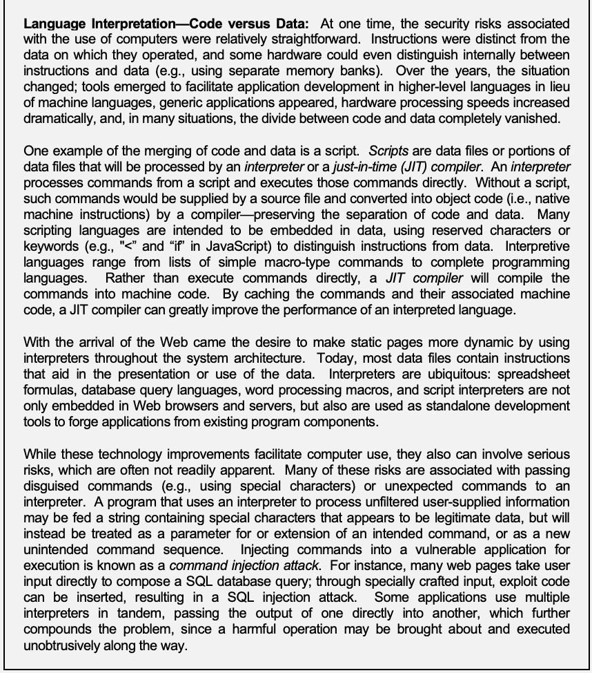
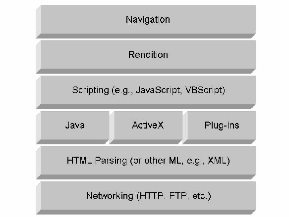
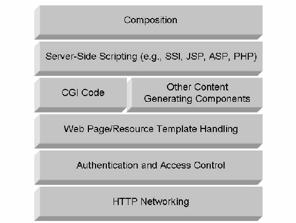
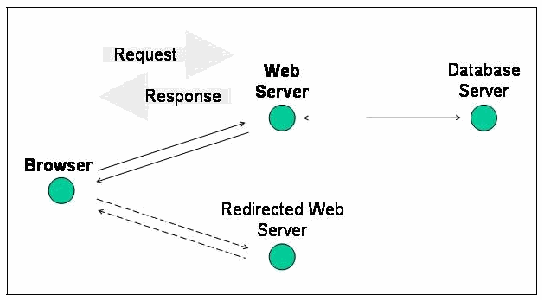
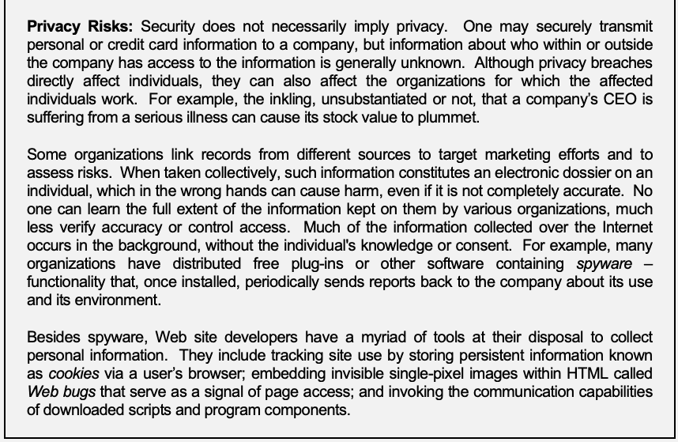
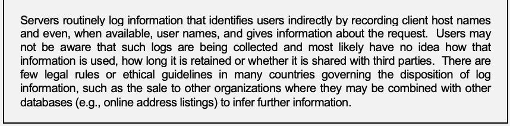

NIST SP 800-28 Version 2 日本語訳
英語タイトル : Guidelines on Active Content and Mobile Code日本語タイトル : アクティブコンテンツおよびモバイルコードに関するガイドライン
公開日 : 2008-03-07
原文URL : https://csrc.nist.gov/pubs/sp/800/28/ver2/final
翻訳編集 : 自動生成（有志による非公式の日本語訳）, 原文取得日 : 2026-10-01, 訳文 : 587 / 587 ブロック
[要約] SP 800-28 Version 2 は、現在使用されているアクティブコンテンツとモバイルコード技術の概要を示し、その取り扱いに関する判断のための知見を提供するガイドラインです。デスクトップやラップトップなどのエンドユーザーシステムに対する脅威、技術関連のリスク、セーフガードを詳述し、主要な配信手段であるWebブラウザーに重点を置きます。関連するセキュリティインシデントを減らすため、アクティブコンテンツの利用に関するセキュリティ強化に関心のある組織が使用できます。
［NIST のロゴ。公的な標章のため、この非公式サイトには掲載していません。原本 PDF を参照してください。］
Special Publication 800-28 Version 2
特別刊行物800-28 第2版
Guidelines on Active Content and Mobile Code
アクティブ・コンテンツおよびモバイル・コードに関するガイドライン
Recommendations of the National Institute of Standards and Technology
米国国立標準技術研究所の推奨事項
Wayne A. Jansen Theodore Winograd Karen Scarfone
Wayne A. Jansen Theodore Winograd Karen Scarfone
NIST 特別刊行物800-28 第2版
アクティブ・コンテンツおよびモバイル・コードに関するガイドライン
Recommendations of the National Institute of Standards and Technology
米国国立標準技術研究所の推奨事項
Wayne A. Jansen Theodore Winograd Karen Scarfone
Wayne A. Jansen Theodore Winograd Karen Scarfone
COMPUTER SECURITY
コンピューター・セキュリティ
Computer Security Division Information Technology Laboratory National Institute of Standards and Technology Gaithersburg, MD 20899-8930
コンピューター・セキュリティ部門 情報技術研究所 米国国立標準技術研究所 メリーランド州ゲイザースバーグ 20899-8930
March 2008
2008年3月
U.S. Department of Commerce
米国商務省
Carlos M. Gutierrez, Secretary
Carlos M. Gutierrez、長官
National Institute of Standards and Technology
米国国立標準技術研究所
James M. Turner, Acting Director
James M. Turner、所長代行
Reports on Computer Systems Technology
コンピューター・システム技術に関する報告書
The Information Technology Laboratory (ITL) at the National Institute of Standards and Technology (NIST) promotes the U.S. economy and public welfare by providing technical leadership for the nation’s measurement and standards infrastructure. ITL develops tests, test methods, reference data, proof of concept implementations, and technical analysis to advance the development and productive use of information technology. ITL’s responsibilities include the development of technical, physical, administrative, and management standards and guidelines for the cost-effective security and privacy of sensitive unclassified information in Federal computer systems. This Special Publication 800-series reports on ITL’s research, guidance, and outreach efforts in computer security and its collaborative activities with industry, government, and academic organizations.
米国国立標準技術研究所（NIST）の情報技術研究所（ITL）は、国の計測および標準インフラに技術的リーダーシップを提供することで、米国経済および公共の福祉を促進しています。ITLは、情報技術の開発および生産的利用を前進させるため、試験、試験方法、参照データ、概念実証の実装、および技術分析を開発します。ITLの責務には、連邦政府のコンピューター・システムにおける機微な非機密情報の費用対効果の高いセキュリティおよびプライバシーを実現するための技術的、物理的、管理的および運用管理上の標準ならびにガイドラインの策定が含まれます。この特別刊行物800シリーズは、コンピューター・セキュリティに関するITLの研究、指針および普及活動、ならびに産業界、政府および学術機関との協働活動を報告します。
National Institute of Standards and Technology Special Publication 800-28 Version 2 Natl. Inst. Stand. Technol. Spec. Publ. 800-28v2, 62 pages (Mar. 2008)
米国国立標準技術研究所 特別刊行物800-28 第2版 Natl. Inst. Stand. Technol. Spec. Publ. 800-28v2, 62ページ（2008年3月）
Certain commercial entities, equipment, or materials may be identified in this document in order to describe an experimental procedure or concept adequately. Such identification is not intended to imply recommendation or endorsement by the National Institute of Standards and Technology, nor is it intended to imply that the entities, materials, or equipment are necessarily the best available for the purpose.
原本PDFの抜粋画像

実験手順または概念を適切に説明するため、本書では特定の商業主体、機器または材料を特定する場合があります。このような特定は、米国国立標準技術研究所による推奨または是認を意味するものではなく、また当該主体、材料または機器が目的に対して必ずしも最良のものであることを意味するものでもありません。
Acknowledgements
謝辞
The authors, Wayne A. Jansen and Karen Scarfone of the National Institute of Standards and Technology (NIST) and Theodore Winograd of Booz Allen Hamilton, wish to thank their colleagues who reviewed drafts of this document and contributed to its technical content, particularly Tim Grance and Anoop Singhal of NIST, Edward Tracy of Booz Allen Hamilton, and Kurt Dillard.
著者である米国国立標準技術研究所（NIST）のWayne A. JansenおよびKaren Scarfone、ならびにBooz Allen HamiltonのTheodore Winogradは、本書の草稿を査読し、技術的内容に貢献した同僚に謝意を表します。特に、NISTのTim GranceおよびAnoop Singhal、Booz Allen HamiltonのEdward Tracy、ならびにKurt Dillardに感謝します。
Table of Contents
目次
List of Appendices
付録一覧
List of Figures
図の一覧
List of Tables
表一覧
Executive Summary
エグゼクティブサマリー
The private and public sectors depend heavily upon information technology (IT) systems to perform essential, mission-critical functions. As existing technology evolves and new technologies are introduced to provide improved capabilities and advanced features in systems, new technology-related vulnerabilities often arise. Organizations implementing and using advanced technologies must be increasingly on guard. One such category of technologies is active content. Broadly speaking, active content refers to electronic documents that can carry out or trigger actions automatically without an individual directly or knowingly invoking the actions. Exploits based on vulnerabilities in active content technologies can be insidious. The following key guidelines are recommended to organizations for dealing with active content.
民間部門および公共部門は、不可欠でミッション・クリティカルな機能を実行するために、情報技術（IT）システムに大きく依存しています。既存技術が進化し、システムの能力向上や高度な機能を提供する新技術が導入されるにつれて、技術に関連する新たな脆弱性がしばしば生じます。先進技術を導入し利用する組織は、ますます警戒を強める必要があります。そのような技術の一つがアクティブ・コンテンツです。広義には、アクティブ・コンテンツとは、個人が直接または意識的に起動しなくても、自動的に動作を実行または誘発する電子文書を指します。アクティブ・コンテンツ技術の脆弱性に基づく悪用は、気づかれにくく巧妙となり得ます。アクティブ・コンテンツに対処するため、組織には以下の主要なガイドラインを推奨します。 (must) (can) (can)
Organizations should understand the concept of active content and how it affects the security of their systems.
組織は、アクティブ・コンテンツの概念と、それが自組織のシステムのセキュリティにどう影響するかを理解すべきです（should）。
The use of products with capabilities for producing and handling active content contributes to the functionality of a system as a whole and thus is an important factor in IT procurement and implementation decisions. Active content technologies allow code, in the form of a script, macro, or other kind of portable instruction representation, to execute when the document is rendered. Like any technology, active content can be used to deliver essential services, but it can also become a source of vulnerability for exploitation by an attacker.
アクティブ・コンテンツの作成および処理機能を持つ製品の使用は、システム全体の機能性に寄与し、したがってIT調達および導入の意思決定における重要な要素です。アクティブ・コンテンツ技術では、スクリプト、マクロ、またはその他の可搬な命令表現の形をとるコードが、文書の描画時に実行されます。あらゆる技術と同様に、アクティブ・コンテンツは不可欠なサービスを提供するために使用できる一方、攻撃者に悪用される脆弱性の原因にもなり得ます。 (can) (can)
Examples of active content are Portable Document Format (PDF) documents, Web pages containing Java applets, JavaScript instructions, or ActiveX controls, word processor files containing macros, Flash and Shockwave media files, spreadsheet formulas, and other interpretable content. Active content may also be distributed embedded in email or as executable mail attachments.
アクティブ・コンテンツの例には、Portable Document Format（PDF）文書、Javaアプレット、JavaScript命令、またはActiveXコントロールを含むWebページ、マクロを含むワープロ・ファイル、FlashおよびShockwaveメディア・ファイル、表計算式、その他の解釈可能なコンテンツがあります。アクティブ・コンテンツは、電子メールに埋め込まれて、または実行可能なメール添付ファイルとして配布される場合もあります（may）。
Email and Web pages accessed through the Internet provide efficient ways to convey active content, but they are not the only means. Active content technologies span a broad range of products and services and involve various computational environments, including those of the desktop, workstation, server, and gateway devices. The knowledge required to understand their security ramifications is extensive. Organizations are encouraged to draw needed technical information from the many information resources that exist and gain a sound understanding of the security implications of active content.
インターネット経由でアクセスする電子メールおよびWebページは、アクティブ・コンテンツを効率よく伝達する方法を提供するが、それだけが手段ではありません。アクティブ・コンテンツ技術は幅広い製品およびサービスにわたり、デスクトップ、ワークステーション、サーバー、ゲートウェイ・デバイスなど、さまざまな計算環境に関係します。そのセキュリティ上の影響を理解するために必要な知識は広範です。組織には、既存の多様な情報源から必要な技術情報を得て、アクティブ・コンテンツのセキュリティ上の影響を十分に理解することが望まれます。
Organizations should develop policy regarding active content.
組織は、アクティブ・コンテンツに関するポリシーを策定すべきです（should）。
Information security in any organization is largely dependent on the quality of the security policy and the processes that an organization imposes on itself, including policy awareness and enforcement. As appropriate to their situation, organizations should develop policy for the procurement and use of products involving active content technologies. Active content should only be applied where it specifically benefits the quality of the services delivered and not simply for show or because of its availability within products. Both the consumption and production of active content should be addressed by the policy. A badly implemented, poorly planned, or nonexistent security policy can have a serious negative security impact. The policy should be stated clearly and consistently, and made known and enforced throughout the organization. Putting an organizational security policy on active content in place is an important first step in applying effective safeguards and mitigating the risks involved.
あらゆる組織の情報セキュリティは、セキュリティ・ポリシーの品質と、ポリシーの周知および実施を含む、組織が自らに課すプロセスに大きく依存します。各組織の状況に応じて、アクティブ・コンテンツ技術を含む製品の調達および使用に関するポリシーを策定すべきです（should）。アクティブ・コンテンツは、提供するサービスの品質に具体的な利点がある場合に限って適用すべきであり、見栄えのため、あるいは製品で利用可能だからというだけで使用すべきではありません（should）。ポリシーでは、アクティブ・コンテンツの消費と生成の両方を扱うべきです（should）。不適切に実装された、計画が不十分な、または存在しないセキュリティ・ポリシーは、セキュリティに深刻な悪影響を及ぼす可能性があります。ポリシーは明確かつ一貫して記述し、組織全体に周知して実施すべきです（should）。アクティブ・コンテンツに関する組織のセキュリティ・ポリシーを導入することは、効果的なセーフガードを適用し、関連リスクを軽減するための重要な第一歩です。
Organizations should be aware of the specific benefits they gain using active content and balance them against associated risks.
組織は、アクティブ・コンテンツを使用して得られる具体的な利点を把握し、それらを関連リスクと比較衡量すべきです（should）。
Active content has a history of increasing risks as well as benefits. Security involves continually analyzing and managing risks. A risk analysis identifies vulnerabilities and threats, enumerates potential attacks, assesses their likelihood of success, and estimates the potential damage from successful attacks. Risk management is the process of assessing risk, taking steps to reduce risk to an acceptable level, and maintaining that level of risk.
アクティブ・コンテンツには、リスクと利点の両方を増大させてきた歴史があります。セキュリティには、リスクの継続的な分析と管理が伴います。リスク分析では、脆弱性と脅威を特定し、潜在的な攻撃を列挙し、その成功可能性を評価し、攻撃が成功した場合の潜在的損害を推定します。リスク管理とは、リスクを評価し、許容可能な水準まで低減する措置を講じ、その水準を維持するプロセスです。
Security is relative to each organization and must take into account an organization’s specific needs, budget, and culture. As new products are selected and procured, organizations need to consider the risk environment, cost-effectiveness, assurance level, and security functional specifications, in making their decisions. Organizations should also be aware of the interconnectivity and associated interdependence of organizations, and that a risk accepted by one organization may inadvertently expose other organizations with whom they interoperate to the same risk. Moreover, since active content is heavily oriented toward rendering information for an individual, their decisions may affect the citizens being served. Once an assessment is made, safeguards can be put in place against those risks deemed significantly high, by either reducing the likelihood of occurrence or minimizing the consequences.
セキュリティは組織ごとに異なり、組織固有のニーズ、予算および文化を考慮しなければなりません（must）。新製品を選定・調達する際、組織は意思決定において、リスク環境、費用対効果、保証レベルおよびセキュリティ機能仕様を考慮する必要があります。組織は、組織間の相互接続性とそれに伴う相互依存性、およびある組織が受容したリスクが、相互運用する他の組織を意図せず同じリスクにさらす可能性があることも認識すべきです（should, may）。さらに、アクティブ・コンテンツは個人に向けた情報の描画を主な目的とするため、組織の判断はサービスを受ける市民に影響する場合があります（may）。評価後、発生可能性を低減するか、結果を最小化することで、十分に高いと判断されたリスクに対するセーフガードを講じることができます（can）。
Organizations need to maintain consistent systemwide security when configuring and integrating products involving active content into their system environments.
組織は、アクティブ・コンテンツを含む製品をシステム環境に構成・統合する際、システム全体で一貫したセキュリティを維持する必要があります。
Organizations should be knowledgeable of the features in the products they procure that can be used to control active content. Products and software applications that handle active content typically have built-in controls that can be used to control or prevent activation of related features. Email, spreadsheet, word processor, database, presentation graphics, and other desktop software applications have similar configuration settings that can be used to control the security capabilities of active content documents. Such configuration settings demand scrutiny in light of past exploits. It is an unfortunate fact that many products are delivered with insecure default settings.
組織は、調達する製品に備わる、アクティブ・コンテンツの制御に使用できる機能を把握すべきです。アクティブ・コンテンツを処理する製品やソフトウェア・アプリケーションには通常、関連機能の有効化を制御または防止するために使用できる組み込み制御があります。電子メール、表計算、ワープロ、データベース、プレゼンテーション・グラフィックスなどのデスクトップ・ソフトウェア・アプリケーションにも、アクティブ・コンテンツ文書のセキュリティ機能を制御するために使用できる同様の構成設定があります。過去の悪用事例を踏まえると、これらの構成設定は精査を要します。多くの製品が安全でない既定設定で提供されているのは残念な事実です。
Network devices or other special purpose software should be used to supplement existing application-oriented controls. For example, firewalls can be augmented by gateway devices to filter certain types of email attachments and Web content that have known malicious code characteristics and to reject them at a point of entry. Desktop anti-malware software has also become increasingly capable of detecting malicious code signatures within active content. In addition, many active content technologies provide mechanisms for dynamically restraining the behavior of mobile code by quarantining it within a logical sandbox. Organizations should become familiar with available security options and use them according to their organizational policy.
ネットワーク・デバイスまたはその他の専用ソフトウェアを使用して、既存のアプリケーション指向の制御を補完すべきです。例えば、ファイアウォールはゲートウェイ・デバイスで補強し、既知の悪意あるコードの特徴を持つ特定種類の電子メール添付ファイルおよびWebコンテンツをフィルタリングして、入口で拒否できます。デスクトップのマルウェア対策ソフトウェアも、アクティブ・コンテンツ内の悪意あるコードのシグネチャを検出する能力をますます高めています。さらに、多くのアクティブ・コンテンツ技術には、モバイル・コードを論理的なサンドボックス内に隔離して、その振る舞いを動的に制限する機構があります。組織は、利用可能なセキュリティ・オプションを把握し、組織のポリシーに従って使用すべきです。
1. Introduction
1. はじめに
1.1 Authority
1.1 権限
The National Institute of Standards and Technology (NIST) developed this document in furtherance of its statutory responsibilities under the Federal Information Security Management Act (FISMA) of 2002, Public Law 107-347.
米国国立標準技術研究所（NIST）は、2002年連邦情報セキュリティ管理法（FISMA）、公法107-347に基づく法定責任をさらに果たすため、本書を作成しました。
NIST is responsible for developing standards and guidelines, including minimum requirements, for providing adequate information security for all agency operations and assets; but such standards and guidelines shall not apply to national security systems. This guideline is consistent with the requirements of the Office of Management and Budget (OMB) Circular A-130, Section 8b(3), “Securing Agency Information Systems,” as analyzed in A-130, Appendix IV: Analysis of Key Sections. Supplemental information is provided in A-130, Appendix III.
NISTは、すべての機関の業務および資産に適切な情報セキュリティを提供するための最低要件を含む標準およびガイドラインを策定する責任を負うが、そのような標準およびガイドラインは国家安全保障システムには適用されません。本ガイドラインは、A-130付録IV「主要な節の分析」で分析されている、行政管理予算局（OMB）Circular A-130, Section 8b(3)「Securing Agency Information Systems」の要件に整合します。補足情報はA-130付録IIIに示します。
This guideline has been prepared for use by Federal agencies. It may be used by nongovernmental organizations on a voluntary basis and is not subject to copyright, though attribution is desired.
本ガイドラインは連邦政府機関での使用を目的として作成されました。非政府組織も任意で使用でき（may）、著作権の対象ではないが、出典を明記することが望まれます。
Nothing in this document should be taken to contradict standards and guidelines made mandatory and binding on Federal agencies by the Secretary of Commerce under statutory authority, nor should these guidelines be interpreted as altering or superseding the existing authorities of the Secretary of Commerce, Director of the OMB, or any other Federal official.
本書のいかなる内容も、法定権限に基づき商務長官が連邦政府機関に義務付け拘束力を持たせた標準およびガイドラインに反すると解釈すべきではなく（should）、また本ガイドラインを、商務長官、OMB長官、その他の連邦政府職員の既存権限を変更または置き換えるものと解釈すべきではありません（should）。
1.2 Purpose and Scope
1.2 目的および適用範囲
The purpose of this document is to provide an overview of active content and mobile code technologies in use today and offer insights for making informed IT security decisions on their application and treatment. The discussion gives details about the threats, technology risks, and safeguards for end user systems, such as desktops and laptops. Although various end user applications, such as email clients, can involve active content, Web browsers remain the primary vehicle for delivery and are underscored in the discussion. The tenets presented for Web browsers apply equally well to other end user applications and can be inferred directly.
本書の目的は、現在使用されているアクティブ・コンテンツおよびモバイル・コード技術の概要を示し、それらの適用および取り扱いに関して十分な情報に基づくITセキュリティ上の判断を行うための知見を提供することです。本書では、デスクトップやラップトップなどのエンドユーザー・システムに対する脅威、技術リスクおよびセーフガードを詳述します。電子メール・クライアントなど、さまざまなエンドユーザー・アプリケーションがアクティブ・コンテンツに関係する場合があるが、配信の主要な手段は依然としてWebブラウザーであるため、本書ではこれを重点的に扱います。Webブラウザーについて示す基本原則は、他のエンドユーザー・アプリケーションにも同様に適用され、そこから直接推論できます（can）。
This document may be used by organizations interested in enhancing security for existing and future use of active content to reduce related security incidents. This document presents generic principles that apply to all systems.
本書は、関連するセキュリティ・インシデントを減らすため、アクティブ・コンテンツの既存および将来の利用に関するセキュリティ強化に関心のある組織が使用できます（may）。本書では、すべてのシステムに適用される一般原則を示します。
This guideline does not cover the following aspects relating to securing active content:
本ガイドラインでは、アクティブ・コンテンツのセキュリティ確保に関する以下の側面は扱いません。
•General security considerations related to Web servers and browsers1
•Webサーバーおよびブラウザーに関する一般的なセキュリティ上の考慮事項1
•Secure Web application development.
•安全なWebアプリケーション開発。
1.3 Audience
1.3 対象読者
The intended audience for this document includes the following:
本書の対象読者は以下のとおりです。
•Users of desktops, laptops, and other end user systems
•デスクトップ、ラップトップおよびその他のエンドユーザー・システムの利用者
•System and network administrators
•システム管理者およびネットワーク管理者
•System developers and Webmasters who design, implement, or manage Web sites
•Webサイトを設計、実装または管理するシステム開発者およびWebマスター
•Security professionals, including security officers, security administrators, auditors, and others with IT security responsibilities
•セキュリティ担当者。セキュリティ責任者、セキュリティ管理者、監査担当者、およびITセキュリティ責任を持つその他の者を含みます。
•IT program managers who ensure that adequate security measures are considered throughout a system’s life cycle.
•システムのライフサイクル全体を通じて適切なセキュリティ対策が検討されるようにするITプログラム・マネージャー。
This document, while technical in nature, provides background information to help readers understand the topics that are discussed. The material presumes that readers have some minimal operating system, networking, Web server, and active content and mobile code expertise. Because of the constantly changing nature of active content and mobile code threats and vulnerabilities, readers are expected to take advantage of other resources, including those listed in this document, for more current and detailed information.
本書は技術的な性質を持つが、読者が取り上げるトピックを理解できるよう背景情報を提供します。読者は、オペレーティング・システム、ネットワーク、Webサーバー、アクティブ・コンテンツおよびモバイル・コードについて、最低限の専門知識を持つことを前提としています。アクティブ・コンテンツおよびモバイル・コードの脅威と脆弱性は常に変化するため、読者は本書に記載されたものを含む他の情報源を活用し、より新しく詳細な情報を得ることが期待されます。
1.4 Document Structure
1.4 文書の構成
The remainder of this document is organized into the following major sections:
本書の残りの部分は、以下の主要な節で構成されます。
•Section 2 presents an overview of active content and mobile code and discusses associated security problems.
•第2節では、アクティブ・コンテンツおよびモバイル・コードの概要を示し、関連するセキュリティ問題を説明します。
•Section 3 discusses the threats introduced by active content and mobile code.
•第3節では、アクティブ・コンテンツおよびモバイル・コードによってもたらされる脅威を説明します。
•Section 4 discusses the technology-related risks associated with various active content and mobile code implementations.
•第4節では、さまざまなアクティブ・コンテンツおよびモバイル・コードの実装に関連する技術的リスクを説明します。
•Section 5 discusses the safeguards available for mitigating the risks and threats discussed in previous sections.
•第5節では、前の節で説明したリスクおよび脅威を軽減するために利用できるセーフガードを説明します。
•Section 6 provides a summary of the recommendations discussed in the document.
•第6節では、本書で説明した推奨事項をまとめます。
•Section 7 contains a list of references.
•第7節には参考文献一覧を掲載します。
The document also contains several appendices with supporting material. Appendix A lists HTTP Request Methods and Appendix B offers an HTTP Response Status table. Appendix C contains a glossary. A list of acronyms is found in Appendix D.
本書には補足資料を含む複数の付録もあります。付録AにはHTTP要求メソッド、付録BにはHTTP応答ステータスの表を掲載します。付録Cには用語集、付録Dには頭字語一覧を掲載します。
2. Background
2. 背景
The private and public sectors depend heavily upon IT systems to carry out essential, mission-critical functions. As existing technology evolves and new technologies are introduced to provide new capabilities and features, new vulnerabilities are often introduced as well. Organizations implementing and using advanced technologies must be increasingly on guard.
民間部門および公共部門は、不可欠でミッション・クリティカルな機能を遂行するためにITシステムに大きく依存しています。既存技術が進化し、新たな能力や機能を提供する新技術が導入されるにつれて、新たな脆弱性もしばしば持ち込まれます。先進技術を導入し利用する組織は、ますます警戒を強めなければなりません（must）。
One category of technologies that has emerged in recent years is active content. Although the term has different connotations among individuals, it is used here in its broadest sense to refer to electronic documents that contain embedded software components, which can carry out or trigger actions automatically without an individual directly or knowingly invoking the actions. Examples of active content documents are PDF2 documents; Web pages conveying or linking to mobile code such as JavaScript, VBScript, Java applets, and ActiveX controls; desktop application files containing macros; and Hypertext Markup Language (HTML) encoded email bearing executable content or attachments. Taken to its extreme, active content becomes, in effect, a delivery mechanism for mobile code. The purpose of this document is to provide an overview of active content, its technological underpinnings, and suitable security measures, so that organizations understand the associated security risks and can make informed IT security decisions on their applications.
近年登場した技術カテゴリーの一つがアクティブ・コンテンツです。この用語は人によって異なる意味合いを持つが、ここでは最も広い意味で用い、埋め込みソフトウェア・コンポーネントを含み、個人が直接または意識的に動作を起動しなくても、その動作を自動的に実行または誘発できる電子文書を指します。アクティブ・コンテンツ文書の例は、PDF2文書、JavaScript、VBScript、Javaアプレット、ActiveXコントロールなどのモバイル・コードを伝達する、またはそれらへのリンクを含むWebページ、マクロを含むデスクトップ・アプリケーション・ファイル、および実行可能コンテンツまたは添付ファイルを含むHypertext Markup Language（HTML）形式の電子メールです。極端な場合、アクティブ・コンテンツは事実上、モバイル・コードの配信メカニズムとなります。本書の目的は、アクティブ・コンテンツとその技術的基盤、ならびに適切なセキュリティ対策の概要を示し、組織が関連するセキュリティ・リスクを理解し、アプリケーションに関する十分な情報に基づくITセキュリティ上の判断を行えるようにすることです。
Being able to download files and electronic documents off the Internet is a useful function and a common practice for many people today. Web pages serve as an electronic counterpart to paper documents such as forms, brochures, magazines, and newspapers. Although paper documents come in different shapes and sizes, they are composed entirely of text and graphics. Web pages can entail active content capable of delivering digitally encoded multimedia information or even an interactive experience enabled by embedded computer instructions.
インターネットからファイルや電子文書をダウンロードできることは有用な機能であり、今日、多くの人々にとって一般的な慣行です。Webページは、フォーム、パンフレット、雑誌、新聞などの紙文書に対応する電子的なものとして機能します。紙文書は形や大きさが異なるものの、テキストとグラフィックスだけで構成されます。Webページには、デジタル符号化されたマルチメディア情報や、埋め込みコンピューター命令によって実現される対話型体験を提供できるアクティブ・コンテンツが含まれる場合があります（can）。
Active content involves a host of technologies such as built-in macro processing, scripting languages, and virtual machines, which blur the distinctions between code and data. Electronic documents have evolved to the point that they are themselves programs or contain programs that can be self-triggered. Loading a document into a word processor can produce the same effect as executing a program and requires that appropriate caution is taken.
アクティブ・コンテンツには、組み込みマクロ処理、スクリプト言語、仮想マシンなど、多数の技術が関係し、コードとデータの区別を曖昧にします。電子文書は、それ自体がプログラムとなる、または自動起動できるプログラムを含む段階まで進化しました。文書をワープロに読み込むとプログラムを実行したのと同じ結果が生じる可能性があり、適切な注意が必要です。 (can) (can)
The popularity of the Internet has particularly spurred the trend toward active content. A dynamic weather map, a stock ticker, and live camera views or programmed broadcasts appearing on a Web page are common examples of use of this technology. Web sites are also increasingly adopting technologies, such as Asynchronous JavaScript and XML (AJAX) and Adobe Flash, through which partial page update transactions with remote Web servers or Web services can occur dynamically in the background— providing a richer, more responsive interface for users than a complete page reload [Mcl05]. Capabilities for Web access have also spread from desktop and laptop computers to portable handheld devices, such as cell phones and personal digital assistants (PDA), and Internet appliances. Like any technology, active content can provide a useful capability for legitimate purposes, but can also become a source of vulnerabilities for an attacker to exploit. A significant share of today’s malware involves active content.
インターネットの普及は、アクティブ・コンテンツへの移行を特に促進しました。動的な天気図、株価表示、Webページ上に表示されるライブカメラ映像やプログラム配信は、この技術の一般的な使用例です。Webサイトでは、Asynchronous JavaScript and XML（AJAX）やAdobe Flashなどの技術も採用が進んでいます。これらにより、リモートWebサーバーまたはWebサービスとの部分的なページ更新トランザクションをバックグラウンドで動的に実行でき（can）、ページ全体を再読み込みする場合より豊かで応答性の高いユーザー・インターフェースを実現します[Mcl05]。Webアクセス機能は、デスクトップやラップトップから、携帯電話、携帯情報端末（PDA）などの携帯型ハンドヘルド・デバイスやインターネット機器にも広がっています。あらゆる技術と同様、アクティブ・コンテンツは正当な目的のために有用な機能を提供できる一方（can）、攻撃者が悪用する脆弱性の原因にもなり得ます。現在のマルウェアの相当部分はアクティブ・コンテンツに関係しています。 (can)
Many Web sites offer electronic documents that act in much the same way as paper documents—allowing users to access and view content, follow references to other documents, and furnish information by filling in forms. That is, Web pages delivered from Web servers to individuals via Web browsers impart an inherent document metaphor [Ven99]. The value of this metaphor is that people are familiar with handling paper documents and can quickly adapt to using electronic facsimiles appearing within Web pages, since they understand the basic operations. One drawback is that the document metaphor is generally considered non-threatening and can lull the user into a false sense of security. Moreover, strictly observing the document metaphor somewhat limits the way in which Web-based applications function. In particular, non-textual content does not lend itself to paper document style handling. For example, streaming or continuous delivery media, such as a live radio transmission or voice communication, can transpire only as it occurs in real time.
多くのWebサイトは、紙文書とほぼ同じように機能する電子文書を提供しており、利用者はコンテンツへのアクセスと閲覧、他の文書への参照の追跡、フォームへの入力による情報提供を行えます。つまり、WebサーバーからWebブラウザーを介して個人に配信されるWebページには、文書というメタファーが本質的に備わっています[Ven99]。このメタファーが有用なのは、人々が紙文書の扱いに慣れており、基本的な操作を理解しているため、Webページ内に表示される電子的な複製にもすぐに適応できるからです。欠点の一つは、文書メタファーが一般に脅威のないものと受け取られ、利用者に誤った安心感を与えかねないことです。さらに、文書メタファーを厳密に守ると、Webベース・アプリケーションの機能がある程度制限されます。特に、テキスト以外のコンテンツは紙文書型の扱いになじみません。例えば、ライブのラジオ放送や音声通信などのストリーミングまたは連続配信メディアは、リアルタイムでのみ行うことができます。
Increasingly, Web sites are offering interfaces that move beyond the document metaphor towards general-purpose vehicles to provision electronic services. In particular, many Web sites are relying on user-generated content, including social networking, photo and video sharing, bookmarking, and knowledge-sharing. These sites are becoming increasingly popular, with many organizations deploying one or more knowledge-sharing Web site sites for internal or external users. In August 2007, a video sharing site was the fourth most visited page on the Web, while social networking sites were the sixth, seventh, eighth, and ninth most visited.3 These Web sites are more interactive than previous Web pages, allowing users—both legitimate and malicious—to modify or add to existing content. This situation imparts more challenges to organizations that must secure their computer systems against potential threats associated with user-generated content (see Section 3 for more information about threats). Where historically the flow of information on the Web was from Web sites to the user, the advent of user-generated content allows information to flow freely in both directions—making it more difficult for organizations to control what information leaves or enters networked systems.
Webサイトでは、文書メタファーを超え、電子サービスを提供する汎用的な手段となるインターフェースがますます提供されています。特に、多くのWebサイトは、ソーシャル・ネットワーキング、写真や動画の共有、ブックマーク、知識共有など、ユーザー生成コンテンツに依存しています。こうしたサイトは人気が高まり、多くの組織が内部または外部の利用者向けに1つ以上の知識共有Webサイトを展開しています。2007年8月には、動画共有サイトがWeb上で4番目にアクセス数の多いページとなり、ソーシャル・ネットワーキング・サイトは6位、7位、8位、9位となりました。3これらのWebサイトは従来のWebページより対話性が高く、正当な利用者も悪意ある利用者も既存コンテンツを変更したり、コンテンツを追加したりできます。この状況は、ユーザー生成コンテンツに伴う潜在的脅威からコンピューター・システムを保護しなければならない組織に、より多くの課題をもたらします（脅威の詳細は第3節を参照してください）。歴史的にはWeb上の情報はWebサイトから利用者へ流れていたが、ユーザー生成コンテンツの登場によって情報が双方向に自由に流れるようになり、組織がネットワーク接続システムから出ていく情報やシステムに入ってくる情報を制御することが難しくなっています。
A wide variety of active content implementations are available for Web sites to deploy, including PDF, JavaScript, Java, ActiveX, and other technologies which are discussed in Section 4. Each active content implementation may require a different interpreter on a user’s computer (i.e., installed as a browser component), further complicating the security configuration for organizations. Because each interpreter may be supplied by a different manufacturer, users have the responsibility to track the installed browser components and update them whenever a vulnerability is discovered. The lack of a centralized configuration management system may lead to vulnerable unpatched systems. Similarly, new versions of active content implementations may alter how the interpreter presents active content. It is not uncommon for patches to active content components to be incompatible with the active content generated by an organization’s Web sites, requiring organizations to choose from one of two potentially costly alternatives: continue using incompatible and possibly vulnerable browser components, or update the Web site.
Webサイトで展開できるアクティブ・コンテンツの実装は多種多様であり、PDF、JavaScript、Java、ActiveXなどの技術があります（第4節で説明）。アクティブ・コンテンツの実装ごとに、利用者のコンピューター上で異なるインタープリター（すなわちブラウザー・コンポーネントとしてインストールされるもの）が必要となる場合があり（may）、組織のセキュリティ構成がさらに複雑になります。それぞれのインタープリターは異なるメーカーから提供される場合がある（may）ため、インストール済みのブラウザー・コンポーネントを把握し、脆弱性が発見されるたびに更新する責任は利用者にあります。集中型の構成管理システムがないと、脆弱性がありパッチ未適用のシステムが生じる可能性があります。アクティブ・コンテンツ実装の新バージョンによって、インタープリターがアクティブ・コンテンツを提示する方法が変わる場合もあります（may）。アクティブ・コンテンツ・コンポーネントへのパッチが組織のWebサイトで生成されるアクティブ・コンテンツと互換性を持たず、組織が、互換性がなく脆弱な可能性もあるブラウザー・コンポーネントを使い続けるか、Webサイトを更新するかという、費用のかかる可能性のある二つの選択肢のいずれかを選ばなければならないことは珍しくありません。 (may)
While active content introduces a number of security risks into organizations’ computer systems, it is often impractical for security policies to prohibit the use of active content. Many commercial off-the-shelf (COTS) Web applications rely on active content—and many legitimate external Web sites, from news aggregators to online banking and research databases, also use it. As such, many organizations choose to examine and mitigate the risks associated with active content rather than simply disallowing active content.
アクティブ・コンテンツは組織のコンピューター・システムに多くのセキュリティ・リスクをもたらすものの、セキュリティ・ポリシーでその使用を禁止するのは現実的でないことが多くあります。多くの市販既製品（COTS）Webアプリケーションはアクティブ・コンテンツに依存しており、ニュース集約サイトからオンライン・バンキング、研究データベースに至る多くの正当な外部Webサイトでも使用されています。そのため、多くの組織はアクティブ・コンテンツを単に禁止するのではなく、関連リスクを調査し軽減することを選んでいます。
Language Interpretation—Code versus Data: At one time, the security risks associated with the use of computers were relatively straightforward. Instructions were distinct from the data on which they operated, and some hardware could even distinguish internally between instructions and data (e.g., using separate memory banks). Over the years, the situation changed; tools emerged to facilitate application development in higher-level languages in lieu of machine languages, generic applications appeared, hardware processing speeds increased dramatically, and, in many situations, the divide between code and data completely vanished.
原本PDFの抜粋画像

言語解釈—コードとデータ：かつて、コンピューター使用に伴うセキュリティ・リスクは比較的単純だった。命令は、それが処理するデータと区別され、一部のハードウェアは内部で命令とデータを区別することさえできました（例えば、別個のメモリー・バンクを用います）。年月とともに状況は変わり、機械語の代わりに高水準言語でアプリケーションを開発するためのツールが登場し、汎用アプリケーションが現れ、ハードウェアの処理速度が劇的に向上し、多くの状況でコードとデータの境界が完全に消失しました。
One example of the merging of code and data is a script. Scripts are data files or portions of data files that will be processed by an interpreter or a just-in-time (JIT) compiler. An interpreter processes commands from a script and executes those commands directly. Without a script, such commands would be supplied by a source file and converted into object code (i.e., native machine instructions) by a compiler—preserving the separation of code and data. Many scripting languages are intended to be embedded in data, using reserved characters or keywords (e.g., "<” and “if” in JavaScript) to distinguish instructions from data. Interpretive languages range from lists of simple macro-type commands to complete programming languages. Rather than execute commands directly, a JIT compiler will compile the commands into machine code. By caching the commands and their associated machine code, a JIT compiler can greatly improve the performance of an interpreted language.
コードとデータが融合する一例がスクリプトです。スクリプトは、インタープリターまたはジャストインタイム（JIT）コンパイラーによって処理されるデータ・ファイル、またはその一部です。インタープリターはスクリプトからコマンドを読み取り、そのコマンドを直接実行します。スクリプトがなければ、そのようなコマンドはソース・ファイルで提供され、コンパイラーによってオブジェクト・コード（すなわちネイティブな機械命令）に変換され、コードとデータの分離が保たれます。多くのスクリプト言語は、予約文字やキーワード（JavaScriptにおける "<” や “if” など）を用いて命令とデータを区別し、データに埋め込まれるよう設計されています。解釈型言語には、単純なマクロ型コマンドのリストから完全なプログラミング言語まで幅があります。JITコンパイラーは、コマンドを直接実行する代わりに、機械語コードにコンパイルします。コマンドと関連する機械語コードをキャッシュすることで、JITコンパイラーは解釈型言語の性能を大幅に向上できます。
With the arrival of the Web came the desire to make static pages more dynamic by using interpreters throughout the system architecture. Today, most data files contain instructions that aid in the presentation or use of the data. Interpreters are ubiquitous: spreadsheet formulas, database query languages, word processing macros, and script interpreters are not only embedded in Web browsers and servers, but also are used as standalone development tools to forge applications from existing program components.
Webの登場に伴い、システム・アーキテクチャ全体でインタープリターを使用して静的ページをより動的にしたいという要望が生まれました。今日、ほとんどのデータ・ファイルには、データの提示または使用を支援する命令が含まれています。インタープリターは至るところに存在します。表計算式、データベース照会言語、ワープロ・マクロおよびスクリプト・インタープリターは、Webブラウザーやサーバーに埋め込まれているだけでなく、既存のプログラム・コンポーネントからアプリケーションを作るスタンドアロンの開発ツールとしても使われます。
While these technology improvements facilitate computer use, they also can involve serious risks, which are often not readily apparent. Many of these risks are associated with passing disguised commands (e.g., using special characters) or unexpected commands to an interpreter. A program that uses an interpreter to process unfiltered user-supplied information may be fed a string containing special characters that appears to be legitimate data, but will instead be treated as a parameter for or extension of an intended command, or as a new unintended command sequence. Injecting commands into a vulnerable application for execution is known as a command injection attack. For instance, many web pages take user input directly to compose a SQL database query; through specially crafted input, exploit code can be inserted, resulting in a SQL injection attack. Some applications use multiple interpreters in tandem, passing the output of one directly into another, which further compounds the problem, since a harmful operation may be brought about and executed unobtrusively along the way.
こうした技術の進歩はコンピューターの利用を容易にする一方、深刻なリスクを伴うこともあり、それらはしばしばすぐには明らかになりません。これらのリスクの多くは、偽装されたコマンド（例えば特殊文字を使用する）または予期しないコマンドをインタープリターに渡すことに関連します。フィルタリングされていないユーザー提供情報をインタープリターで処理するプログラムには、正当なデータに見える特殊文字を含む文字列が与えられ、意図されたコマンドのパラメーターもしくは拡張、または意図しない新たなコマンド列として処理されることがあります。脆弱なアプリケーションにコマンドを挿入して実行させることを、コマンド・インジェクション攻撃と呼びます。例えば、多くのWebページはユーザー入力をそのまま使ってSQLデータベース照会を構成します。特別に細工した入力により悪用コードを挿入でき、結果としてSQLインジェクション攻撃が発生します。アプリケーションによっては複数のインタープリターを連携して使用し、一方の出力を直接もう一方に渡すため、有害な操作が途中で気づかれずに引き起こされ実行される可能性があり、問題はさらに深刻になります。
2.1 Browser Anatomy
2.1 ブラウザーの構成
Browser is the generic term used to refer to software that lets individuals view pages from various sources, including Web servers on the Internet, which make up the World Wide Web. Firefox and Internet Explorer are two popular Web browsers that aid in navigating text, graphics, hyperlinks, audio, video, and other multimedia information and services on the Web. Although Web browsers support a number of protocols, such as the File Transfer Protocol [FTP], they rely mainly on a simple, request-response communications protocol, HTTP [HTTP], for Web access. The browser requests information from a specific Web site by sending a method request to the Web server conveying the Universal Resource Identifier (URI) of the desired resource (e.g., the Uniform Resource Locator (URL) of a Web page), client information, and content handling capabilities. Appendix A contains a brief summary of the available request methods a browser can issue. Typical usage mainly involves retrieving information from the server or submitting form input by issuing GET and POST methods, respectively.
ブラウザーとは、World Wide Webを構成するインターネット上のWebサーバーなど、さまざまなソースからのページを個人が閲覧できるようにするソフトウェアの総称です。FirefoxおよびInternet Explorerは、Web上のテキスト、図表、ハイパーリンク、音声、動画、その他のマルチメディア情報やサービスの閲覧を支援する、広く使われているWebブラウザーです。WebブラウザーはFile Transfer Protocol [FTP]など複数のプロトコルをサポートするが、Webアクセスには主に単純な要求・応答型通信プロトコルであるHTTP [HTTP]を使用します。ブラウザーは、目的のリソースのUniversal Resource Identifier（URI）（例えばWebページのUniform Resource Locator（URL））、クライアント情報、およびコンテンツ処理能力を伝えるメソッド要求をWebサーバーに送信し、特定のWebサイトから情報を要求します。ブラウザーが発行できる利用可能な要求メソッドの概要は付録Aに示します。一般的な使い方では、GETメソッドでサーバーから情報を取得し、POSTメソッドでフォーム入力を送信します。
Once the request is issued, the browser expects a response from the server containing a status code, meta-information about the resource, the content corresponding to the resource requested (e.g., the Web page specified by the URL), and an indication of content encoding. Five general classes of response exist, as indicated by the first digit of the status code. For example, most computer users have received a 400 series code, the 404 code, at one time or another when unsuccessfully attempting to reach a resource at some site. Appendix B contains a brief summary of the classes of status code returned by a server.
要求を発行すると、ブラウザーは、ステータス・コード、リソースに関するメタ情報、要求されたリソースに対応するコンテンツ（例えばURLで指定されたWebページ）、およびコンテンツ符号化の表示を含む応答をサーバーに期待します。応答には一般的な5つのクラスがあり、ステータス・コードの最初の桁で示されます。例えば、多くのコンピューター利用者は、あるサイトのリソースへのアクセスに失敗した際などに、400番台のコード、特に404コードを一度は受け取ったことがあります。サーバーが返すステータス・コードのクラスの概要は付録Bに示します。
The representation of a resource such as a Web page involves control codes, normally referred to as tags, and data. Browsers interpret control codes within Web pages, which indicate the structure of the data (e.g., beginning of item, end of item) and the way to render it (e.g., heading, subheading, paragraph, list, embedded image). The codes may also embed URLs of additional information such as images, which entail further requests to the server to retrieve the information and complete the Web page. The control codes are the subject of intense standardization and include specifications for HTML [HTML4], Cascaded Style Sheets (CSS) [CSS1, CSS2], and the eXtensible Markup Language (XML) [XML1]. Browsers are designed to read such codes, interpret their meaning, and render the Web page accordingly.
Webページなどのリソース表現には、通常タグと呼ばれる制御コードとデータが含まれます。ブラウザーはWebページ内の制御コードを解釈し、それらはデータの構造（例えば項目の開始、終了）や描画方法（例えば見出し、小見出し、段落、リスト、埋め込み画像）を示します。制御コードには画像など追加情報のURLが埋め込まれる場合もあり（may）、その情報を取得してWebページを完成させるため、サーバーへの追加要求が必要となります。制御コードは活発な標準化の対象であり、HTML [HTML4]、Cascaded Style Sheets（CSS）[CSS1, CSS2]、eXtensible Markup Language（XML）[XML1]の仕様を含みます。ブラウザーはこうしたコードを読み取り、その意味を解釈して、対応するWebページを描画するよう設計されています。
Browsers inherently involve many different program components, both internal and external. Figure 2-1 illustrates common components found in most browsers [Gro05]. The component layering illustrated is only for discussion purposes and not meant to imply any structural relationship. Essential core components present in all browsers include a basic protocol machine for HTTP and other supported protocols; a means to navigate forward and back, reload content, and maintain history; a parser for HTML and style sheets; and a mechanism to layout and render content. The remaining components represent mechanisms that handle other forms of content. To some extent, the specific choices depend on the browser manufacturer. However, competition and market demand influence manufacturers to offer components having comparable functionality with a high degree of compatibility and uniformity. Interpreters for scripting languages (e.g., JavaScript, Visual Basic Script, and JScript) are a useful means of processing instructions conveyed from the server by the browser. Similarly, environmental components for Java, ActiveX, and Plug-in technology allow other types of code to be executed at the browser. Further details about these technologies are given in Section 4.
ブラウザーには、内部および外部の多様なプログラム・コンポーネントが本質的に関係します。図2-1に、ほとんどのブラウザーに見られる一般的なコンポーネントを示します[Gro05]。図示したコンポーネントの階層は説明のためのもので、構造上の関係を示す意図はありません。すべてのブラウザーに存在する不可欠な中核コンポーネントには、HTTPおよびその他の対応プロトコル用の基本プロトコル・マシン、前後移動、コンテンツ再読み込み、履歴維持の機能、HTMLおよびスタイルシートのパーサー、コンテンツのレイアウトおよび描画機構があります。残るコンポーネントは他形式のコンテンツを扱う機構です。ある程度、具体的な選択はブラウザー・メーカーによって異なります。しかし、競争と市場の需要は、メーカーが高い互換性と均一性を備え、同等の機能を持つコンポーネントを提供するよう促します。スクリプト言語（JavaScript、Visual Basic Script、JScriptなど）のインタープリターは、ブラウザーがサーバーから受信した命令を処理する有用な手段です。同様に、Java、ActiveX、プラグイン技術のための環境コンポーネントにより、他の種類のコードをブラウザー上で実行できます。これらの技術の詳細は第4節に示します。

図2-1. 一般的なブラウザーの基本構成。層が上から下へ積み重なっている。Navigation（ナビゲーション）、Rendition（描画）、Scripting (e.g., JavaScript, VBScript)（スクリプト。例：JavaScript、VBScript）、Java、ActiveX、Plug-ins（プラグイン）に分かれた層、HTML Parsing (or other ML, e.g., XML)（HTML の解析。または XML などの他のマークアップ言語）、Networking (HTTP, FTP, etc.)（ネットワーク通信。HTTP、FTP など）。
Figure 2-1. Basic Components of a Generic Browser
図2-1. 一般的なブラウザーの基本構成
To simplify browser development, software designs allow extensibility through a variety of techniques for communicating with other functional components. The motivation is twofold: no one can reasonably build in the means to render all forms of content, and to attempt to do so would limit innovation as well as the usefulness of the browser. As long as the browser design employs or provides a well-defined interface, other software producers can readily extend functionality with their components. In general, the program components of a browser, both built-in and otherwise, can be divided into the classes described below [Mor98].
ブラウザーの開発を簡素化するため、ソフトウェア設計では、他の機能コンポーネントと通信する多様な技法を通じて拡張性を実現します。その動機は2つあります。あらゆる形式のコンテンツを描画する機能をすべて組み込むことは現実的に不可能であり、それを試みればイノベーションとブラウザーの有用性が制限されます。ブラウザー設計が明確に定義されたインターフェースを採用または提供していれば、他のソフトウェア製作者は自らのコンポーネントで機能を容易に拡張できます。一般に、組み込みか否かを問わず、ブラウザーのプログラム・コンポーネントは以下に説明するクラスに分類できます[Mor98]。
•Components incorporated directly within the browser. Browsers contain a significant amount of built-in functionality and typically can inherently render a variety of content types, including text, HTML delimited text, scripting languages, Java applets, and common types of image files. The associated program components are functionally internal to the browser and able to interpret such content directly. To keep the browser safe from sources that have varying levels of trust, the program components must take precautions against arbitrary input received. Because these programs are contained within the browser, the browser manufacturer is able to impose security constraints on them. Built-in functionality is also a means for the manufacturer to distinguish its product from others in various ways such as offering proprietary extensions to standard script languages, close integration and interworking with other product offerings, and entirely new content handling capabilities.
•ブラウザー内に直接組み込まれたコンポーネント。ブラウザーには相当量の組み込み機能があり、通常、テキスト、HTMLで区切られたテキスト、スクリプト言語、Javaアプレット、一般的な画像ファイルなど、多様なコンテンツ形式を本来備わった機能で描画できます。関連するプログラム・コンポーネントは機能上ブラウザー内部にあり、そのようなコンテンツを直接解釈できます。信頼レベルがさまざまなソースからブラウザーを保護するため、プログラム・コンポーネントは任意の入力に対して予防措置を講じなければなりません（must）。これらのプログラムはブラウザーに含まれるため、ブラウザー・メーカーはそれらにセキュリティ制約を課すことができます（can）。組み込み機能は、標準スクリプト言語へのプロプライエタリー拡張、他製品との緊密な統合と相互運用、まったく新しいコンテンツ処理機能の提供など、さまざまな方法でメーカーが自社製品を他社製品と差別化する手段でもあります。
Built-in functionality should follow an explicit security model to ensure security. For example, enforcing the same origin policy, which prevents content loaded from one “origin’ (i.e., the context defined by host domain name, protocol, and port) from getting or setting properties of a document loaded from a different “origin,” is a fundamental policy employed by present-day browsers. The implementation of secure JavaScript in Mozilla illustrates the range of considerations involved in defining a security model [Anu98]. The implementation controls access to resources and external interfaces, prevents residual information from being retained and accessible among different contexts operating simultaneously or sequentially, and allows policy, which partitions the name space for access control purposes, to be specified independently of mechanism. Differences can and do exist in the security models used by different browsers.
組み込み機能は、セキュリティを確保するため、明示的なセキュリティ・モデルに従うべきです（should）。例えば、同一オリジン・ポリシーを適用することは、現在のブラウザーが採用する基本的なポリシーです。このポリシーは、ある「オリジン」（ホスト・ドメイン名、プロトコル、ポートで定義されるコンテキスト）から読み込まれたコンテンツが、別の「オリジン」から読み込まれた文書のプロパティを取得または設定することを防ぎます。Mozillaにおける安全なJavaScriptの実装は、セキュリティ・モデルの定義に関係する多様な考慮事項を示しています[Anu98]。その実装は、リソースおよび外部インターフェースへのアクセスを制御し、同時または順次に動作する異なるコンテキスト間で残存情報が保持されアクセス可能となるのを防ぎ、アクセス制御のために名前空間を分割するポリシーを機構とは独立して指定できるようにします。異なるブラウザーが用いるセキュリティ・モデルには差異が存在し得るし、実際に存在します。
•Components installed to extend the browser functionality. A significant innovation in the design of Web browsers is the ability to extend them beyond their built-in functionality through a defined interface. For a browser to hand off content rendering to such program components, the component must register its handling capabilities (i.e., the file extensions and Multipurpose Internet Mail Extensions [MIME] content types it supports) with the browser when it installs. Often, these extensions require full access to the browser internals and the underlying operating system (OS) to accomplish their goals. Programs that extend browsers typically enjoy full function interfaces to the internals of the browsers and to the OS.
•ブラウザーの機能を拡張するためにインストールされるコンポーネント。Webブラウザー設計における重要な革新は、定義されたインターフェースを通じて組み込み機能を超えて拡張できることです。ブラウザーがコンテンツの描画をこうしたプログラム・コンポーネントに引き渡すには、コンポーネントがインストール時に、自身が処理できる機能（対応するファイル拡張子およびMultipurpose Internet Mail Extensions [MIME]コンテンツ型）をブラウザーに登録しなければなりません（must）。多くの場合、これらの拡張機能が目的を達成するには、ブラウザー内部および基盤となるオペレーティング・システム（OS）への完全なアクセスが必要となります。ブラウザーを拡張するプログラムは通常、ブラウザー内部およびOSに対する完全な機能インターフェースを利用できます。
The two most common means of extending browsers, Netscape plug-ins and ActiveX controls, have somewhat different security models. Microsoft ActiveX controls can require authenticated digital signatures as a prerequisite for installation, while Netscape plug-ins have no mechanism for enforcing authenticated signatures. Once an ActiveX control is installed, however, it has free range over the entire machine, whereas the plug-in is confined to the capabilities of the browser.
ブラウザーを拡張する最も一般的な2つの手段であるNetscapeプラグインとActiveXコントロールでは、セキュリティ・モデルが多少異なります。Microsoft ActiveXコントロールは、インストールの前提条件として認証済みデジタル署名を要求できる（can）が、Netscapeプラグインには認証済み署名を強制する機構がありません。ただし、ActiveXコントロールは一度インストールされるとマシン全体を自由に操作できるのに対し、プラグインの能力はブラウザーの機能範囲に制限されます。
•Programs launched as independently executing processes. As an alternative to using a programming interface, a browser’s capabilities can be extended using a so-called helper application or content viewer. Like a plug-in, the browser starts a helper application and hands off content rendering when it encounters a content type (MIME content type or file extension) for which the helper application is registered to handle. Unlike a plug-in, a helper application runs separately from the browser in its own process space, and does not interact with or rely on the browser once initiated. Because a helper application runs independently, executed with the content file as input, it is completely outside of the control of the browser, including the browser’s security controls.
•独立したプロセスとして起動するプログラム。プログラミング・インターフェースを使う代わりに、いわゆるヘルパー・アプリケーションまたはコンテンツ・ビューアーを使ってブラウザーの機能を拡張できます（can）。プラグインと同様、ブラウザーは、ヘルパー・アプリケーションが処理するよう登録されているコンテンツ型（MIMEコンテンツ型またはファイル拡張子）に遭遇すると、ヘルパー・アプリケーションを起動してコンテンツ描画を引き渡します。プラグインとは異なり、ヘルパー・アプリケーションは独自のプロセス空間でブラウザーとは別に実行され、起動後はブラウザーと相互作用せず、ブラウザーに依存もしません。ヘルパー・アプリケーションは独立して動作し、コンテンツ・ファイルを入力として実行されるため、ブラウザーのセキュリティ制御を含め、ブラウザーの制御がまったく及びません。
•Components directly encapsulating the browser. An interesting and somewhat unconventional approach is to embody the browser itself within another application as a means of extending functionality. A good example is Internet Explorer, or any other browser that complies with ActiveX container or Object Linking and Embedding (OLE) container technology, which can be run as an ActiveX control inside an application. Visual Basic applications inherently have this capability, which allows one to not only control the URL requested, but also interact with some of the content on the screen, or even allow HTML pages to pass information to and from the container application [Hug99]. Originally, Microsoft MSN, America Online, and a number of free Internet service access providers configured their branded browsers this way. A number of browsers developed using different technology schemes are available today specifically for being embedded within an application as a means of adding new functionality. An email application, for example, could use such a component to enhance its capabilities and render HTML-formatted messages directly, including any embedded scripts.
•ブラウザーを直接内包するコンポーネント。ブラウザー自体を別のアプリケーション内に組み込み、機能を拡張する方法は興味深く、やや非従来的です。例えばInternet Explorerなど、ActiveXコンテナーまたはObject Linking and Embedding（OLE）コンテナー技術に準拠するブラウザーは、アプリケーション内でActiveXコントロールとして実行できます（can）。Visual Basicアプリケーションにはこの機能が本来備わっており、要求するURLを制御するだけでなく、画面上の一部コンテンツと相互作用したり、HTMLページとコンテナー・アプリケーションの間で情報をやり取りさせたりできます（allows）[Hug99]。当初、Microsoft MSN、America Online、および複数の無料インターネット接続サービス・プロバイダーは、この方式で自社ブランドのブラウザーを構成していました。現在では、新しい機能を追加する目的でアプリケーションに組み込めるよう、異なる技術方式で開発された多くのブラウザーが利用可能です。例えば電子メール・アプリケーションは、このようなコンポーネントを利用して機能を拡張し、埋め込みスクリプトを含むHTML形式のメッセージを直接描画できます（could）。
2.2 Server Anatomy
2.2 サーバーの構成
A Web server is a computing platform that supplies information and services to other host computers. The delivered content contains text, image, audio, and video information, formatted in HTML or another markup language. A Web server performs this function by responding to HTTP requests sent to it from a Web browser.
Webサーバーとは、他のホスト・コンピューターに情報およびサービスを提供する計算プラットフォームです。配信されるコンテンツには、HTMLまたは他のマークアップ言語で書式化されたテキスト、画像、音声および動画の情報が含まれます。Webサーバーは、Webブラウザーから送信されたHTTP要求に応答することで、この機能を実行します。
The transaction begins when a browser requests a resource from the Web server. In the simplest case, the Web server retrieves the requested content from a file system and transmits it to the browser. While this approach works well for static non-volatile information, it can be unsuitable in situations where the information is volatile, already resides in a database or other repository under a different format, or varies according to the input provided. In such cases, the Web server responds to the request by creating the content dynamically, typically by spawning a process or lightweight thread to generate the information.
ブラウザーがWebサーバーにリソースを要求すると、トランザクションが始まります。最も単純な場合、Webサーバーは要求されたコンテンツをファイル・システムから取得し、ブラウザーに送信します。この方法は静的で変化しない情報には適しているが、情報が変化する場合、すでにデータベースまたは別形式の他のリポジトリに格納されている場合、あるいは与えられた入力に応じて変化する場合には適さないことがあります（can）。そのような場合、Webサーバーは通常、情報を生成するプロセスまたは軽量スレッドを起動してコンテンツを動的に作成し、要求に応答します。
The Common Gateway Interface (CGI) is an industry standard for communicating between a Web server and another program that is often employed in such instances.
Common Gateway Interface（CGI）は、こうした場面でよく使用される、Webサーバーと別のプログラムとの通信に関する業界標準です。
As with browsers, Web servers involve many different kinds of program components and are designed to be extensible and to interact with databases, legacy systems, and other servers running on an organization's network. Figure 2-2 illustrates the common components found in most servers [Has00]. The key components present in all Web servers are a basic protocol machine for HTTP, authentication and access control enforcement, a means to fetch Web pages or resource templates, and a mechanism to compose and validate the contents of the response. Resource templates are similar to Web pages, but in addition to text and markup tags, also contain embedded commands and scripts that are executed to dynamically create the Web page content. The remaining components represent mechanisms that generate content dynamically through server side scripting or by other means. The specific choices for extending server technology with specific types of dynamic content mechanisms depend on the availability of compatible modules from the Web server manufacturer and other module producers.
ブラウザーと同様に、Webサーバーにも多様な種類のプログラム・コンポーネントが関係し、拡張可能で、データベース、レガシー・システム、および組織のネットワーク（organization's network）上で稼働する他のサーバーと相互作用するよう設計されています。図2-2に、ほとんどのサーバーに見られる一般的なコンポーネントを示します[Has00]。すべてのWebサーバーに存在する主要コンポーネントは、HTTP用の基本プロトコル・マシン、認証およびアクセス制御の実施機能、Webページまたはリソース・テンプレートを取得する手段、応答内容を構成し検証する機構です。リソース・テンプレートはWebページに似ているが、テキストやマークアップ・タグに加え、Webページのコンテンツを動的に作成するために実行される埋め込みコマンドやスクリプトも含みます。残るコンポーネントは、サーバー側スクリプトなどの手段でコンテンツを動的に生成する機構です。特定の種類の動的コンテンツ機構を使ってサーバー技術を拡張する具体的な選択肢は、Webサーバー・メーカーや他のモジュール製作者が提供する互換モジュールの有無によって異なります。

図2-2. 一般的なWebサーバーの基本構成。層が上から下へ積み重なっている。Composition（構成）、Server-Side Scripting (e.g., SSI, JSP, ASP, PHP)（サーバー側スクリプト。例：SSI、JSP、ASP、PHP）、CGI Code（CGI コード）とOther Content Generating Components（その他のコンテンツ生成コンポーネント）に分かれた層、Web Page/Resource Template Handling（Webページ／リソースのテンプレート処理）、Authentication and Access Control（認証とアクセス制御）、HTTP Networking（HTTP ネットワーク通信）。
Figure 2-2. Basic Components of a Generic Web Server
図2-2. 一般的なWebサーバーの基本構成
CGI scripts were the initial mechanism used to enable Web sites to interact with databases and other applications. A CGI application executes as a separate process, which can be written in a variety of programming languages. As an independent process, the application is capable of accessing other hosts (e.g., a database server) and resources in performing its function, subject to its system security permissions. Once the application creates the information, the Web server conveys it in a response back to the browser.
CGIスクリプトは、Webサイトがデータベースや他のアプリケーションと連携するために最初に使用された機構です。CGIアプリケーションは独立したプロセスとして実行され、さまざまなプログラミング言語で記述できます（can）。独立プロセスであるため、アプリケーションはシステムのセキュリティ権限の範囲内で、その機能を実行する際に他のホスト（例えばデータベース・サーバー）やリソースにアクセスできます。アプリケーションが情報を作成すると、Webサーバーは応答としてその情報をブラウザーに返します。
One drawback with this approach is that it consumes a significant amount of computational resources to spawn a new process for each request. As Web technologies evolved, a number of other programming interfaces offering performance improvements have arisen, such as the Apache Application Programming Interface (API), the Netscape Server Application Programming Interface (NSAPI), and the Internet Server Application Programming Interface (ISAPI). Applications using these interfaces operate quite a bit differently from a CGI application. For example, an ISAPI application executes as an integral part of the Web server within the same address space as the server code and can remain in memory or be removed from memory dynamically to conserve system resources.
この方法の欠点の一つは、要求ごとに新しいプロセスを起動するため、相当な計算リソースを消費することです。Web技術の進化に伴い、Apache Application Programming Interface（API）、Netscape Server Application Programming Interface（NSAPI）、Internet Server Application Programming Interface（ISAPI）など、性能向上をもたらす他のプログラミング・インターフェースが登場しました。これらのインターフェースを使うアプリケーションは、CGIアプリケーションとはかなり異なる動作をします。例えばISAPIアプリケーションは、Webサーバー・コードと同じアドレス空間内でWebサーバーの不可分な一部として実行され、システム・リソースを節約するためにメモリー内に残すことも、動的にメモリーから削除することもできます（can）。
Server-side processing methods also have been developed that take advantage of these more efficient interfaces and are easier to program; for example, Microsoft ASP.NET for use with Internet Information Services (IIS) servers, Java Server Pages supported by Sun and Netscape, and the freeware PHP Hypertext Preprocessor (PHP) supported by most major Web platforms, including Apache and IIS. In general, the techniques for dynamically generating content and improving Web server capabilities tend to be proprietary and used by software manufacturers to differentiate their product from others in the marketplace. Further details of common content generating technologies, including Server Side Includes (SSI), Active Server Pages (ASP), Java Server Pages (JSP), and PHP, are discussed in Section 4.
サーバー側処理方式には、これらのより効率的なインターフェースを活用し、より簡単にプログラムできるものも開発されています。例えば、Internet Information Services（IIS）サーバーで使用するMicrosoft ASP.NET、SunおよびNetscapeがサポートするJava Server Pages、ApacheやIISを含む主要なWebプラットフォームの大半がサポートするフリーウェアのPHP Hypertext Preprocessor（PHP）があります。一般に、コンテンツの動的生成やWebサーバー機能の向上に用いる技法はプロプライエタリーである傾向があり、ソフトウェア・メーカーが市場の他製品との差別化に使用します。Server Side Includes（SSI）、Active Server Pages（ASP）、Java Server Pages（JSP）、PHPなど、一般的なコンテンツ生成技術の詳細は第4節で説明します。
Web Scripting – Client vs. Server: It is important to distinguish scripts run by the browser (i.e., client-side scripting) from those run by the Web server (i.e., server-side scripting). Client-side scripting and server-side scripting are distinct concepts that serve different purposes. For example, since a server does not interact directly with a user, server-side scripting requires no human-to-computer interface capability. Furthermore, the Web browser and server each supply their own unique environment for executing scripts.
原本PDFの抜粋画像
Webスクリプト—クライアント側とサーバー側：ブラウザーが実行するスクリプト（すなわちクライアント側スクリプト）と、Webサーバーが実行するスクリプト（すなわちサーバー側スクリプト）を区別することが重要です。クライアント側スクリプトとサーバー側スクリプトは、異なる目的を持つ別個の概念です。例えば、サーバーは利用者と直接やり取りしないため、サーバー側スクリプトには人間とコンピューターのインターフェース機能が不要です。さらに、Webブラウザーとサーバーはそれぞれ独自のスクリプト実行環境を提供します。
Client-side scripting is used to make Web pages more interactive and functional after they have been sent to the browser. For example, client-side scripts might involve validating data entry fields on an HTML form so the user gets immediate feedback when a mistake occurs, or integrating an ActiveX control or Java applet with another component on the page so that they interact.
クライアント側スクリプトは、Webページがブラウザーに送信された後、そのページをより対話的かつ機能的にするために使用されます。例えば、HTMLフォームの入力欄に入力されたデータを検証し、誤りが発生した際に利用者へ即時フィードバックを返す、あるいはActiveXコントロールやJavaアプレットをページ上の別コンポーネントと統合して相互作用させることがあります。
A Web browser environment for client-side scripting includes the objects that represent the user interface (e.g., windows, menus, dialog boxes, text areas, anchors, frames, cookies, and input/output) and a means to associate scripting code with events at that interface (e.g., change of focus, selection, loading and unloading of text and images, form submission, error and abort, and mouse actions). Scripting code appears within the HTML, and the displayed page is a combination of fixed and computed text, images, and user interface elements. Since the scripts react to user interaction, there is no need for a main program.
クライアント側スクリプトのWebブラウザー環境には、ユーザー・インターフェースを表すオブジェクト（ウィンドウ、メニュー、ダイアログ・ボックス、テキスト領域、アンカー、フレーム、cookie、入出力など）と、そのインターフェースのイベント（フォーカス変更、選択、テキストや画像の読み込みとアンロード、フォーム送信、エラーと中断、マウス操作など）にスクリプト・コードを関連付ける手段が含まれます。スクリプト・コードはHTML内に現れ、表示ページは固定テキストと計算されたテキスト、画像、およびユーザー・インターフェース要素の組み合わせとなります。スクリプトはユーザーの操作に反応するため、メイン・プログラムは不要です。
A Web server provides a different environment for scripting, which includes objects representing requests, clients, and files, and mechanisms to lock and share data. All server-side scripting takes place before the resource (e.g., a Web page) is sent to the browser. The server-side scripts, for example, may involve creating a Web page dynamically by querying a database and formatting the results into HTML for delivery to the browser.
Webサーバーは異なるスクリプト環境を提供し、そこには要求、クライアント、ファイルを表すオブジェクトと、データをロックおよび共有する機構が含まれます。サーバー側スクリプトはすべて、リソース（例えばWebページ）がブラウザーに送信される前に実行されます。例えば、サーバー側スクリプトはデータベースを照会して結果をHTMLに書式化し、ブラウザーへ配信することで、Webページを動的に作成する場合があります。
By using both client-side and server-side scripting in a Web-based application, it is possible to distribute processing effectively between the browser and Web server, while providing a customized user interface.
Webベース・アプリケーションでクライアント側とサーバー側の両方のスクリプトを使用すると、カスタマイズされたユーザー・インターフェースを提供しつつ、ブラウザーとWebサーバー間で処理を効果的に分散できます。
Client-side scripting depends on the browser that processes a script, which requires awareness of the capabilities of browsers that might be encountered. While server-side scripting, such as with ASP pages, can create pure HTML pages acceptable by any browser, they are not necessarily portable to or compatible with the Web server software running elsewhere in an organization.
クライアント側スクリプトはそれを処理するブラウザーに依存するため、遭遇する可能性のあるブラウザーの機能を把握する必要があります。ASPページなどのサーバー側スクリプトは、どのブラウザーでも受け入れ可能な純粋なHTMLページを作成できるが、組織内の別の場所で稼働するWebサーバー・ソフトウェアに移植可能または互換であるとは限りません。
3. Threats
3. 脅威
Threats are possible dangers to a computer system, which may result in the interception, alteration, obstruction, destruction, or other disruption of computational resources. Understanding the nature of the threats associated with active content and mobile code is the first step towards reducing them. Reducing threats minimizes the possibility of attacks, which are the realizations of specific threats that impact the confidentiality, integrity, accountability, or availability of a computational resource.
脅威とは、コンピューター・システムに対する潜在的な危険であり、計算リソースの傍受、改変、妨害、破壊、またはその他の中断をもたらす可能性があります（may）。アクティブ・コンテンツおよびモバイル・コードに関連する脅威の性質を理解することが、脅威を減らす第一歩です。脅威を減らせば、攻撃の可能性を最小化できます。攻撃とは、計算リソースの機密性、完全性、説明責任、または可用性に影響する、特定の脅威が現実化したものです。
3.1 Threat Sources
3.1 脅威の発生源
Organizations’ increasing reliance on networked computing systems for critical functions has revealed a number of shortcomings in the original design of the networking protocols in use on the Internet. While some security features were foreseen and built into these protocols, a number of others were not addressed, including:
重要機能を担うネットワーク接続型コンピューター・システムへの組織の依存が高まるにつれ、インターネットで使用されるネットワーク・プロトコルの当初設計にいくつもの欠点があることが明らかになりました。これらのプロトコルには予見され組み込まれたセキュリティ機能もある一方、対処されていないものもあり、以下が含まれます。
•Data confidentiality. Data passed across the Internet using the Internet Protocol (IP) travel in packets that can be captured easily and viewed to reveal their contents.
•データの機密性。インターネット・プロトコル（IP）を使ってインターネット上を移動するデータは、容易に取得して内容を閲覧できるパケットで伝送されます。 (can)
•Data integrity. Data traversing the Internet may be intercepted and modified before reaching the recipient or replayed later. While IP provides a limited checksum feature, it is not cryptographically bound to data packets and can be modified easily.
•データの完全性。インターネットを通過するデータは、受信者に届く前に傍受・改変されたり、後で再送されたりする場合があります（may）。IPは限定的なチェックサム機能を提供するが、そのチェックサムはデータ・パケットに暗号学的に結び付けられておらず、容易に変更できます（can）。
•User identification and authentication. IP packets do not provide user identification or authentication. Due to the layered model of the Internet, the responsibility for user authentication falls to the application layer protocol (e.g., HTTP [HTTP], Simple Mail Transfer Protocol [SMTP], FTP [FTP]). Unfortunately, many of these protocols rely on cleartext passwords, which are susceptible to being captured by eavesdroppers.
•ユーザーの識別および認証。IPパケットはユーザーの識別情報または認証を提供しません。インターネットの階層モデルにより、ユーザー認証の責任はアプリケーション層プロトコル（HTTP [HTTP]、Simple Mail Transfer Protocol [SMTP]、FTP [FTP]など）に委ねられます。残念ながら、これらのプロトコルの多くは盗聴者に捕捉されやすい平文パスワードに依存します。
•System identification and authentication. IP packets contain Internet addresses identifying the host or gateway system that sent the packet, but these addresses are not protected (e.g., by cryptography) and can easily be spoofed.
•システムの識別および認証。IPパケットには、パケットを送信したホストまたはゲートウェイ・システムを識別するインターネット・アドレスが含まれるが、これらのアドレスは保護されておらず（例えば暗号技術による保護がなく）、容易になりすまされる可能性があります（can）。
•Reliable domain name translation. The Domain Name System (DNS) used to translate names to host addresses on the Internet relies on truthful and accurate reporting of mappings by all components, which is difficult to ensure. DNS was not designed to provide integrity or authentication services.
•信頼できるドメイン名変換。インターネット上で名前をホスト・アドレスに変換するDomain Name System（DNS）は、すべてのコンポーネントによる対応関係の誠実かつ正確な報告に依存しており、それを確保するのは困難です。DNSは完全性または認証サービスを提供するよう設計されていませんでした。
•Mobile code security. Many Web sites supply code that the Web browser must process. Some of the most common forms of mobile code are JavaScript, Asynchronous JavaScript and XML (AJAX), Java applets, ActiveX, and Flash. Each form of mobile code has a different security model and configuration management process, increasing the complexity of securing mobile code hosts and the code itself.
•モバイル・コードのセキュリティ。多くのWebサイトは、Webブラウザーが処理しなければならないコードを提供します。最も一般的なモバイル・コードには、JavaScript、Asynchronous JavaScript and XML（AJAX）、Javaアプレット、ActiveX、Flashがあります。モバイル・コードの各形式は異なるセキュリティ・モデルおよび構成管理プロセスを持ち、モバイル・コードのホストとコード自体のセキュリティ確保を複雑にします。 (must)
These omissions provide one source of vulnerabilities intruders use to devise attacks against hosts on the Internet. Other vulnerabilities in an operating system, Web server software, or a Web protocol may also be present in many, if not most, Web sites at a given time, creating further opportunity for attack. The nature of the Internet amplifies the risks associated with vulnerabilities in connected hosts. Many initiatives to mitigate threats are underway or reaching maturity. Standards for Internet Protocol Security (IPsec), Secure DNS, and Public Key Infrastructure (PKI) have been implemented in products. Government-certified security evaluation laboratories have been established under regional and worldwide mutual recognition schemes. Organizations have established incident response teams, which have improved their effectiveness in combating intrusions. Commercial software for detecting and eliminating malware, filtering network protocols, patching computer systems, and detecting and preventing intrusions is widely available. While the outlook should be positive due to these advancements, a number of factors contribute to perpetuating security problems, particularly those summarized below.
これらの欠落は、侵入者がインターネット上のホストに対する攻撃を考案する際に利用する脆弱性の発生源となります。オペレーティング・システム、Webサーバー・ソフトウェア、またはWebプロトコルにも、特定の時点で多くの、あるいは大半のWebサイトに脆弱性が存在する場合があり、攻撃の機会がさらに生じます。インターネットの性質は、接続されたホストの脆弱性に伴うリスクを増幅させます。脅威を軽減する多くの取り組みが進行中、または成熟段階にあります。Internet Protocol Security（IPsec）、Secure DNS、Public Key Infrastructure（PKI）の標準は製品に実装されています。政府認定のセキュリティ評価ラボが、地域および世界規模の相互承認制度の下で設立されています。組織はインシデント対応チームを設置し、侵入対処の有効性を高めてきました。マルウェアの検出と除去、ネットワーク・プロトコルのフィルタリング、コンピューター・システムへのパッチ適用、侵入の検出および防止を行う市販ソフトウェアが広く入手できます。これらの進歩により今後の見通しは明るいはずだが、以下にまとめる複数の要因が、特にセキュリティ問題を長引かせています。
3.1.1 Scale of the Internet
3.1.1 インターネットの規模
Millions of computers make up the Internet. Its vast scale precludes wholesale upgrades to new security protocols and solutions. As a result, a large pool of systems lags in various degrees from having the most current protection mechanisms in place. While a single organization’s network may have up-to-date and secure systems, one or more systems from the pool of stragglers may be used as a launch pad for new attacks individually or as part of a coordinated group of systems called a botnet [McC03]. Members of a botnet are typically poorly secured desktop or laptop computers with high-speed Internet connectivity on which programs to cause them to attack other systems have been surreptitiously installed. A study done in 2006 of about 4.5 million URLs found that, at a minimum, 10 percent of them were engaging in surreptitious downloads of malicious code [Pro07].
インターネットは何百万台ものコンピューターで構成されます。その巨大な規模のため、新しいセキュリティ・プロトコルやソリューションへの一斉アップグレードは不可能です。その結果、多数のシステムでは、最新の保護機構の導入がさまざまな程度で遅れています。ある組織のネットワークが最新かつ安全なシステムを備えていても、遅れているシステム群の1台以上が、新たな攻撃を単独で、またはボットネットと呼ばれる協調グループの一部として開始する足掛かりに使われる可能性があります[McC03]。ボットネットの構成員は通常、セキュリティ対策が不十分なデスクトップまたはラップトップで、高速インターネット接続を備え、他のシステムを攻撃するプログラムがひそかにインストールされています。2006年に約450万件のURLを調査した結果、少なくともその10パーセントが悪意のあるコードをひそかにダウンロードさせていたことが判明しました[Pro07]。
3.1.2 Window of Exposure
3.1.2 曝露期間
Errors of commission or omission invariably occur that create vulnerabilities that allow protection mechanisms to be bypassed or disabled. An individual vulnerability may not pose a serious problem, depending on such factors as the level of access and complexity of the attack needed to exploit the vulnerability and the availability of exploit code or tools. As vulnerabilities are discovered and made known to the manufacturer, a window of exposure exists until a patch containing corrective code to close the vulnerability is made available. A patch usually involves the installation of native, platform-specific code modules, which are developed as a replacement for or an insertion into compiled code that is already installed on a computer. Any delay in applying the patch opens the window not only to a wider time period for exploitation, but also to a greater audience of potential intruders, as attack tools that exploit the vulnerability emerge. Today, vulnerabilities are discovered at an increasingly high frequency, further aggravating the problem. In fact, it is not uncommon for exploits to be available before the vulnerability is publicly announced or acknowledged by the software’s manufacturer; these are known as zero-day exploits.
作為または不作為による誤りは避けられず発生し、保護機構の回避または無効化を許す脆弱性を生み出します。個々の脆弱性が深刻な問題となるかどうかは、その悪用に必要なアクセス・レベルや攻撃の複雑さ、悪用コードまたはツールの入手可能性などの要因によって異なります。脆弱性が発見されメーカーに知らされてから、その脆弱性を修正するコードを含むパッチが利用可能になるまで、曝露期間が生じます。パッチには通常、コンピューターにすでにインストールされたコンパイル済みコードを置き換える、またはそのコードに挿入するために開発された、ネイティブなプラットフォーム固有のコード・モジュールのインストールが伴います。パッチ適用が遅れると、悪用の対象となる期間が延びるだけでなく、脆弱性を悪用する攻撃ツールが登場するにつれて潜在的な侵入者の範囲も広がります。今日、脆弱性はますます高い頻度で発見され、問題をさらに悪化させています。実際、ソフトウェア・メーカーが脆弱性を公表または認知する前に悪用コードが利用可能となることも珍しくなく、これらはゼロデイ攻撃と呼ばれます。
3.1.3 Quality of Software Products
3.1.3 ソフトウェア製品の品質
Software products often contain large numbers of unintentional implementation errors. Modern market-driven development processes, such as synchronize and stabilize [Cus99] and extreme programming [Bec99], evolved to meet the demand for constructing large, complex feature-rich software products in a flexible manner. While such approaches emphasize efficient adaptability to incorporating new technologies, shifting priorities, and competition-driven features, these benefits come at the expense of discipline (e.g., formal design, code review, and complete testing) and schedule. The goal of producing a shippable product can take precedence over the elimination of known errors. While most errors are benign with respect to security, an unresolved implementation error may create a serious security vulnerability. Efforts are underway in industry, academia, and government to improve the quality of software, such as Microsoft’s Secure Development Lifecycle [SDL].
ソフトウェア製品には、意図しない実装誤りが多数含まれることが多くあります。同期・安定化[Cus99]やエクストリーム・プログラミング[Bec99]など、現代の市場主導型開発プロセスは、柔軟な方法で大規模かつ複雑で機能豊富なソフトウェア製品を構築する需要に応えるために発展しました。こうした手法は、新技術、変化する優先順位、競争に駆動された機能を効率的に取り込む適応性を重視する一方、その利点は規律（正式な設計、コード・レビュー、完全なテストなど）およびスケジュールを犠牲にして得られます。出荷可能な製品を作る目標が、既知の誤りの排除より優先されることがあります。誤りの大半はセキュリティに関して無害だが、未解決の実装誤りが深刻なセキュリティ脆弱性を生む可能性があります。MicrosoftのSecure Development Lifecycle [SDL]など、ソフトウェア品質を改善する取り組みが産業界、学界および政府で進められています。
3.1.4 Quality of Software Applications
3.1.4 ソフトウェア・アプリケーションの品質
Application development suffers from many of the same problems that affect software products: emphasizing functionality over security, speedy deployment over comprehensive testing, and technology for technology’s sake. In striving to offer greater functionality and flexibility, software developers continue to obscure the distinctions between code and data. Furthermore, the prevalence of unintentional implementation errors in software applications that process electronic documents continues to plague active content technology. Since commercial software products underpin most application development, the overall effect of quality problems can be compounded. Even if an application design is correct and secure, the implementation may unintentionally contain serious vulnerabilities that can be exploited by malicious code conveyed in an active content document. An attacker needs only to learn what software the target is using, find an appropriate exploit, and entice the target to download the document.
アプリケーション開発は、ソフトウェア製品に影響する多くの同じ問題に直面します。すなわち、セキュリティより機能性を重視し、包括的なテストより迅速な配備を優先し、技術を使うこと自体を目的とする傾向です。より高い機能性と柔軟性を提供しようとする中で、ソフトウェア開発者はコードとデータの区別を曖昧にし続けています。さらに、電子文書を処理するソフトウェア・アプリケーションに意図しない実装誤りが広く存在することが、アクティブ・コンテンツ技術の問題となり続けています。アプリケーション開発の大半は市販ソフトウェア製品を基盤とするため、品質問題の全体的な影響が増幅される場合があります。アプリケーション設計が正しく安全であっても、実装に深刻な脆弱性が意図せず含まれ、アクティブ・コンテンツ文書で運ばれる悪意あるコードによって悪用される場合があります。攻撃者に必要なのは、標的が使用するソフトウェアを知り、適切な悪用手段を見つけ、標的に文書をダウンロードさせることだけです。
3.1.5 Complexity of Software
3.1.5 ソフトウェアの複雑さ
The trend in application software development is to add more features and greater complexity to products. Greater complexity requires more code and more interaction among components, resulting in greater difficulty in discerning the security implications of those interactions, as well as the potential for more implementation errors. This trend, combined with the competitive pressures facing manufacturers to be first to the market, the technical and cost barriers to extensive testing, and a marketplace that chooses functionality over security, assures attackers of continual opportunities in the future.
アプリケーション・ソフトウェア開発の傾向として、製品に機能を追加し、複雑さを高めることが挙げられます。複雑さが増すとコード量とコンポーネント間の相互作用が増加し、それらの相互作用がセキュリティに及ぼす影響を見極めるのが難しくなるとともに、実装誤りの可能性も高まります。この傾向に加え、メーカーが市場に先行して投入しようとする競争圧力、広範なテストに伴う技術的・費用的障壁、セキュリティより機能性を選ぶ市場が、将来も攻撃者に機会が続くことを確実にしています。
Web content in particular has become increasingly complex. Many popular Web browsers fail to follow the numerous applicable standards the same way, as demonstrated by the Acid2 test provided by the Web Standards Project (WaSP).4 The Acid2 test is a single page that tests browser compatibility against HTML4, CSS1, Portable Network Graphics (PNG), and Data URLs. The differences in browser implementations increase the complexity of Web content by requiring developers to construct content that compensates for individual browser capabilities rather than relying on a single code base.
特にWebコンテンツはますます複雑になっています。多くの一般的なWebブラウザーは、適用可能な多数の標準に同じようには準拠していません。このことはWeb Standards Project（WaSP）が提供するAcid2テストで示されています。4 Acid2テストは、HTML4、CSS1、Portable Network Graphics（PNG）、およびData URLに対するブラウザー互換性を検査する1ページのテストです。ブラウザー実装の違いにより、開発者は単一のコードベースに依存する代わりに、個々のブラウザー機能を補うコンテンツを構築する必要があり、Webコンテンツの複雑さが増しています。
3.1.6 Configuration of Software
3.1.6 ソフトウェアの構成
Understanding a system’s security posture and correctly setting its configuration is an unrealistic expectation for the general population. The usability of most user interfaces for security configurations is low. Yet, users are increasingly relied upon to exercise such skills, particularly with their own Web browsers and desktop software configuration. Even knowledgeable enterprise system administrators are faced with a similar challenge: confronted with an array of security solutions, including those involving company proprietary and incompatible mechanisms, they must oversee a fragile patchwork of software products and devices that demand constant oversight. Additionally, manufacturers use a variety of mechanisms for patch distribution. Patches may also introduce defects into the system—for example, a patch might break other applications by modifying the functionality of a library on which those applications depend. As such, administrators should test each patch before applying it, increasing the window of exposure for systems on their network.
システムのセキュリティ態勢を理解し、その構成を正しく設定することを一般の人々に期待するのは現実的でありません。セキュリティ構成に関する大半のユーザー・インターフェースは使いやすさが低いです。それでも、特に自分のWebブラウザーやデスクトップ・ソフトウェアの構成について、利用者がそのようなスキルを行使することへの依存は高まっています。知識のある企業システム管理者でさえ、同様の課題に直面します。企業独自で互換性のない機構を含む多様なセキュリティ・ソリューションに対応しながら、絶え間ない監督を要する脆弱なソフトウェア製品とデバイスの寄せ集めを管理しなければなりません。さらに、メーカーは多様なパッチ配布機構を使用します。パッチがシステムに欠陥を持ち込む場合もあります（may）。例えば、あるライブラリーの機能を変更して、それに依存する他のアプリケーションを壊す可能性があります（might）。そのため、管理者は各パッチを適用前にテストすべきであり（should）、これによりネットワーク上のシステムの曝露期間が長くなります。 (must)
3.1.7 Privacy Practices of Industry
3.1.7 産業界のプライバシー慣行
Organizations are increasingly using their Internet offerings to collect information on individuals, both directly (e.g., during credit card purchases and free service subscriptions) or indirectly (e.g., via persistent cookies, Web bugs, and spyware). The latter can expose sensitive data that is stored at the client and identifiable with the user. These actions exacerbate the aforementioned security problems, since successful attacks launched against servers can also affect the privacy of individuals whose information resides there.
組織は、クレジットカード購入や無料サービス登録時などに直接、または永続的cookie、Webバグ、スパイウェアなどを介して間接的に、個人に関する情報を収集するためにインターネット・サービスを利用することが増えています。後者は、クライアントに保存され、利用者を特定できる機微なデータを露出させる可能性があります。こうした行為は前述のセキュリティ問題を悪化させます。サーバーに対する攻撃が成功すると、そこに情報が保存されている個人のプライバシーにも影響し得るためです。
3.1.8 Limits of Safeguards
3.1.8 セーフガードの限界
Completely defending against all attacks in an open network such as the Internet is not possible. At minimum, the possibility exists for the occurrence of remotely launched denial of service attacks, which consume resources and deny the processing of legitimate requests by flooding the target with bogus requests. Distributed denial of service attacks, launched from a botnet under the control of a single attacker, demonstrate both the ease in which the capacity of any Web site can be overwhelmed and the value of having complete site redundancy for critical services.
インターネットのようなオープン・ネットワーク上で、すべての攻撃を完全に防御することはできません。少なくとも、遠隔から開始されるサービス拒否攻撃が起きる可能性があります。この攻撃は、標的に偽の要求を大量に送り付け、リソースを消費させて正当な要求の処理を妨げます。単一の攻撃者が制御するボットネットから実行される分散型サービス拒否攻撃は、あらゆるWebサイトの処理能力を容易に圧倒できることと、重要なサービスに完全なサイト冗長性を備える価値を示しています。 (can)
3.2 Basic Threat Model
3.2 基本的な脅威モデル
Active content operates at the application layer. Active content technologies allow code, often in the form of a script, macro, or other mobile code representation, to execute when the document is rendered. HTML and other related markup language documents, whether delivered via HTTP or another means, provide rich mechanisms for conveying executable content. Nevertheless, it is important to note that many other types of document formats, although not as rich in mechanisms or not conveyed through the same means, have similar potential.
アクティブ・コンテンツはアプリケーション層で動作します。アクティブ・コンテンツ技術では、スクリプト、マクロ、その他のモバイル・コード表現の形をとることが多いコードが、文書の描画時に実行されます。HTTPまたは他の手段で配信されるHTMLや関連マークアップ言語の文書は、実行可能コンテンツを伝達する豊富な機構を備えます。それでも、機構がそれほど豊富でない、または同じ手段で配信されない多くの他形式の文書にも、同様の潜在性があることに留意することが重要です。
A more general view of the production and handling of active content is the producer-consumer model illustrated in Figure 3-1, where a producer composes an electronic document containing some form of executable code in addition to text, graphic images, audio, and video content. A producer could range from a user creating macros for a word processing document to a Web server dynamically generating Web pages. By some means, the document is transferred to a consumer who renders it with an application, such as a word processor or Web browser. The execution environments provided for nearly all active content technologies can impose a level of policy restrictions, from limiting the code’s access to computational resources during a rendition of the document to only executing code from trusted producers.
アクティブ・コンテンツの生成と処理をより一般的に捉えたものが、図3-1に示す生産者・消費者モデルです。このモデルでは、生産者が、テキスト、図画像、音声、動画コンテンツに加え、何らかの実行可能コードを含む電子文書を作成します。生産者は、ワープロ文書用のマクロを作成する利用者から、Webページを動的に生成するWebサーバーまで多岐にわたり得ます。何らかの手段で文書が消費者に転送され、消費者はワープロやWebブラウザーなどのアプリケーションで文書を描画します。ほぼすべてのアクティブ・コンテンツ技術が提供する実行環境では、文書の描画中にコードが計算リソースへアクセスできる範囲を制限することから、信頼できる生産者のコードのみを実行することまで、一定レベルのポリシー制限を課すことができます。
![Figure 3-1. Producer-Consumer Model. Above a horizontal line separating Producer (above) from Consumer (below), icons of media (a speaker, music notes, film, a camera, and a document) lead by an arrow to a box labeled Compose, which leads by an arrow to a document containing an oval labeled Code. A downward arrow carries the document across the line to the consumer side, where an arrow leads from the document (containing Code) to a box labeled Render, which shows gears and an oval labeled Code. Below Render is a box labeled Resources.](assets/28v2/p0022-figure-01.png)
図3-1. 生産者・消費者モデル。Producer（生産者、上）と Consumer（消費者、下）を分ける横線の上では、メディアのアイコン（スピーカー、音符、フィルム、カメラ、文書）から矢印が Compose（作成）の箱へ向かい、そこから矢印が Code と記された楕円を含む文書へ向かう。下向きの矢印で文書が線の下の消費者側へ渡り、Code を含む文書から矢印が Render（表示処理）の箱へ向かう。この箱には歯車と Code と記された楕円が描かれている。Render の下に Resources（資源）の箱がある。
Figure 3-1. Producer-Consumer Model
図3-1. 生産者・消費者モデル
While any means used to compose, deliver, and render active content automatically is a concern, this guide focuses on the Web, because the associated technologies are designed and implemented to work together seamlessly under this framework, with a user often unaware of the security implications. Figure 3-2 illustrates a simplified Web-based transaction supported by HTTP’s client-server architecture. HTTP enables any content to be conveyed from one platform (i.e., a Web server) to another (i.e., a client browser) where it is rendered automatically, executing active content as required. As depicted in the figure, not only can the server impact the browser by supplying it code to execute, but the reverse is also true: input from the browser can influence the execution at the server. As discussed in Section 2, the process of rendering the active content is more involved than what is illustrated in Figure 3-2. Nevertheless, conceptually the depiction is accurate; the supplier of the code and the operator of the execution environment can be from different domains, posing a security risk for each side.
アクティブ・コンテンツを自動的に作成、配信、描画するために用いられる手段はいずれも懸念事項だが、本ガイドラインはWebに焦点を当てます。関連技術はこの枠組みの下でシームレスに連携するよう設計・実装されており、利用者がセキュリティ上の影響を認識していないことが多いためです。図3-2に、HTTPのクライアント・サーバー・アーキテクチャが支える簡略化されたWebトランザクションを示します。HTTPにより、あるプラットフォーム（Webサーバー）から別のプラットフォーム（クライアント・ブラウザー）へあらゆるコンテンツを伝達でき、伝達先ではコンテンツが自動的に描画され、必要に応じてアクティブ・コンテンツが実行されます。図に示すとおり、サーバーが実行するコードを提供してブラウザーに影響を与え得るだけでなく、その逆も成り立ちます。ブラウザーからの入力がサーバー上の実行に影響することもあります。第2節で述べたように、アクティブ・コンテンツの描画プロセスは図3-2に示すよりも複雑です。それでも、概念的な描写は正確であり、コードの供給者と実行環境の運用者が異なるドメインに属することがあり、双方にセキュリティ・リスクをもたらします。
![Figure 3-2. Simplified HTTP Transaction. A framed diagram with two columns, "Browser" (left) and "Web Server" (right), each headed by a green circle. Between the headings, a gray arrow "Request" points right and a gray arrow "Response" points left. Each column contains a wavy line with vertical dots indicating the flow of execution downward. An arrow runs from the browser column to a cloud in the server column, "Server Side Code Running against User Provided Data", and an arrow runs from that cloud back to a cloud in the browser column, "Client Side Code Running with Server Provided Code & Data".](assets/sp800-28v2/p0023-drawing-01.png)
図3-2. 簡略化したHTTPトランザクション。枠で囲んだ図で、左の「Browser」（ブラウザ）と右の「Web Server」（Webサーバー）の2つの欄からなり、それぞれの見出しに緑の円がある。見出しの間に、右向きの灰色の矢印「Request」（要求）と左向きの灰色の矢印「Response」（応答）がある。各欄には、下へ進む実行の流れを示す波線と縦の点がある。ブラウザの欄からサーバーの欄の雲「Server Side Code Running against User Provided Data」（利用者が提供したデータに対して動作するサーバー側コード）へ矢印が向かい、その雲からブラウザの欄の雲「Client Side Code Running with Server Provided Code & Data」（サーバーが提供したコードとデータで動作するクライアント側コード）へ矢印が戻る。
Figure 3-2. Simplified HTTP Transaction
図3-2. 簡略化したHTTPトランザクション
Although Web transactions can be visualized as simple HTTP interchanges between a browser and a Web server, they often are more complex, involving other computer platforms. For example, the Web server may rely on a database server or other online repository or computational engine to fulfill requests it receives. HTTP also accommodates redirection by allowing a Web server to provide referrals to other servers that host requested resources. The redirected Web server could in turn provide further redirection to other servers, if needed. Figure 3-3 gives a more complete picture of some of the other entities that could be involved in Web transactions.
Webトランザクションは、ブラウザーとWebサーバー間の単純なHTTP交換として可視化できるが、他のコンピューター・プラットフォームを伴い、より複雑であることが多くあります。例えばWebサーバーは、受信した要求を満たすためにデータベース・サーバー、その他のオンライン・リポジトリ、または計算エンジンに依存する場合があります。HTTPは、要求されたリソースをホストする別のサーバーをWebサーバーが紹介できるようにすることで、リダイレクトにも対応します。必要なら、リダイレクト先のWebサーバーがさらに別のサーバーへリダイレクトする場合もあります。図3-3は、Webトランザクションに関与し得る他のエンティティの一部をより完全に示します。

図3-3. HTTPトランザクション処理に関与するエンティティ。Browser（ブラウザー）、Web Server（Web サーバー）、Database Server（データベースサーバー）、Redirected Web Server（リダイレクト先 Web サーバー）の 4 つのノードがある。Browser と Web Server の間は互いに逆向きの 2 本の矢印で結ばれ、その上に Request（要求）と Response（応答）と記された大きな矢印がある。Web Server と Database Server は両方向の矢印で結ばれている。Browser と Redirected Web Server は互いに逆向きの 2 本の破線の矢印で結ばれている。
Figure 3-3. Entities Involved in HTTP Transaction Processing
図3-3. HTTPトランザクション処理に関与するエンティティ
Soon after early forms of active content began to appear on Web sites, some of the fundamental security concerns associated with the design of the Web were recognized [Coh95]:
初期のアクティブ・コンテンツがWebサイトに現れ始めて間もなく、Web設計に伴う基本的なセキュリティ上の懸念がいくつか認識された[Coh95]:
•Distributed untrusted computation. “As a basic premise, the Web provides a means for information provided by arbitrary servers at unknown locations operated by unknown organizations to be interpreted by any of a large number of different browsers at unknown locations operated by unknown organizations. The idea of interpreting unknown information from unknown sources seems inherently risky.”
•信頼されていない分散計算。「基本前提として、Webは、場所も運営組織も不明な任意のサーバーが提供する情報を、場所も運営組織も不明な多数の異なるブラウザーが解釈する手段を提供します。未知のソースから得た未知の情報を解釈するという考え方には、本質的なリスクがあります。」
•Remote execution of untrusted software. “Many Web extensions are designed to provide added function making the Web more than just a massive uncontrolled distributed database. These extensions, such as PostScript, Java, and MIME essentially allow for remote execution of untrusted software. For the browser, the risk is that the computer running the browser will be taken over, while for a server, the same risk extends to the server and any subsequent browsers that get information from that server once it is attacked.”
•信頼されていないソフトウェアの遠隔実行。「多くのWeb拡張機能は、Webを単なる巨大で制御されていない分散データベース以上のものにする追加機能を提供するよう設計されています。PostScript、Java、MIMEなどの拡張機能は、実質的に信頼されていないソフトウェアの遠隔実行を可能にします。ブラウザーにとってのリスクは、ブラウザーを実行するコンピューターが乗っ取られることであり、サーバーにとっては、攻撃後にそのサーバーから情報を取得する後続のブラウザーも含め、サーバー自体に同じリスクが及びます。」 (will)
•Remote interpretation of unstructured and unverified content. “In essence, most browsers and servers assume that the incoming information follows the HTTP protocol, but there is inadequate enforcement of this by servers and browsers. The result is that any incoming information might not conform, might be interpreted using an undefined method (corresponding to a don’t care condition in the interpreter), and might result in arbitrary undesirable side effects.”
•構造化されておらず検証されていないコンテンツの遠隔解釈。「本質的に、ほとんどのブラウザーおよびサーバーは受信情報がHTTPプロトコルに従うと想定しているが、サーバーとブラウザーによるその実施は不十分です。その結果、受信情報が適合しない場合、未定義の方法（インタープリターにおけるdon’t care条件に相当）で解釈される場合、望ましくない任意の副作用をもたらす場合があります。」 (might) (might) (might)
Since then, mobile code has become increasingly popular on the Web. Most modern Web browsers execute JavaScript by default. Similarly, Web browsers provide extension capabilities to support third-party mobile code execution environments through ActiveX or browser plug-ins. For example, Sun provides a Java plug-in, while Adobe provides Flash and PDF plug-ins.
それ以来、モバイル・コードはWeb上でますます普及しました。現代のWebブラウザーの大半は、既定でJavaScriptを実行します。同様に、WebブラウザーはActiveXまたはブラウザー・プラグインを通じて、サードパーティ製モバイル・コード実行環境を支援する拡張機能を提供します。例えばSunはJavaプラグインを、AdobeはFlashおよびPDFプラグインを提供します。
Two primary threats associated with mobile code have been noted: malicious logic and malicious hosts [Zac03]. Malicious logic executing as mobile code attempts to compromise the host computer system in some manner through the interfaces available. Similarly, a malicious host computer system may attempt to compromise the mobile code, affecting the Web transaction as a whole, by performing one of the following actions:
モバイル・コードに関連する主な脅威として、悪意あるロジックと悪意あるホストが指摘されています[Zac03]。モバイル・コードとして実行される悪意あるロジックは、利用可能なインターフェースを通じて、何らかの方法でホスト・コンピューター・システムの侵害を試みます。同様に、悪意あるホスト・コンピューター・システムは、以下のいずれかの動作を行ってモバイル・コードを侵害し、Webトランザクション全体に影響を与えようとする場合がある（may）：
•Inspection. A malicious host may gain insight into the Web site as a whole by decomposing the mobile code used.
•検査。悪意あるホストは、使用されているモバイル・コードを分解することで、Webサイト全体に関する知見を得る場合があります（may）。
•Modification. A malicious host may modify the actions performed by the mobile code in an attempt to compromise the Web site or perform an unexpected action.
•改変。悪意あるホストは、Webサイトを侵害する、または予期しない動作を実行する目的で、モバイル・コードの動作を改変する場合があります（may）。
•Replay. A host may attempt to run the mobile code one or more times without requesting it from the producer.
•リプレイ。ホストは、生産者に要求せずにモバイル・コードを1回以上実行しようとする場合があります（may）。
•Denial of service. A host may not run the mobile code at all, which may adversely affect any associated Web transactions.
•サービス拒否。ホストがモバイル・コードをまったく実行しない場合があり、それにより関連するWebトランザクションに悪影響が生じる可能性があります（may）。 (may)
Coupled with the concerns associated with the Web, the prevalence of mobile code has exacerbated the threats facing computer systems on the Web. As such, it is important to ensure proper protections and mitigations are in place, as discussed in Section 5.
Webに関連する懸念に加え、モバイル・コードの普及はWeb上のコンピューター・システムが直面する脅威を悪化させてきました。したがって、第5節で説明するとおり、適切な保護策と軽減策を確実に整備することが重要です。
3.3 Categories of Threats
3.3 脅威のカテゴリー
A number of generic security threats apply to systems on the Internet, for example, unauthorized release of information, modification of information, and denial of service. The Web is subject to these same threats. In addition, the capabilities for supporting active content and mobile code provide new threat opportunities that fall within these general categories. Like any technology, active content can provide a useful capability but can also become a source of vulnerability for an attacker to exploit. Overall, four different classes of attacks against this framework exist: browser-oriented, server-oriented, network-oriented, and user-oriented attacks. While our emphasis is on browser-oriented attacks, the other attack classes are important because they may provide an avenue for launching a browser-oriented attack. Keep in mind that other desktop applications, particularly email clients, often possess browser-like capabilities that are susceptible to browser-oriented attacks. Users may also install unapproved network-enabled applications, such as instant messaging clients, that can serve as a means for delivering active content malware.
インターネット上のシステムには、情報の不正開示、情報の改変、サービス拒否など、一般的なセキュリティ脅威が複数適用されます。Webも同じ脅威にさらされます。さらに、アクティブ・コンテンツおよびモバイル・コードを支援する機能によって、これらの一般カテゴリーに属する新たな脅威が生じ得ます。あらゆる技術と同様、アクティブ・コンテンツは有用な機能を提供できる一方、攻撃者が悪用する脆弱性の原因にもなり得ます。全体として、この枠組みに対する攻撃は、ブラウザー指向、サーバー指向、ネットワーク指向、ユーザー指向の4種類に分類できます。主眼はブラウザー指向攻撃にあるが、他の攻撃カテゴリーも、ブラウザー指向攻撃を開始する経路となる場合があるため重要です。他のデスクトップ・アプリケーション、特に電子メール・クライアントも、ブラウザー指向攻撃を受けやすいブラウザー類似機能を備えることが多い点に留意します。利用者は、インスタント・メッセージング・クライアントなど、未承認のネットワーク対応アプリケーションをインストールする場合もあり、それらがアクティブ・コンテンツ・マルウェアの配信手段となる可能性があります。
3.3.1 Browser-Oriented Attacks
3.3.1 ブラウザー指向攻撃
Attacks can be launched against Web browser components and technologies with active content from a Web server. The mobile code paradigm requires a browser to accept and execute code developed elsewhere. The downloaded code containing malware may originate not only from the Web application developer, but also from secondary sources such as banner ads used by many sites to direct one to a product site, or uploaded user content made available through social networking sites [Goo08b, Nad07, Pro08].
Webサーバーからアクティブ・コンテンツを利用して、Webブラウザーのコンポーネントや技術に対する攻撃を開始できます（can）。モバイル・コードのパラダイムでは、ブラウザーが他の場所で開発されたコードを受け入れて実行する必要があります。マルウェアを含むダウンロード・コードは、Webアプリケーション開発者だけでなく、多くのサイトが利用者を製品サイトへ誘導するために使うバナー広告などの二次的なソースや、ソーシャル・ネットワーキング・サイトを通じて公開されるユーザー・アップロード・コンテンツからも到来する場合があります（may）[Goo08b, Nad07, Pro08]。
Malicious incoming code has two main methods of attack. The first is to gain unauthorized access to computational resources residing at the browser (e.g., security options) or its underlying platform (e.g., system registry). The second is to use its authorized access based on the user’s identity in an unexpected and disruptive fashion (e.g., invade privacy or deny service). Because browsers can support multiple associations with different Web servers as separate windowed contexts, the mobile code of one context can also target another context. Unauthorized access may occur simply through a lack of adequate access control mechanisms or weak identification and authentication controls, which allow untrusted code to act or masquerade as a trusted component.
悪意ある受信コードには、主に2つの攻撃方法があります。第一は、ブラウザー（例えばセキュリティ・オプション）またはその基盤プラットフォーム（例えばシステム・レジストリ）にある計算リソースへの不正アクセスを得ることです。第二は、ユーザーの識別情報に基づいて認可されたアクセスを、予期せず破壊的な方法（例えばプライバシー侵害やサービス拒否）で利用することです。ブラウザーは、別々のウィンドウ・コンテキストとして複数のWebサーバーとの関連付けを支援できるため、あるコンテキストのモバイル・コードが別のコンテキストを標的にすることもできます。不正アクセスは、十分なアクセス制御機構の欠如、または弱い識別・認証制御によって単純に発生する場合があり、これらにより、信頼されていないコードが信頼されているコンポーネントとして動作または偽装できてしまいます。
Attackers may take advantage of browser vulnerabilities in mobile code execution environments. Once access is gained, information residing at the platform can be disclosed or altered. Attackers may install spyware, connect the platform to a botnet, or modify the platform’s configuration. Depending on the level of access, complete control of the platform may be taken over by the mobile code. Even without gaining unauthorized access to resources, malicious code can deny platform services to other processes by exhausting computational resources, if resource constraints are not established or not set tightly.
攻撃者は、モバイル・コード実行環境におけるブラウザーの脆弱性を悪用する場合があります。アクセスを得ると、プラットフォーム上の情報を開示または改変できます。攻撃者はスパイウェアをインストールしたり、プラットフォームをボットネットに接続したり、プラットフォームの構成を変更したりする場合があります。アクセス・レベルによっては、モバイル・コードがプラットフォームを完全に掌握する場合もあります。リソースへの不正アクセスを得なくても、リソース制約が設定されていない、または十分に厳しくない場合、悪意あるコードは計算リソースを使い果たすことで、他のプロセスに対するプラットフォームのサービスを拒否できます。
3.3.2 Server-Oriented Attacks
3.3.2 サーバー指向攻撃
Attacks can be launched against Web server components and technologies as the first stage of a larger scheme. For example, a browser or other utility can be used to isolate and capture a response from a server, which may be manipulated and fed back to the server in a subsequent request in an attempt to take advantage of a Web application’s failure to sanitize user input. The objective is to induce the server to perform unauthorized commands provided by the browser as user input, which in turn gains an attacker access to sensitive information or control of the server. User-provided input might be passed to an application interface that treats the input as part of a Structured Query Language (SQL) command to retrieve sensitive data such as login information (i.e., SQL injection attack). Attackers may also inject malicious custom code into a Web site’s content, and that code is subsequently served to the site’s users (i.e., cross-site scripting [XSS] attack).
より大きな企図の第一段階として、Webサーバーのコンポーネントや技術に対する攻撃を開始できます（can）。例えば、ブラウザーまたは他のユーティリティを使ってサーバーからの応答を分離・取得し、それを改変して後続の要求でサーバーに送り返すことで、ユーザー入力をサニタイズできないWebアプリケーションを悪用しようとする場合があります（may）。目的は、ブラウザーからユーザー入力として与えられた不正コマンドをサーバーに実行させ、それによって攻撃者に機微情報へのアクセスまたはサーバーの制御を得させることです。ユーザー提供入力は、入力をStructured Query Language（SQL）コマンドの一部として扱うアプリケーション・インターフェースに渡される場合があります（might）。これはログイン情報などの機微データを取得するためです（すなわちSQLインジェクション攻撃）。攻撃者はWebサイトのコンテンツに悪意ある独自コードを挿入する場合もあり、そのコードは後にサイトの利用者へ配信されます（すなわちクロスサイト・スクリプティング [XSS] 攻撃）。 (may) (can)
A compromised server can be used against browsers attempting to interact with it. Subtle changes introduced into the Web server could radically change the server’s behavior, turning a trusted entity into a malicious one [Car08]. The reliability of the output supplied (e.g., delivering incorrect results, malware, or referral links to malicious sites) and the confidentiality of any information submitted (e.g., sensitive personal data) would be at risk.
侵害されたサーバーは、そのサーバーとの対話を試みるブラウザーへの攻撃に利用できます。Webサーバーにわずかな変更を加えるだけでサーバーの動作が大幅に変わり、信頼されたエンティティが悪意あるものに変わる可能性があります[Car08]。提供される出力の信頼性（例えば誤った結果、マルウェア、または悪意あるサイトへの紹介リンクの配信）と、送信された情報（例えば機微な個人データ）の機密性が危険にさらされます。
3.3.3 Network-Oriented Attacks
3.3.3 ネットワーク指向攻撃
Attacks can be launched against the network infrastructure used to communicate between the browser and server. An attacker can gain information by masquerading as a Web server using a man-in-the-middle attack, whereby requests and responses are conveyed via the imposter as a watchful intermediary. Such a Web spoofing attack allows the impostor to shadow not only a single targeted server, but also every subsequent server accessed [Fel97]. Other attack methods lie outside the browser-server framework and involve targeting the communications or the supporting platforms. For example, at a level of protocol below HTTP, an entity may eavesdrop on messages in transit between a browser and server to glean information. Many diagnostic tools, such as packet sniffers, can reconstruct HTTP traffic from captured IP packets. An attacking entity may also intercept messages in transit and modify their contents, substitute other contents, or simply replay the transmission dialogue later in an attempt to disrupt the synchronization or integrity of the information. For example, an attacker may modify the DNS mechanisms used by a computer to direct it to a false Web site. These techniques are often used to perform pharming attacks, where users may divulge sensitive information. Denial of service attacks through available network interfaces are another possibility, as well as exploits involving any existing platform vulnerability.
ブラウザーとサーバー間の通信に使用されるネットワーク・インフラストラクチャを標的に攻撃を開始できます。攻撃者は中間者攻撃でWebサーバーになりすまし、監視役の仲介者として要求と応答を偽者経由で伝達することで情報を得られます。このようなWebなりすまし攻撃により、偽者は標的の単一サーバーだけでなく、その後にアクセスされるすべてのサーバーを影のように追跡します[Fel97]。他の攻撃方法はブラウザー・サーバーの枠組みの外にあり、通信またはそれを支えるプラットフォームを標的とします。例えば、HTTPより下位のプロトコル層では、エンティティがブラウザーとサーバー間で転送中のメッセージを盗聴して情報を得る場合があります。パケット・スニファーなどの多くの診断ツールは、取得したIPパケットからHTTPトラフィックを再構成できます。攻撃者は転送中のメッセージを傍受し、その内容を変更、別の内容に置換、または単に後で通信のやり取りを再生することで、情報の同期や完全性を妨害しようとする場合もあります。例えば攻撃者は、コンピューターが偽のWebサイトへ接続するようDNS機構を変更する場合があります。これらの技法は、利用者が機微情報を漏らす可能性のあるファーミング攻撃にしばしば使用されます。利用可能なネットワーク・インターフェースを通じたサービス拒否攻撃や、既存のプラットフォーム脆弱性を悪用する攻撃も起こり得ます。
3.3.4 User-Oriented Attacks
3.3.4 ユーザー指向攻撃
Increasingly, attackers use social engineering combined with other techniques to target Web users. Often, these attacks occur in the form of phishing attacks, where attackers try to trick users into accessing a fake Web site and divulging personal information. In some phishing attacks, users receive a legitimate-looking email asking them to update their information on the company’s Web site. Instead of legitimate links, however, the URLs in the email actually point to a rogue Web site.5 Other phishing attacks are more advanced and take advantage of vulnerabilities in the legitimate Web site’s application. For example, a security flaw in the PayPal web site was exploited to steal credit card numbers and other personal information belonging to its users. Visiting users were presented with a message that had been injected into the site that said, "Your account is currently disabled because we think it has been accessed by a third party. You will now be redirected to Resolution Center.” and then redirected to the attacker’s Web site [Net06].
攻撃者は、Web利用者を標的にするため、ソーシャル・エンジニアリングを他の手法と組み合わせることが増えています。こうした攻撃はしばしばフィッシング攻撃の形をとり、攻撃者は利用者をだまして偽のWebサイトにアクセスさせ、個人情報を開示させようとします。一部のフィッシング攻撃では、利用者に会社のWebサイト上の情報を更新するよう求める、正規のものに見える電子メールが届きます。しかし、電子メール内のURLは正規のリンクではなく、実際には不正なWebサイトを指しています。5他のフィッシング攻撃はさらに高度で、正規のWebサイトのアプリケーションにある脆弱性を悪用します。例えば、PayPalのWebサイトのセキュリティ上の欠陥が悪用され、利用者のクレジットカード番号やその他の個人情報が盗まれました。サイトを訪れた利用者には、サイトに挿入された「お客様のアカウントは、第三者がアクセスしたと思われるため現在無効になっています。これからResolution Centerにリダイレクトされます。」というメッセージが表示され、その後、攻撃者のWebサイトへ転送されました[Net06]。
3.4 Threat Summary
3.4 脅威の概要
This section discussed the threats facing organizations and individuals due to increasing reliance on mobile code in Web applications. Many of these threats are a result of security issues that were not addressed when Internet protocols were developed. Although these omissions contribute to the threats facing Web users, they are exacerbated by the scale of the Internet, the complexity of software, and the prevalence of mobile code. Many Web interactions rely on mobile code, either running on a Web server or Web browser. As such, Web interactions are susceptible to threats facing mobile code as well. These factors cause organizations to face four classes of attacks: browser-oriented, server-oriented, network-oriented, and user-oriented. Section 5 provides information about mitigating the threats posed by each class of attack.
本節では、Webアプリケーションにおけるモバイル・コードへの依存が高まることにより、組織および個人が直面する脅威を説明しました。これらの脅威の多くは、インターネット・プロトコルの開発時に対処されなかったセキュリティ上の問題に起因します。こうした欠落はWeb利用者が直面する脅威の一因だが、インターネットの規模、ソフトウェアの複雑さ、モバイル・コードの普及によって脅威は増大します。多くのWeb上のやり取りは、WebサーバーまたはWebブラウザー上で実行されるモバイル・コードに依存しています。そのため、Web上のやり取りもモバイル・コードが直面する脅威の影響を受けます。これらの要因により、組織はブラウザー指向、サーバー指向、ネットワーク指向、ユーザー指向という4種類の攻撃に直面します。第5節では、各攻撃クラスがもたらす脅威を軽減するための情報を示します。
4. Technology Related Risks
4. 技術に関連するリスク
Risk is a measure of the likelihood and the consequence of events or acts that could cause a system compromise, including the unauthorized disclosure, destruction, removal, modification, or interruption of system assets [NIST02]. Many computer technologies involve risk, since they can introduce some degree of vulnerability to a system due to flaws or weaknesses in the technologies’ design, implementation, or configuration. More generally, a security vulnerability is the absence of or weakness in the security controls for a system that could result in a violation of the system’s security policy. While technology-related vulnerabilities are often subtle and do not affect either the overall functionality or performance of a product, they may be discovered and exploited by an attacker. The impact of a vulnerability on an individual or organization is the subject of a risk analysis and can vary widely, depending on such factors as the value of the resource affected or the perceived harm to one’s reputation.6
リスクとは、システム資産の不正開示、破壊、除去、改変または中断など、システム侵害を引き起こす可能性のある事象または行為の発生可能性とその結果を表す尺度です[NIST02]。多くのコンピューター技術にはリスクが伴います。技術の設計、実装または構成に欠陥や弱点があると、システムに何らかの脆弱性が生じ得るためです。より一般には、セキュリティ脆弱性とは、システムのセキュリティ・ポリシー違反を招く可能性のある、システムのセキュリティ管理策の欠如または弱点です。技術関連の脆弱性は微妙で、製品の全体的な機能や性能に影響しないことも多いが、攻撃者に発見され悪用される可能性があります。個人または組織に対する脆弱性の影響はリスク分析の対象であり、影響を受ける資源の価値や評判への損害をどのように認識するかなどの要因によって大きく異なり得ます。6
To better explain the range of risks associated with active content, some popular active content technologies and their vulnerabilities are described in the remainder of this section. The motivation behind these technologies is to improve functionality and gain flexibility for the user. In a Web application, improvements often involve moving code processing away from the Web server onto the client’s Web browser. As pointed out in the previous sections, allowing remote systems to run arbitrary code on a local system poses serious security risks. While most of the technologies to be discussed provide a useful capability, many of them can also be exploited by an attacker.
アクティブ・コンテンツに関連するリスクの幅をよりよく説明するため、本節の残りでは、一般的なアクティブ・コンテンツ技術の一部とその脆弱性を説明します。これらの技術は、利用者の機能性を高め、柔軟性を得ることを目的としています。Webアプリケーションでは、機能改善のため、コード処理をWebサーバーからクライアントのWebブラウザーへ移すことが多くあります。前節で指摘したように、遠隔システムがローカル・システム上で任意のコードを実行できるようにすると、重大なセキュリティ・リスクが生じます。ここで説明する技術の大半は有用な機能を提供する一方、その多くは攻撃者に悪用される可能性もあります。 (can)
Privacy Risks: Security does not necessarily imply privacy. One may securely transmit personal or credit card information to a company, but information about who within or outside the company has access to the information is generally unknown. Although privacy breaches directly affect individuals, they can also affect the organizations for which the affected individuals work. For example, the inkling, unsubstantiated or not, that a company’s CEO is suffering from a serious illness can cause its stock value to plummet.
原本PDFの抜粋画像

プライバシー上のリスク：セキュリティが必ずしもプライバシーを意味するわけではありません。個人情報やクレジットカード情報を企業へ安全に送信できても、企業の内外で誰がその情報にアクセスできるのかは一般に分かりません。プライバシー侵害は個人に直接影響するが、被害を受けた個人が所属する組織にも影響し得ます。例えば、企業のCEOが重い病気にかかっているという、根拠の有無を問わない憶測だけで、その企業の株価が急落することがあります。
Some organizations link records from different sources to target marketing efforts and to assess risks. When taken collectively, such information constitutes an electronic dossier on an individual, which in the wrong hands can cause harm, even if it is not completely accurate. No one can learn the full extent of the information kept on them by various organizations, much less verify accuracy or control access. Much of the information collected over the Internet occurs in the background, without the individual's knowledge or consent. For example, many organizations have distributed free plug-ins or other software containing spyware – functionality that, once installed, periodically sends reports back to the company about its use and its environment.
マーケティング活動の対象を絞り、リスクを評価するため、複数の情報源からの記録を結び付ける組織もあります。これらの情報をまとめると、個人に関する電子的な記録集となり、完全に正確でなくても、悪意ある者の手に渡れば被害をもたらし得ます。各種組織が自分について保有する情報の全容を知ることは誰にもできず、まして正確性を検証したり、アクセスを管理したりすることはできません。インターネットを通じて収集される情報の多くは、個人の認識または同意なしに、バックグラウンドで収集されます。例えば、多くの組織が、スパイウェア（インストールされると、その使用状況や環境に関する報告を定期的に企業へ送信する機能）を含む無料のプラグインやその他のソフトウェアを配布してきました。
Besides spyware, Web site developers have a myriad of tools at their disposal to collect personal information. They include tracking site use by storing persistent information known as cookies via a user’s browser; embedding invisible single-pixel images within HTML called Web bugs that serve as a signal of page access; and invoking the communication capabilities of downloaded scripts and program components.
スパイウェア以外にも、Webサイト開発者には個人情報を収集する多数の手段があります。これには、利用者のブラウザーを介してCookieと呼ばれる永続的情報を保存しサイト利用状況を追跡すること、HTML内にWebバグと呼ばれる不可視の1ピクセル画像を埋め込んでページへのアクセスを知らせること、ダウンロードされたスクリプトやプログラム・コンポーネントの通信機能を呼び出すことが含まれます。
Servers routinely log information that identifies users indirectly by recording client host names and even, when available, user names, and gives information about the request. Users may not be aware that such logs are being collected and most likely have no idea how that information is used, how long it is retained or whether it is shared with third parties. There are few legal rules or ethical guidelines in many countries governing the disposition of log information, such as the sale to other organizations where they may be combined with other databases (e.g., online address listings) to infer further information.
原本PDFの抜粋画像

サーバーは通常、クライアントのホスト名、可能な場合はユーザー名も記録することによって利用者を間接的に識別する情報と、要求に関する情報をログに記録します。利用者は、このようなログが収集されていることに気付かない場合があり、その情報がどのように利用され、どれだけの期間保持され、第三者と共有されるかを知らない可能性が高いです。多くの国では、他の組織への販売など、ログ情報の取り扱いを規定する法的規則や倫理指針がほとんどありません。例えば、他の組織に販売された情報が他のデータベース（オンライン住所録など）と組み合わされ、さらに情報を推測するために利用されることがあります。
4.1 Client-Side Technologies
4.1 クライアント側の技術
Two main factors should be considered when attempting to gauge the risk involved with active content technologies on the client side: the capabilities of the programming language, and the breadth and strength of controls in place within the execution environment to enforce policy. Different technologies offer a distinctive range of functionality regarding the granularity and types of actions that can be performed on computational resources, such as windows, files, or network ports. Similarly, security policy controls may provide different levels of granularity, enforced at different points of time (e.g., vetting the code before it executes versus restricting its activities as it runs), resulting in varied degrees of effectiveness. For instance, JavaScript implemented within a browser environment normally prevents a downloaded script from reading or writing files by making file objects unavailable. In contrast, an ActiveX control, once accepted, can have complete reign over the entire file system. Determining the acceptable level of risk may involve other factors, such as the maturity of the technology, the scope of its intended use, the experience of the organization with the technology, and other controls the organization has in place.
クライアント側のアクティブ・コンテンツ技術に伴うリスクを評価しようとする際は、主に2つの要因を考慮すべきです。プログラミング言語の能力と、実行環境でポリシーを適用するために設けられた制御の範囲および強度です。各技術は、ウィンドウ、ファイル、ネットワーク・ポートなどの計算資源に対して実行できる操作の粒度や種類について、それぞれ異なる機能範囲を提供します。同様に、セキュリティ・ポリシー制御の粒度も異なる場合があり、適用される時点（例えば、コード実行前の審査か、実行中の動作制限か）も異なるため、効果の度合いもさまざまです。例えば、ブラウザー環境に実装されたJavaScriptは通常、ファイル・オブジェクトを利用できなくすることにより、ダウンロードされたスクリプトによるファイルの読み書きを防ぎます。これに対して、ActiveXコントロールは、いったん受け入れられると、ファイル・システム全体を完全に制御できます。許容できるリスクの水準を判断する際は、技術の成熟度、意図された利用範囲、組織のその技術に関する経験、組織が実装しているその他の制御なども考慮する場合があります。
4.1.1 PostScript
4.1.1 PostScript
One of the earliest examples of active content is PostScript document representation [Ado99], still in use today. PostScript is a page description language from Adobe that is a de facto standard in commercial typesetting and printing houses. PostScript commands are language statements in ASCII text that are translated into the printer's machine language by a PostScript interpreter built into the printer. PostScript can also be interpreted by software on most computer platforms and drawn on to computer screens or an attached drawing device. The interpreter uses scalable fonts, eliminating the need to store a variety of font sizes.
アクティブ・コンテンツの初期の例の一つに、現在も使用されているPostScript文書表現があります[Ado99]。PostScriptはAdobeのページ記述言語であり、商業組版・印刷業界における事実上の標準です。PostScriptコマンドはASCIIテキストによる言語文であり、プリンターに組み込まれたPostScriptインタープリターによってプリンター（printer's）の機械語へ変換されます。PostScriptは、ほとんどのコンピューター・プラットフォーム上のソフトウェアでも解釈でき、コンピューター画面または接続された描画装置に描画できます。インタープリターは拡大縮小可能なフォントを使用するため、さまざまなフォント・サイズを保存する必要がありません。 (can)
A PostScript file contains a document description, which is specified in the PostScript page description language. The language is a powerful interpreted language, comparable to many programming languages. Thus, PostScript documents inherently entail active content. For example, the language defines primitives for file manipulation, which can be used in a PostScript document to modify arbitrary files when the document is displayed or printed. Unfortunately, the operations can be abused by intentionally embedding malicious file commands within an otherwise harmless image, so that in displaying the image the interpreter also causes damage.
PostScriptファイルには、PostScriptページ記述言語で指定された文書記述が含まれます。この言語は、多くのプログラミング言語に匹敵する強力なインタープリター型言語です。したがって、PostScript文書には本質的にアクティブ・コンテンツが含まれます。例えば、この言語にはファイル操作用のプリミティブが定義されており、文書の表示または印刷時に任意のファイルを変更するために使用できます。悪意あるファイル操作コマンドを無害に見える画像に意図的に埋め込むことで、この操作が悪用され、画像の表示時にインタープリターが損害を与えることがあります。 (can) (can)
An early exploit of PostScript technology involved the language's ability to set a password held by the interpreter. In some hardware implementations of the language interpreter, if the password were set, it remained in non-volatile memory and prevented subsequent documents from being printed unless they contained the same password. An attacker sending a password-setting document could disable the printer in this way, requiring hardware replacement to rectify the situation [Cle90, Spe90]. Some PostScript interpreters can be set to disable potentially harmful primitives. For example, ghostscript, a well-known PostScript interpreter, recognizes the command-line option “-dSAFER” that disables file operations, which could be abused to cause damage. One drawback is that applying such safeguards can also inhibit useful functions. This dilemma is a recurring theme with active content.
PostScript技術の初期の悪用例には、インタープリターが保持するパスワードを設定できるPostScript言語の機能が関係していました。一部のハードウェア実装では、インタープリターがパスワードを設定されると、不揮発性メモリーにそのパスワードが残り、同じパスワードを含む後続の文書でなければ印刷できなくなりました。攻撃者がパスワード設定文書を送信すると、この方法でプリンターを使用不能にでき、復旧にはハードウェアの交換が必要だった[Cle90, Spe90]。一部のPostScriptインタープリターでは、潜在的に有害なプリミティブを無効に設定できます。例えば、よく知られたPostScriptインタープリターであるghostscriptは、損害を引き起こす目的で悪用される可能性のあるファイル操作を無効にするコマンドライン・オプション「-dSAFER」を認識します。このような保護策を適用すると、有用な機能も妨げられることがある点が欠点です。このジレンマは、アクティブ・コンテンツに繰り返し見られるテーマです。
4.1.2 Portable Document Format (PDF)
4.1.2 Portable Document Format (PDF)
Portable Document Format (PDF) [Ado07b] is a page description language from Adobe for specifying the appearance of pages containing text, graphics, and images, using the same high-level, device-independent imaging model employed by PostScript. Unlike PostScript, PDF is not a full-scale programming language and does not include language features such as procedures, variables, and control constructs. A PDF reader, which is used to view or print PDF files, can be installed as either a plug-in or a helper application for a browser. Other full-featured tools exist to generate and manipulate, as well as view and print, PDF files.
Portable Document Format (PDF) [Ado07b]は、PostScriptと同じ高水準でデバイス非依存の画像モデルを用いて、テキスト、図形、画像を含むページの外観を指定するAdobeのページ記述言語です。PostScriptとは異なり、PDFは本格的なプログラミング言語ではなく、手続き、変数、制御構造などの言語機能を含みません。PDFファイルの表示または印刷に用いるPDFリーダーは、ブラウザーのプラグインまたはヘルパー・アプリケーションとしてインストールできます。PDFファイルの生成・操作に加えて、表示・印刷を行う高機能ツールも存在します。
A PDF document can be regarded as a hierarchy of objects. For example, a page object, which includes references to the page’s contents (i.e., a content stream), other attributes such as its thumbnail image, and any associated annotations, represents each page of the document. A content stream, in turn, is an object whose data consists of a sequence of instructions that describe the graphical elements to be rendered on a page, which are also represented as PDF objects using the same object syntax as the rest of the PDF document. Whereas the document as a whole is a static, random-access data structure, the objects in the content stream are intended to be interpreted and acted upon sequentially.
PDF文書は、オブジェクトの階層とみなすことができます。例えば、各ページを表すページ・オブジェクトには、そのページの内容（すなわちコンテンツ・ストリーム）への参照、サムネイル画像などの属性、関連する注釈が含まれます。コンテンツ・ストリームは、ページに描画する図形要素を記述した命令列をデータとするオブジェクトであり、それらの要素もPDF文書の他の部分と同じオブジェクト構文を用いてPDFオブジェクトとして表されます。文書全体は静的なランダム・アクセス・データ構造である一方、コンテンツ・ストリーム内のオブジェクトは順次解釈・処理されることを意図しています。 (can)
Because of the object orientation and limited image-rendering operators, PDF is generally considered a benign format for use with a capability-limited content reader or viewer, such as the widely used Adobe Acrobat Reader. However, full-featured PDF tools, such as Adobe Acrobat, may be more susceptible to attack by virtue of their extended functionality. In the past, a demonstration showed that while the format itself may be benign, a PDF file could bear malicious code as an embedded file attachment [Fis01]. When the contaminated PDF file is opened for the demonstration, a game is launched that prompts the user to click on a moving image of a peach. The occurrence of that event, in turn, causes the execution of an embedded VBScript file, which attempts to mail out the PDF file to others using Microsoft Outlook.
オブジェクト指向であり、画像描画演算子が限られているため、PDFは一般に、広く利用されているAdobe Acrobat Readerのような機能制限付きコンテンツ・リーダーまたはビューアーで使用する場合は無害な形式と考えられています。ただし、Adobe Acrobatのような高機能PDFツールは、機能が拡張されているため攻撃を受けやすい可能性があります。過去の実演では、形式自体は無害でも、PDFファイルが埋め込みファイル添付として悪意あるコードを含み得ることが示されました[Fis01]。汚染されたPDFファイルを開くと、移動する桃の画像をクリックするよう利用者に促すゲームが起動します。その操作が行われると、埋め込まれたVBScriptファイルが実行され、Microsoft Outlookを用いてPDFファイルを他者にメール送信しようとします。
Note that even content readers are not completely immune from problems. From time-to-time, vulnerabilities have occurred in the implementation of Acrobat Reader that could be exploited with carefully constructed content. For example, Adobe released a patch to the Acrobat Reader 8 browser plug-in that eliminates a cross-site scripting vulnerability [Ado07a]. An attacker could exploit the vulnerability by appending Javascript to a PDF URL that would cause any version of the reader to execute arbitrary JavaScript code when the file was rendered. This example illustrates how even relatively benign content can affect document rendering software having implementation errors.
コンテンツ・リーダーでさえ、問題から完全に免れているわけではない点に留意します。慎重に作成されたコンテンツによって悪用される可能性のあるAcrobat Reader実装の脆弱性が、ときおり発生してきました。例えばAdobeは、クロスサイト・スクリプティング脆弱性を解消するAcrobat Reader 8ブラウザー・プラグイン用パッチを公開しました[Ado07a]。攻撃者はPDFのURLにJavascriptを追加することでこの脆弱性を悪用し、ファイル描画時にリーダーのどのバージョンでも任意のJavaScriptコードを実行させることができました。この例は、比較的無害なコンテンツであっても、実装エラーのある文書描画ソフトウェアに影響し得ることを示しています。 (could) (could) (would) (can)
PDF does incorporate two distinct security features that can be applied to any conforming document, individually or together. The document can be digitally sealed through a signed document digest, a biometric signature, or other means to certify its authenticity and protect against tampering. The document can also be encrypted so that only authorized users can view or operate on its contents.
PDFには、適合する任意の文書に個別または併用して適用できる、2つの異なるセキュリティ機能が組み込まれています。文書には、署名付き文書ダイジェスト、生体署名、またはその他の手段でデジタル署名を施し、真正性を証明して改ざんから保護できます。また、許可された利用者のみが内容を閲覧または操作できるよう、文書を暗号化できます。
4.1.3 Java
4.1.3 Java
Java is a full-featured, object-oriented programming language compiled into platform-independent byte code executed by an interpreter called the Java Virtual Machine (JVM). The resulting byte code can be executed where compiled or transferred to another Java-enabled platform. The Java programming language and runtime environment [Gon98, Gos96] enforce security primarily through the Java security manager, which monitors running Java applications and verifies that they are following a specified policy. The security manager allows Java to follow a sandbox security model, isolating memory and method access and maintaining mutually exclusive execution domains. In Java code, such as an applet, the sandbox is an instance of the Java security manager configured to prevent the applet from performing unauthorized operations. The Java security manager can limit a variety of activities, such as inspecting or changing files on a client file system, using network connections, or even restricting what class libraries the code may access. The Java security manager is flexible and can be configured for any application, providing additional security protections beyond those provided by the OS.
Javaは、プラットフォーム非依存のバイトコードへコンパイルされ、そのバイトコードがJava Virtual Machine (JVM)と呼ばれるインタープリターによって実行される、フル機能のオブジェクト指向プログラミング言語です。生成されたバイトコードは、コンパイルされたプラットフォーム上で実行することも、別のJava対応プラットフォームへ転送することもできます。Javaプログラミング言語と実行環境[Gon98, Gos96]は、主にJavaセキュリティ・マネージャーを通じてセキュリティを適用します。Javaセキュリティ・マネージャーは、実行中のJavaアプリケーションを監視し、指定されたポリシーに従っていることを検証します。セキュリティ・マネージャーにより、Javaはメモリーとメソッドへのアクセスを分離し、相互に排他的な実行ドメインを維持するサンドボックス・セキュリティ・モデルを採用できます。アプレットなどのJavaコードでは、サンドボックスは、アプレットによる未認可操作を防止するよう構成されたJavaセキュリティ・マネージャーのインスタンスです。Javaセキュリティ・マネージャーは、クライアント・ファイル・システム上のファイルの検査や変更、ネットワーク接続の使用、コードがアクセスできるクラス・ライブラリーの制限など、さまざまな活動を制限できます。Javaセキュリティ・マネージャーは柔軟性があり、あらゆるアプリケーション向けに構成でき、OSが提供するものを超える追加のセキュリティ保護を提供します。
Security is enforced through a variety of mechanisms. Static type checking in the form of byte code verification is used to check aspects of the safety of downloaded code. Some dynamic checking is also performed during runtime. A distinct name space is maintained for distinct packages or modules, and linking of references between packages is restricted to public methods. A security manager mediates all accesses to system resources, serving in effect as a reference monitor. Permissions can be assigned based on the source of the code (where it came from), the author of the code (who developed it), or a specific package name, which restricts the access of the code to computational resources. In addition, Java inherently supports code mobility, dynamic code downloading, digitally signed code, remote method invocation, object serialization, and platform heterogeneity.
セキュリティは、さまざまな機構を通じて適用されます。バイトコード検証による静的型検査を用いて、ダウンロードしたコードの安全性に関する側面を検査します。実行時にも、動的検査が一部行われます。個別のパッケージまたはモジュールにはそれぞれ異なる名前空間が維持され、パッケージ間の参照リンクはpublicメソッドに制限されます。セキュリティ・マネージャーはシステム資源へのすべてのアクセスを仲介し、事実上、参照モニターとして機能します。権限は、コードの出所、コードの作成者、または特定のパッケージ名に基づいて割り当てることができ、これによりコードの計算資源へのアクセスが制限されます。さらにJavaは、コードの移動性、動的コード・ダウンロード、デジタル署名されたコード、遠隔メソッド呼出し、オブジェクトの直列化、プラットフォームの異種性を本質的に支援します。
Web browsers can download Java byte code from Web sites and run it with restricted privileges as Java applets. Many services offered by various popular Web sites require the user to have a Java-enabled browser. When the Web browser sees references to Java code, it loads the code and then processes it using the built-in JVM with strict permissions enforced by the Java security manager.
WebブラウザーはWebサイトからJavaバイトコードをダウンロードし、制限付き権限でJavaアプレットとして実行できます。人気のあるさまざまなWebサイトが提供するサービスの多くでは、利用者がJava対応ブラウザーを使用する必要があります。WebブラウザーはJavaコードへの参照を検出すると、そのコードを読み込み、組み込みJVMを用いて処理します。この際、Javaセキュリティ・マネージャーによって厳格な権限が適用されます。
Hostile applets still pose security threats even while executing within the sandbox. A hostile applet can consume or exploit system resources inappropriately or cause a user to perform an undesired or unwanted action. Examples of hostile applet exploits are denial of service, mail forging, invasion of privacy (e.g., exporting of identity, email address, and platform information), and installing backdoors to the system. The Java security model is rather complex and can be difficult to understand and manage, which can increase risk. Moreover, implementation bugs have also been found that allow security mechanisms to be bypassed [Sun07]. Finally, signed Java applets are often run without restrictions; attackers able to coerce users into loading a hostile signed applet will be able to bypass many of Java’s security mechanisms.
敵対的なアプレットは、サンドボックス内で実行されていても、依然としてセキュリティ脅威となります。敵対的なアプレットは、システム資源を不適切に消費または悪用したり、利用者に望ましくない、または意図しない操作をさせたりする可能性があります。敵対的アプレットによる悪用例には、サービス拒否、メールの偽造、プライバシー侵害（例えば識別情報、電子メール・アドレス、プラットフォーム情報の外部送信）、システムへのバックドアのインストールがあります。Javaのセキュリティ・モデルはかなり複雑で、理解や管理が困難な場合があり、リスクを高める可能性があります。さらに、セキュリティ機構の回避を可能にする実装上のバグも発見されています[Sun07]。最後に、署名済みJavaアプレットは制限なしで実行されることが多く、利用者に敵対的な署名済みアプレットを読み込ませることができる攻撃者は、Javaのセキュリティ機構の多くを回避できます。 (will) (can) (can) (can)
4.1.4 JavaScript, VBScript, and AJAX
4.1.4 JavaScript、VBScript、AJAX
JavaScript is a general-purpose scripting language available in most Web browsers. It can be embedded within standard Web pages to create interactive documents. Each JavaScript interpreter supplies the needed objects to control the execution environment, and because of differences the functionality can vary considerably. Within the context of a Web browser, the language is powerful, allowing prepared scripts to modify the Web page and perform calculations on the client side, improving perceived performance and potentially reducing the load on the server. Within a browser context, JavaScript does not have methods for directly accessing a client file system or for directly opening connections to other computers besides the host that provided the content source. Moreover, the browser normally confines a script’s execution to the page in which it was downloaded.
JavaScriptは、ほとんどのWebブラウザーで利用できる汎用スクリプト言語です。標準的なWebページに埋め込んで、対話型文書を作成できます。各JavaScriptインタープリターは実行環境を制御するために必要なオブジェクトを提供し、その違いによって機能は大きく異なり得ます。Webブラウザー内では、この言語は強力であり、準備されたスクリプトによってWebページを変更し、クライアント側で計算を実行できるため、体感性能が向上し、サーバーの負荷が軽減される可能性があります。ブラウザー内のJavaScriptには、クライアントのファイル・システムへ直接アクセスしたり、コンテンツの提供元ホスト以外のコンピューターへ直接接続したりするメソッドはありません。さらに、ブラウザーは通常、スクリプトの実行をダウンロード元のページ内に制限します。
The name JavaScript is a misnomer since the language has little relationship to Java technology and arose independently from it. Netscape developed JavaScript for its Navigator browser, and eventually JScript, a variation of JavaScript, appeared in Microsoft’s Internet Explorer. Standardizing the core language and facilities of JavaScript and JScript resulted in the ECMAScript Language Specification [ECMA99], which most modern Web browsers support. Design and implementation bugs have been discovered in the commercial scripting products provided with many browsers, including those from Microsoft, Apple, Mozilla, and Opera.
JavaScriptという名称は誤称です。この言語はJava技術との関係がほとんどなく、Javaとは独立して生まれました。NetscapeはNavigatorブラウザー向けにJavaScriptを開発し、後にJavaScriptの変種であるJScriptがMicrosoftのInternet Explorerに登場しました。JavaScriptとJScriptの中核言語および機能を標準化した結果、ECMAScript Language Specification [ECMA99]が制定され、現代のWebブラウザーの大半がこれを支援しています。Microsoft、Apple、Mozilla、Operaの製品を含む多くのブラウザーに付属する商用スクリプト製品では、設計および実装上のバグが発見されています。
Visual Basic Script (VBScript) is a programming language developed by Microsoft for creating scripts that can be embedded in Web pages for viewing with the Internet Explorer browser. Alternative browsers do not support VBScript. Like JavaScript, VBScript is an interpreted language able to process client-side scripts. VBScript is a subset of the widely used Microsoft Visual Basic programming language and works with Microsoft ActiveX controls. The language is similar to JavaScript and poses similar risks.
Visual Basic Script (VBScript)は、Internet Explorerブラウザーで表示するWebページに埋め込むスクリプトを作成するため、Microsoftが開発したプログラミング言語です。他のブラウザーはVBScriptを支援しません。JavaScriptと同様、VBScriptはクライアント側スクリプトを処理できるインタープリター型言語です。VBScriptは広く使用されるMicrosoft Visual Basicプログラミング言語のサブセットであり、Microsoft ActiveXコントロールと連携します。この言語はJavaScriptに類似し、同様のリスクを伴います。 (can)
In theory, confining a scripting language to the boundaries of a Web browser should provide a relatively secure environment. In practice, this has not been the case. Many browser-based attacks stem from the use of a scripting language in combination with a security vulnerability. The main sources of problems have been twofold: the prevalence of implementation flaws in the execution environment and the close binding of the browser to related functionality such as an email client. Past exploits include sending a user's URL history list to a remote site, and using the mail address of the user to forge email. The increasing use of client scripting technologies at Web sites has opened new avenues for exploits.
理論上、スクリプト言語の範囲をWebブラウザー内に限定すれば、比較的安全な環境を提供できるはずです。しかし実際にはそうなっていません。ブラウザーを基盤とする攻撃の多くは、スクリプト言語とセキュリティ脆弱性の組合せに起因します。主な問題の原因は2つあります。実行環境に実装上の欠陥が広く存在すること、およびブラウザーが電子メール・クライアントなどの関連機能と密接に結び付いていることです。過去の悪用例には、利用者のURL履歴一覧を遠隔サイトへ送信することや、利用者のメール・アドレスを使って電子メールを偽造することがあります。Webサイトでクライアント側スクリプト技術の利用が増え、新たな悪用経路が開かれました。
JavaScript is one of the main components of AJAX, a collection of technologies that allows Web developers to improve the user interaction and response times for rendering Web content [OAA07]. A second key component is a new browser API that enables JavaScript and other downloaded active content to issue requests to a Web server to convey XML or other well-formatted data. With this API, JavaScript code can communicate with a Web server whenever needed and modify the contents of the Web browser’s page selectively as responses are received, instead of waiting for the Web server to respond with an entire page of markup for each request issued. Since only the required data needs to be transmitted, the total amount exchanged with the Web server is reduced. AJAX allows Web content to behave more like traditional applications, but with increased complexity, which also increases the attack surface of a Web application. Security concerns raised about AJAX include the following [SPI06]:
JavaScriptはAJAXの主要コンポーネントの一つです。AJAXは、Web開発者がWebコンテンツ描画時の利用者との対話性や応答時間を改善できる一連の技術です[OAA07]。もう一つの主要コンポーネントは新しいブラウザーAPIであり、JavaScriptやその他のダウンロード済みアクティブ・コンテンツがWebサーバーへ要求を送信し、XMLやその他の整形式データを伝達できます。このAPIにより、JavaScriptコードは必要に応じてWebサーバーと通信し、要求ごとにサーバーがマークアップ全体を返すのを待つ代わりに、応答を受信しながらWebブラウザーのページ内容を選択的に変更できます。必要なデータだけを送信すればよいため、Webサーバーとの通信量全体が削減されます。AJAXを用いるとWebコンテンツは従来型アプリケーションに近い動作をするが、複雑性も増し、Webアプリケーションの攻撃対象領域も広がります。AJAXに関して提起されているセキュリティ上の懸念は次のとおりである[SPI06]： (can)
•AJAX increases the number of points where a client interacts with the application.
•AJAXは、クライアントがアプリケーションと対話する箇所の数を増やします。
•AJAX may reveal details of internal functions within the Web application.
•AJAXは、Webアプリケーション内部の機能の詳細を明らかにする可能性があります（may）。
•Some AJAX endpoints may not require authentication, relying instead on the current state of the application.
•一部のAJAXエンドポイントは、認証を必要とせず、アプリケーションの現在の状態に依存する場合があります（may）。
While AJAX is more of a perspective on the architecture of web applications that employ certain technologies, numerous AJAX frameworks also exist that provide developers with JavaScript functions to send requests and process them at the server. A framework usually includes an AJAX engine that is downloaded to the browser to render the user interface and communicate with the server. Selecting a suitable AJAX framework requires ensuring that the security requirements of the application can be satisfied through the architecture provided.
AJAXは、特定の技術を採用するWebアプリケーションのアーキテクチャに関する考え方に近いが、要求を送信しサーバーで処理するためのJavaScript関数を開発者に提供する多数のAJAXフレームワークも存在します。通常、フレームワークには、ユーザー・インターフェースを描画しサーバーと通信するためにブラウザーへダウンロードされるAJAXエンジンが含まれます。適切なAJAXフレームワークを選ぶ際は、提供されるアーキテクチャでアプリケーションのセキュリティ要件を満たせることを確認する必要があります。 (can)
4.1.5 ActiveX
4.1.5 ActiveX
ActiveX is a set of technologies from Microsoft that provides tools for linking desktop applications to the Web. ActiveX controls are reusable component program objects that can be attached to email or downloaded from a Web site. Many ActiveX controls come preinstalled on Windows OSs. Web pages invoke ActiveX controls using a scripting language or via a HTML OBJECT tag. It is possible to specify a URL where the control may be obtained if it is not installed locally. Unlike Java, which is a platform-independent programming language, ActiveX controls are distributed as executable binaries tailored for a Windows operating environment. Web users normally encounter ActiveX technology in one of the following forms:
ActiveXはMicrosoftの一連の技術であり、デスクトップ・アプリケーションをWebに連携させるツールを提供します。ActiveXコントロールは再利用可能なコンポーネント・プログラム・オブジェクトであり、電子メールに添付したり、Webサイトからダウンロードしたりできます。多くのActiveXコントロールはWindows OSにあらかじめインストールされています。Webページはスクリプト言語またはHTML OBJECTタグを使ってActiveXコントロールを呼び出します。コントロールがローカルにインストールされていない場合に取得するためのURLを指定することもできます。プラットフォーム非依存のプログラミング言語であるJavaとは異なり、ActiveXコントロールはWindows動作環境向けに作られた実行可能バイナリーとして配布されます。Web利用者は通常、次のいずれかの形でActiveX技術に接する：
•ActiveX controls, formerly known as Object Linking and Embedding (OLE) controls, are components (or objects) of prepackaged functionality that can be inserted into a Web page or other application for reuse. ActiveX controls are included with Microsoft Internet Explorer to allow Web pages to be enhanced with formatting, special effects, or animation.
•旧称Object Linking and Embedding (OLE)コントロールであるActiveXコントロールは、再利用のためWebページまたは他のアプリケーションに挿入できる、あらかじめパッケージ化された機能のコンポーネント（またはオブジェクト）です。ActiveXコントロールはMicrosoft Internet Explorerに含まれ、Webページの書式、特殊効果、またはアニメーションを拡張できます。
•ActiveX documents allow an ActiveX-enabled Web browser to open an application, with the application’s own toolbars and menus available, and serve as its container. This allows non-HTML native-formatted files, such as Microsoft Excel, Microsoft Word, or PDF files, to be opened and manipulated when encountered by the browser.
•ActiveX文書を使うと、ActiveX対応Webブラウザーでアプリケーションを開き、そのアプリケーション独自のツールバーやメニューを利用できます。ブラウザーはそのアプリケーションのコンテナーとして機能します。これにより、Microsoft Excel、Microsoft Word、PDFファイルなど、HTML形式ではないネイティブ形式のファイルを、ブラウザーで開いたときに開いて操作できます。
•ActiveX scripting refers to enhancements to VBScript and JavaScript to interact with ActiveX controls. ActiveX scripting can be used to integrate the behavior of several ActiveX controls or Java applications from the Web browser or server, extending their functionality.
•ActiveXスクリプティングとは、ActiveXコントロールと連携するVBScriptおよびJavaScriptの拡張を指します。ActiveXスクリプティングを使うと、Webブラウザーまたはサーバーから複数のActiveXコントロールやJavaアプリケーションの動作を統合し、それらの機能を拡張できます。 (can)
The ActiveX security model is considerably different from the Java sandbox model [Ste02]. The Java model is designed to restrict the permissions of applets to a set of safe actions based on the source or author of the code via the Java security manager. Instead, ActiveX controls are digitally signed by their author under a technology scheme called Authenticode. The digital signatures are verified using identity certificates issued by a trusted certificate authority to an ActiveX software publisher. For an ActiveX publisher's certificate to be granted, the software publisher must pledge that no harmful code will be knowingly distributed under this scheme. The Authenticode security model is designed to ensure that ActiveX controls cannot be distributed anonymously and that tampering with the controls can be detected, but it imposes few restrictions on the actions controls can take once they are executing.
ActiveXのセキュリティ・モデルは、Javaサンドボックス・モデルとは大きく異なります[Ste02]。Javaモデルは、Javaセキュリティ・マネージャーを通じて、コードの出所または作成者に基づく安全な操作の集合にアプレットの権限を制限するよう設計されています。これに対し、ActiveXコントロールはAuthenticodeと呼ばれる技術方式で作成者がデジタル署名します。デジタル署名は、信頼できる認証局がActiveXソフトウェア発行者に発行した識別証明書を使って検証されます。ActiveX発行者の証明書を付与されるには、ソフトウェア発行者は、この方式の下で有害なコードを承知のうえで配布しないことを誓約しなければなりません。Authenticodeセキュリティ・モデルは、ActiveXコントロールが匿名で配布されないこと、およびコントロールへの改ざんを検出できることを確保するよう設計されているが、コントロールの実行開始後に可能な操作にはほとんど制限を課しません。
Recent versions of Internet Explorer allow the user to categorize ActiveX controls depending on whether they are downloaded from a site on the Internet, a site on the local intranet, or a site identified as being either trusted or untrusted by the user. These site categories are known as security zones. Each zone can be configured to disable or enable the automatic loading of different classes of ActiveX controls (e.g., signed versus unsigned) from a site in the zone, or to prompt the user for a decision before downloading them.
Internet Explorerの最近のバージョンでは、インターネット上のサイト、ローカル・イントラネット上のサイト、または利用者が信頼済みもしくは信頼されていないと識別したサイトからダウンロードされたかに応じて、利用者がActiveXコントロールを分類できます。こうしたサイトの分類はセキュリティ・ゾーンと呼ばれます。各ゾーンは、そのゾーン内のサイトから異なるクラスのActiveXコントロール（例えば署名済みと未署名）の自動読み込みを有効または無効にするよう構成でき、ダウンロード前に利用者へ判断を求めることもできます。 (can)
When prompting the user, the browser presents a dialog box warning that downloading the control may not be safe. The user can choose to abort the transfer or, if the the source is believed to be trustworthy or low-risk, continue it. Users may not be aware of the security implications of their decisions, which can have serious repercussions. Even when the user is well informed, attackers may trick the user into approving the transfer. In the past, attackers have exploited implementation flaws to cover the user dialogue window with another that displays an unobtrusive message such as “Do you want to continue?” while exposing the positive indication button needed to launch active content.
利用者に確認を求める場合、ブラウザーは、コントロールのダウンロードが安全でない可能性があるという警告ダイアログを表示します。利用者は転送を中止するか、送信元が信頼できる、またはリスクが低いと考える場合は続行できます。利用者は自分の判断がもたらすセキュリティ上の影響を認識していない場合があり、深刻な結果を招くこともあります。利用者が十分な情報を得ていても、攻撃者が利用者をだまして転送を承認させる可能性があります。過去には、攻撃者が実装上の欠陥を悪用して利用者のダイアログ・ウィンドウに別のウィンドウを重ね、「続行しますか？」のような目立たないメッセージを表示しながら、アクティブ・コンテンツを起動するのに必要な肯定ボタンを露出させました。 (may) (may) (may) (can) (can)
Like any other application that supports mobile code, ActiveX-enabled browsers provide a potential vehicle for malicious code delivery. If a user decides to download an ActiveX control from a malicious Web site, the control is automatically executed without the victim having to take any further action. Instead of developing malicious controls to propagate, some attackers have successfully exploited flaws in ActiveX controls that have been distributed by trusted publishers [Kei08]. This sort of attack may be the most dangerous, since the user may assume that a control is safe due to its source and have no concerns about security or privacy when it executes.
モバイル・コードを支援する他のアプリケーションと同様、ActiveX対応ブラウザーは悪意あるコードを配信する手段となる可能性があります。利用者が悪意あるWebサイトからActiveXコントロールをダウンロードすると、被害者がそれ以上の操作をしなくても、コントロールが自動的に実行されます。伝播用の悪意あるコントロールを開発する代わりに、一部の攻撃者は信頼できる発行者が配布したActiveXコントロールの欠陥を悪用してきました[Kei08]。利用者は、コントロールの出所を理由に安全だと思い込み、実行時のセキュリティやプライバシーを懸念しない可能性があるため、この種の攻撃は最も危険なものかもしれません。 (may) (may)
4.1.6 Desktop Application Macros
4.1.6 デスクトップ・アプリケーションのマクロ
Developers of popular spreadsheet, word processing, and other desktop applications included macro features to allow users to automate and customize repetitive tasks. A macro, in its simplest form, is a series of menu selections, keystrokes, and commands recorded and assigned a name or key combination. When the macro name is called or the macro key combination is pressed, the steps in the macro are executed from beginning to end. Macros are used to shorten long menu sequences as well as to create programs within an application. More complex macro languages often include programming controls (such as if, else, or while statements) and language features that make them comparable to a scripting language. A virus can be written as a macro stored in a spreadsheet or a word processing document. When the document is opened for viewing or use, the macro will be executed and the virus activated. It may also attach itself to subsequent documents that are saved with the application. For these reasons, under normal circumstances desktop applications should not be configured to open automatically for another desktop application, such as a browser or email client, that receives untrusted content.
一般的な表計算、ワープロなどのデスクトップ・アプリケーションの開発者は、反復作業を自動化・カスタマイズできるよう、マクロ機能を組み込みました。最も単純な形のマクロは、メニュー選択、キー入力、コマンドを記録して名前またはキーの組合せを割り当てた一連の手順です。マクロ名を呼び出すか、マクロのキーの組合せを押すと、マクロの手順が最初から最後まで実行されます。マクロは長いメニュー操作を短縮するほか、アプリケーション内でプログラムを作成するために使われます。より複雑なマクロ言語には、プログラミング制御構文（if、else、while文など）や、スクリプト言語に匹敵する言語機能が含まれることが多くあります。ウイルスは、表計算文書やワープロ文書に保存されたマクロとして作成できます。文書を閲覧または使用するために開くと、マクロが実行され、ウイルスが活動を開始します。アプリケーションで保存される後続の文書にも感染する場合があります。このため、通常の状況では、デスクトップ・アプリケーションが、信頼されていないコンテンツを受信するブラウザーや電子メール・クライアントなど、別のデスクトップ・アプリケーションから自動的に開かれるよう構成すべきではありません。
The Melissa virus illustrates the risk involved [Sha99]. A Microsoft Word document containing a malicious Visual Basic for Applications (VBA) macro propagated itself through the Internet by sending the host document as an email attachment addressed to contacts found in the previous victim’s address book. A contact opening the attachment permitted the macro to execute and the virus to take hold. As with many macro languages, VBA is an integral part of Microsoft Office applications, included as a means for developers to build custom solutions within that environment. VBA is a superset of VBScript and offers the same automation and customization capabilities, but within the context of a desktop application.
Melissaウイルスは関連リスクを示す例です[Sha99]。悪意あるVisual Basic for Applications (VBA)マクロを含むMicrosoft Word文書は、前の被害者のアドレス帳に見つかった連絡先宛てに、文書を電子メール添付として送信し、インターネット上に自己を伝播させました。連絡先が添付ファイルを開くと、マクロの実行が許され、ウイルスが感染します。多くのマクロ言語と同様、VBAはMicrosoft Officeアプリケーションに不可欠な要素であり、その環境内で開発者がカスタム・ソリューションを構築する手段として組み込まれています。VBAはVBScriptの上位集合であり、デスクトップ・アプリケーションのコンテキストで同じ自動化・カスタマイズ機能を提供します。
The newer generation of email applications, including the ones built into Web browsers, support HTML content, MIME attachments and—potentially, via AJAX, JavaScript. Since active content provides many avenues for exploits, such mail content should be opened only after consideration of the inherent risks. These risks exist in part because of the dual roles for which HTML is being used. On the one hand, HTML is surpassing plain, non-tagged ASCII as a common means for composing and exchanging documents. On the other hand, HTML is also being used as an environment to house such scripting languages, Java applets, and ActiveX components. By combining the flexibility to send and receive HTML content with its ability to embody scripts and other forms of programs that have full access to memory and files, the potential for abuse increases.
Webブラウザーに組み込まれたものを含め、新世代の電子メール・アプリケーションはHTMLコンテンツやMIME添付ファイルを支援し、さらにAJAXを介したJavaScriptも支援する可能性があります。アクティブ・コンテンツは多くの悪用経路を生むため、このようなメール・コンテンツは固有のリスクを考慮したうえでのみ開くべきです。こうしたリスクの一因は、HTMLが二重の役割を担うことです。一方でHTMLは、タグのないプレーンASCIIに代わる、文書の作成・交換に用いられる一般的な手段になりつつあります。他方でHTMLは、スクリプト言語、Javaアプレット、ActiveXコンポーネントを収容する環境としても使われています。HTMLコンテンツを送受信できる柔軟性と、メモリーやファイルに完全にアクセスできるスクリプトその他のプログラムを内包する機能を組み合わせると、悪用の可能性が高まります。 (should)
4.1.7 Plug-ins and Extensions
4.1.7 プラグインと拡張機能
Plug-ins and extensions are native code modules or scripts that work in conjunction with software applications to enhance their capabilities. Plug-ins are often added to Web browsers to enable them to support new types of content (e.g. additional audio or video formats), while extensions typically add new functionality to the browser (e.g., improved bookmarking). Plug-ins and extensions have also been devised for email clients and other desktop software. They can be downloaded from either the browser manufacturer’s site or a third-party site. Browsers typically prompt the user to download a new plug-in when a document requires functionality beyond the browser’s current capabilities. Although plug-ins and extensions allow browsers to support new types of content and functionality, they are not active content in and of themselves, but simply executables that enable active content technologies. Windows Media Player, RealPlayer, QuickTime, ShockWave, and Flash are all examples of plug-ins that allow browsers to support new content types, such as audio, video, and interactive animation. Extensions are usually browser-specific, offering a variety of functionality from FTP clients to automatic form fill-out.
プラグインと拡張機能は、ソフトウェア・アプリケーションと連携して機能を拡張するネイティブ・コード・モジュールまたはスクリプトです。プラグインは、新しい種類のコンテンツ（例えば追加の音声・動画形式）を支援できるようWebブラウザーに追加されることが多くあります。一方、拡張機能は通常、ブックマーク機能の改善など、ブラウザーに新機能を追加します。電子メール・クライアントやその他のデスクトップ・ソフトウェア向けにも、プラグインと拡張機能が開発されています。これらはブラウザー製造元のサイトまたは第三者サイトからダウンロードできます。文書がブラウザーの現在の機能を超える機能を必要とする場合、ブラウザーは通常、新しいプラグインをダウンロードするよう利用者に促します。プラグインと拡張機能によってブラウザーは新しい種類のコンテンツや機能を支援できるが、それ自体はアクティブ・コンテンツではなく、アクティブ・コンテンツ技術を有効にする実行可能ファイルにすぎません。Windows Media Player、RealPlayer、QuickTime、ShockWave、Flashは、音声、動画、対話型アニメーションなどの新しい種類のコンテンツをブラウザーが支援できるようにするプラグインの例です。拡張機能は通常、ブラウザー固有であり、FTPクライアントからフォームの自動入力まで、さまざまな機能を提供します。 (can)
Thus, there are two security concerns with plug-ins and extensions: the behavior of active content processed by an installed plug-in, and the behavior of the plug-in executables themselves once they are downloaded and installed. Plug-ins and extensions can bypass a browser’s underlying security model. For instance, the ShockWave plug-in from Adobe provides the ability to render multimedia presentations (created in a compatible format) as they are downloaded. By design, Shockwave content supports the Lingo interpretative language as an aid to presentation development. Early versions of Lingo allowed the author to make local system calls based on the platform executing the content, potentially allowing malicious code to be downloaded as part of the presentation. Another example is the Firefox browser extension called GreaseMonkey that allows users to install scripts to make dynamic changes to HTML Web pages as they are downloaded, often by augmenting their functionality through other Web resources. To accomplish its tasks, it provides a means to bypass the same origin policy of the browser and interact with any domain, which could be exploited by a malicious Web site.
したがって、プラグインと拡張機能には2つのセキュリティ上の懸念があります。インストール済みプラグインが処理するアクティブ・コンテンツの動作と、ダウンロード・インストールされた後のプラグイン実行ファイル自体の動作です。プラグインと拡張機能は、ブラウザーの基盤となるセキュリティ・モデルを回避できます。例えば、AdobeのShockWaveプラグインは、（互換形式で作成された）マルチメディア・プレゼンテーションをダウンロードしながら描画する機能を提供します。Shockwaveコンテンツは、設計上、プレゼンテーション開発を補助するものとしてインタープリター型言語Lingoをサポートします。初期バージョンのLingoでは、コンテンツを実行するプラットフォームに応じて作成者がローカル・システム・コールを行えたため、悪意あるコードがプレゼンテーションの一部としてダウンロードされる可能性がありました。もう一つの例は、GreaseMonkeyと呼ばれるFirefoxブラウザー拡張機能です。これは、利用者がスクリプトをインストールして、HTMLのWebページをダウンロード時に動的に変更できるようにするものであり、多くの場合、他のWebリソースを通じてページの機能を拡張します。その処理を行うために、GreaseMonkeyはブラウザーの同一生成元ポリシーを回避して任意のドメインと対話する手段を提供しており、これは悪意あるWebサイトに悪用される可能性があります。
From a security standpoint, plug-ins are executable code, and precautions should be exercised in obtaining and installing them, as with any other software application. Downloading plug-ins directly from a reputable manufacturer is normally less risky than downloading them from other sources, but even in the first case, it is difficult for the user to be aware of the security implications. In the past, unwanted side effects such as changes to browser security settings and tracking of a user’s content preferences, albeit well intentioned, have occurred. Plug-ins designed to animate cursors or hyperlinks have also been designed to track user preferences and viewing habits across a particular Web site more accurately. Although these capabilities may improve the user's experience with a particular Web site, the privacy and security implications are often not readily disclosed [Mar00]. Even if the site has a valid identity certificate associated with the signed downloaded code, that only tells the user that the manufacturer of the code has been verified by a certificate authority, not whether the code obtained from them will behave non-maliciously or correctly. Users of plug-ins should be cautioned to read the fine print before agreeing to download executables and take adequate measures to backup the system in the event of problems.
セキュリティの観点では、プラグインは実行可能コードであるため、他のソフトウェア・アプリケーションと同様、入手およびインストール時に注意を払うべきです。プラグインを信頼できる製造元から直接ダウンロードすることは、通常、他の入手元からダウンロードするよりリスクが低いが、その場合でさえ利用者がセキュリティ上の影響を認識するのは困難です。意図は善意でも、ブラウザーのセキュリティ設定の変更や利用者のコンテンツ設定の追跡など、望ましくない副作用が過去に発生しています。カーソルやハイパーリンクをアニメーション表示するプラグインも、特定のWebサイト全体にわたる利用者の設定や閲覧習慣をより正確に追跡するよう設計されています。こうした機能によって特定のWebサイトでの利用者の体験が向上する可能性はあるが、プライバシーとセキュリティへの影響は容易に開示されないことが多くあります[Mar00]。署名済みダウンロード・コードに有効な識別証明書が付与されていても、それが利用者に示すのはコードの製造元が認証局によって検証されたことだけであり、製造元から取得したコードが悪意なく、または正しく動作するかどうかではありません。プラグインの利用者には、実行ファイルのダウンロードに同意する前に細則を読むこと、問題発生時に備えてシステムをバックアップするための適切な対策を講じることを勧めるべきです。
4.2 Server-Side Technologies
4.2 サーバー側の技術
Unlike the technologies described above, Web applications, which rely on CGI or other server-side content-generating components, fall on the producer side of the producer-consumer model. Through such components, Web applications can be written in most programming languages to run on a Web server. More often than not, a server-side scripting language or framework such as Perl, .NET, or Java Enterprise Edition (Java EE) is used for this purpose, because of its flexibility, compactness, and robustness. If these programs are not prepared carefully, attackers can find and exercise flaws in the code to compromise the Web server. A compromised Web server may eventually be used to deliver malicious active content to Web browsers visiting the site. Server scripts and code modules should be written with security in mind and, for example, should not run arbitrary commands on a system or launch insecure programs. Even content files generated with authoring tools may contain vulnerabilities that can be exploited [CERT08, Goo08a]. An attacker can find flaws through trial and error and does not necessarily need the source code or a content generating tool to uncover vulnerabilities.
上述の技術とは異なり、CGIその他のサーバー側コンテンツ生成コンポーネントに依存するWebアプリケーションは、生産者・消費者モデルの生産者側に位置します。こうしたコンポーネントを用いると、ほとんどのプログラミング言語でWebアプリケーションを作成し、Webサーバー上で実行できます。この目的には、柔軟性、簡潔さ、堅牢性を理由に、Perl、.NET、Java Enterprise Edition (Java EE)などのサーバー側スクリプト言語またはフレームワークが使われることが多くあります。これらのプログラムが慎重に準備されていない場合、攻撃者はコードの欠陥を発見して悪用し、Webサーバーを侵害できます。侵害されたWebサーバーは、最終的にそのサイトを訪れるWebブラウザーへ悪意あるアクティブ・コンテンツを配信するために使われる可能性があります。サーバー・スクリプトとコード・モジュールはセキュリティを考慮して記述し、例えばシステム上で任意のコマンドを実行したり、安全でないプログラムを起動したりすべきではありません。オーサリング・ツールで生成されたコンテンツ・ファイルでさえ、悪用可能な脆弱性を含む場合があります[CERT08, Goo08a]。攻撃者は試行錯誤で欠陥を発見でき、脆弱性を見つけるためにソース・コードやコンテンツ生成ツールを必ずしも必要としません。 (should) (should) (may) (may) (can) (can) (can) (can)
Three general areas exist where server applications can introduce security vulnerabilities at the server:
サーバー・アプリケーションがサーバーにセキュリティ脆弱性を持ち込む一般的な領域は3つある： (can)
•They may intentionally or unintentionally leak information about the host system that can aid an attacker, for example, by allowing access to information outside the areas designated for Web use.
•ホスト・システムに関する情報を意図的または意図せず漏えいし、例えばWeb利用向けに指定された領域外の情報へのアクセスを許すことで、攻撃者を助ける場合があります（may）。 (can)
•When processing user-provided input, such as the contents of a form, URL parameters, or a search query, they may be able to be tricked into executing arbitrary commands supplied in the input stream.
•フォームの内容、URLパラメーター、検索クエリーなど利用者提供の入力を処理する際、入力ストリームに含まれる任意のコマンドを実行するよう仕向けられる場合があります（may）。
•When returning user-provided content, such as an email or uploaded video, they may deliver malicious content constructed by attackers for execution in other users’ Web browsers.
•電子メールやアップロードされた動画など利用者提供コンテンツを返す際、他の利用者のWebブラウザーで実行されるよう攻撃者が作成した悪意あるコンテンツを配信する場合があります（may）。
The three areas of vulnerability mentioned potentially affect all Web servers. Active content generating technologies used at the server are frequently the source of these vulnerabilities. CGI has gained particular notoriety over the years, because it was an early and well-supported standard. However, the same types of vulnerabilities exist when applying similar Web development technologies at the server. An in-depth discussion on this matter can be found in NIST SP 800-44 Version 2, Guidelines on Securing Public Web Servers [NIST07].
ここで述べた3つの脆弱性領域は、あらゆるWebサーバーに影響し得ます。サーバーで使用されるアクティブ・コンテンツ生成技術が、こうした脆弱性の原因となることが多くあります。CGIは初期に登場し、広く支援されていた標準であるため、長年とりわけ悪名を得てきました。しかし、サーバーに同様のWeb開発技術を適用する場合にも同種の脆弱性が存在します。この問題に関する詳しい説明は、NIST SP 800-44 Version 2, Guidelines on Securing Public Web Serversに記載されています[NIST07]。 (can)
The line between Web applications and locally installed applications has blurred over time to the point where a number of Web application providers offer Web versions of common desktop productivity tools, including word processors, spreadsheets, and calendars. In fact, a number of organizations are adopting these Web-based applications in place of standalone applications [Bee07]. As such, these Web applications may need to support the ability to store and process mobile code associated with office documents (or any user-generated files), opening up Web applications to many of the risks discussed earlier in this section.
Webアプリケーションとローカルにインストールされるアプリケーションの境界は時間とともに曖昧になり、多くのWebアプリケーション・プロバイダーが、ワープロ、表計算、カレンダーなど一般的なデスクトップ生産性ツールのWeb版を提供しています。実際、多くの組織がスタンドアロン・アプリケーションに代えて、このようなWebベース・アプリケーションを採用しています[Bee07]。そのため、こうしたWebアプリケーションは、オフィス文書（または任意のユーザー生成ファイル）に関連するモバイル・コードを保存・処理する機能を支援する必要がある場合があり、本節で前述した多くのリスクにWebアプリケーションをさらすことになります。 (may)
4.2.1 Server Side Includes
4.2.1 Server Side Includes
Server Side Includes (SSI) is a limited server-side scripting language supported by most Web servers. SSI provides a set of dynamic features, such as including the current time or the last modification date of the HTML file, as an alternative to using a CGI program to perform the function. When the browser requests a document with a special file type, such as .shtml, it triggers the server to treat the document as a template, reading and parsing the entire document before sending the results back to the client (Web browser). SSI commands are embedded within HTML comments (e.g., <!--#include file="standard.html" -->). As the server reads the template file, it searches for HTML comments containing embedded SSI commands. When it finds one, the server replaces that part of the original HTML text with the output of the command. For example, the SSI command given above (i.e., #include file) replaces the entire SSI comment with the contents of another HTML file. This allows the display of an organization logo or other static information prepared in another file to occur in a uniform way across all organization Web pages. A subset of the directives available allows the server to execute arbitrary system commands and CGI scripts, which may produce unwanted results. SSI is susceptible to command injection attacks, which involve an attacker providing malicious code that is processed and executed by the Web server. This allows the attacker to run arbitrary system commands using the privileges of the Web server.
Server Side Includes (SSI)は、ほとんどのWebサーバーが支援する限定的なサーバー側スクリプト言語です。SSIは、CGIプログラムで機能を実装する代わりに、現在時刻やHTMLファイルの最終更新日を含めるなどの動的機能を提供します。ブラウザーが.shtmlなどの特殊なファイル形式の文書を要求すると、サーバーはその文書をテンプレートとして扱い、文書全体を読み取って解析してから結果をクライアント（Webブラウザー）へ返します。SSIコマンドはHTMLコメント内に埋め込まれます（例：<!--#include file="standard.html" -->）。サーバーはテンプレート・ファイルを読みながら、埋め込みSSIコマンドを含むHTMLコメントを検索します。コマンドを見つけると、元のHTMLテキストの該当部分をコマンドの出力に置き換えます。例えば、上記のSSIコマンド（すなわち#include file）はSSIコメント全体を別のHTMLファイルの内容に置き換えます。これにより、別ファイルで用意した組織のロゴやその他の静的情報を、組織のすべてのWebページで一貫した方法で表示できます。一部のディレクティブでは、任意のシステム・コマンドやCGIスクリプトをサーバーが実行でき、その結果、望ましくない事態が起こる可能性があります。SSIはコマンド・インジェクション攻撃に対して脆弱です。この攻撃では、攻撃者が悪意あるコードを提供し、Webサーバーに処理・実行させます。これにより攻撃者はWebサーバーの権限を使って任意のシステム・コマンドを実行できます。
4.2.2 Java Enterprise Edition (EE)
4.2.2 Java Enterprise Edition (EE)
Java Enterprise Edition (EE) is based on Java technology and provides a comprehensive means to develop applications on the server based largely on modular components. A type of server-side applet called a servlet is used to provide dynamic content. The Web server first determines whether the browser’s request requires a static HTML page or dynamically generated information from a servlet or a Java Server Page (JSP). If a servlet is required, the Web server locates or instantiates a servlet object corresponding to the request, then invokes it to obtain the needed results. If a JSP is required, Java EE compiles the JSP into a servlet, then instantiates and invokes the servlet to obtain a response. If a static HTML page is requested, the HTML content is returned as with a traditional Web server.
Java Enterprise Edition (EE)はJava技術を基盤とし、主にモジュール型コンポーネントを用いてサーバー上のアプリケーションを開発する包括的な手段を提供します。サーブレットと呼ばれるサーバー側アプレットの一種を使って動的コンテンツを提供します。Webサーバーはまず、ブラウザーの要求が静的HTMLページを必要とするのか、サーブレットまたはJava Server Page (JSP)が生成する動的情報を必要とするのかを判定します。サーブレットが必要な場合、Webサーバーは要求に対応するサーブレット・オブジェクトを見つけるかインスタンス化し、必要な結果を得るために呼び出します。JSPが必要な場合、Java EEはJSPをサーブレットにコンパイルし、そのサーブレットをインスタンス化して呼び出し、応答を取得します。静的HTMLページが要求された場合は、従来型Webサーバーと同様にHTMLコンテンツを返します。
The Java EE server typically populates itself with the servlet objects that remain inactive until invoked. This results in little or no startup overhead when processing servlet objects. Java EE can also run separately from a standalone Web server, allowing one host to handle the brunt of HTTP traffic while another handles the servlets. By relying on Java portability and observing a common API, servlet objects can run in nearly any server environment. Servlets allow developers to take advantage of an object-oriented environment on the Web server, which is flexible and extendible. Moreover, untrusted servlet objects can be executed in a secure area via the Java security manager, with the dynamically generated information being passed from the secure area into the remaining server environment.
Java EEサーバーは通常、サーブレット・オブジェクトをあらかじめ登録し、呼び出されるまで非アクティブ状態にします。これにより、サーブレット・オブジェクト処理時の起動オーバーヘッドはほとんど、または全く生じない。Java EEはスタンドアロンのWebサーバーとは別に実行することもできるため、一方のホストでHTTPトラフィックの大部分を処理し、別のホストでサーブレットを処理できます。Javaの移植性を活用し、共通APIに従うことで、サーブレット・オブジェクトはほぼあらゆるサーバー環境で実行できます。サーブレットにより開発者はWebサーバー上のオブジェクト指向環境を活用でき、柔軟性と拡張性が得られます。さらに、信頼されていないサーブレット・オブジェクトをJavaセキュリティ・マネージャーによるセキュアな領域で実行し、動的に生成された情報をその領域から残りのサーバー環境へ渡すことができます。
4.2.3 ASP.NET
4.2.3 ASP.NET
Microsoft’s Active Server Pages (ASP).NET is a server-side scripting technology from Microsoft that can be used to create dynamic and interactive Web applications. An ASP page is essentially a template that contains server-side scripts which are executed when a browser requests a .asp resource from the Web server. The Web server processes the requested page and executes any script commands encountered before sending a generated HTML page to the user’s browser.
MicrosoftのActive Server Pages (ASP).NETは、動的で対話型のWebアプリケーションを作成するために使用できる、Microsoftのサーバー側スクリプト技術です。ASPページは基本的に、ブラウザーがWebサーバーに.aspリソースを要求したときに実行されるサーバー側スクリプトを含むテンプレートです。Webサーバーは要求されたページを処理し、生成したHTMLページを利用者のブラウザーへ送信する前に、ページ内で見つかったスクリプト・コマンドを実行します。
Both C# and VBScript are natively supported as ASP.NET scripting languages, but other languages can be accommodated through the Common Language Runtime (CLR), which provides common services such as cross-language integration, cross-language exception handling, and security. ASP.NET scripting engines are available for the PERL, REXX, and Python languages from various sources. Scripting capabilities can also be extended through the use of ActiveX objects, which can be developed in a variety of languages, including Visual Basic, C++, Cobol, and Java. A script that invokes an ActiveX object causes the object to be created and supplies any needed input parameters. While Microsoft’s .NET platform was originally limited to its Windows OS, Novell sponsors the Mono project, which implements the ECMA standards for C# and CLR on UNIX-like OSs.7
C#とVBScriptはどちらもASP.NETのスクリプト言語としてネイティブにサポートされるが、言語間統合、言語間例外処理、セキュリティなどの共通サービスを提供するCommon Language Runtime (CLR)を通じて他の言語も利用できます。PERL、REXX、Python向けのASP.NETスクリプト・エンジンは各種の提供元から入手できます。Visual Basic、C++、Cobol、Javaなど、さまざまな言語で開発できるActiveXオブジェクトを使ってスクリプト機能を拡張することもできます。ActiveXオブジェクトを呼び出すスクリプトは、そのオブジェクトを生成し、必要な入力パラメーターを渡します。Microsoftの.NETプラットフォームは当初Windows OSに限定されていたが、NovellはMonoプロジェクトを後援しており、このプロジェクトはUNIX系OS上でC#およびCLRのECMA標準を実装します。7
As with Java, code written in .NET can be downloaded and run from untrusted sources. To alleviate this problem, Microsoft has integrated code access security into the .NET Framework. Code access security provides various levels of trust for code based on where the code originates and allows individual users to specify what permissions will be given to an application. Because code access security is part of the .NET Framework, all applications that access the .NET Framework can be subject to code access security. Because policies are defined on a per machine basis, libraries are provided that allow applications to determine whether the application has a particular permission before performing a potentially restricted act—allowing .NET applications to alter their behavior rather than simply generate a security exception. Nevertheless, like Java, implementation bugs have been found in .NET that may allow attackers to bypass security mechanisms [MS07].
Javaと同様、.NETで記述したコードは信頼されていない送信元からダウンロードして実行できます。この問題を軽減するため、Microsoftは.NET Frameworkにコード・アクセス・セキュリティを統合しました。コード・アクセス・セキュリティは、コードの出所に基づいてさまざまな信頼レベルをコードに与え、個々の利用者がアプリケーションに付与する権限を指定できるようにします。コード・アクセス・セキュリティは.NET Frameworkの一部であるため、.NET Frameworkにアクセスするすべてのアプリケーションがその適用対象となり得ます。ポリシーはマシンごとに定義されるため、アプリケーションが制限対象の動作を行う前に特定の権限を持つかどうかを判定できるライブラリーが提供されます。これにより.NETアプリケーションは、単にセキュリティ例外を発生させるのではなく、動作を変更できます。それでもJavaと同様、攻撃者がセキュリティ機構を回避できる可能性のある.NETの実装上のバグが発見されています[MS07]。 (will) (may) (can) (can)
4.2.4 C# and Visual Basic .NET (VB.NET)
4.2.4 C#とVisual Basic .NET (VB.NET)
C# (pronounced C sharp) is a strongly typed, object-oriented programming language that enables programmers to build applications for the Microsoft .NET platform. C# borrows most of its operators, keywords, and statements from C++ and is intended to be used in programming both hosted and embedded systems. C# is normally compiled into Microsoft Intermediate Language (MSIL) byte codes and then just-in-time compiled into native code during execution, but also can be compiled directly into native code. The language and security features (through code access security) are similar to Java’s and pose similar risks.
C#（シー・シャープと発音）は、プログラマーがMicrosoft .NETプラットフォーム向けのアプリケーションを構築できる、強い型付けを備えたオブジェクト指向プログラミング言語です。C#は演算子、キーワード、文の大半をC++から取り入れており、ホスト型システムと組み込みシステムの双方のプログラミングを意図しています。通常、C#はMicrosoft Intermediate Language (MSIL)バイトコードにコンパイルされ、実行時にジャストインタイム・コンパイルでネイティブ・コードへ変換されるが、ネイティブ・コードに直接コンパイルすることもできます。この言語とセキュリティ機能（コード・アクセス・セキュリティによる）はJavaに類似し、同様のリスクを伴います。 (can)
VB.NET was released alongside of C# as a successor to the legacy Visual Basic language. While the VB.NET syntax is similar to the original Visual Basic language, VB.NET provides a fully object-oriented language in place of the component object model (COM)-based language of Visual Basic. While Visual Basic has some security concerns, VB.NET’s support of garbage collection, object-oriented design, code access security, and the .NET framework make VB.NET similar to C#. Through the .NET framework and the CLR, VB.NET has access to .NET’s security libraries and is protected by code access security.
VB.NETは、従来のVisual Basic言語の後継としてC#とともにリリースされました。VB.NETの構文は元のVisual Basic言語に類似しているが、Visual Basicのコンポーネント・オブジェクト・モデル（COM）ベース言語に代えて、完全なオブジェクト指向言語を提供します。Visual Basicにはセキュリティ上の懸念があるものの、VB.NETはガベージ・コレクション、オブジェクト指向設計、コード・アクセス・セキュリティ、.NET Frameworkを支援するため、C#に類似しています。.NET FrameworkとCLRを通じて、VB.NETは.NETのセキュリティ・ライブラリーにアクセスでき、コード・アクセス・セキュリティによって保護されます。
4.2.5 PHP Hypertext Preprocessor (PHP)
4.2.5 PHP Hypertext Preprocessor (PHP)
PHP is a scripting language used to create dynamic Web pages. With a syntax borrowed from the C, Java, and Perl programming languages, PHP code is embedded within HTML pages for server-side execution. PHP is commonly used to extract data from a database and present it on a Web page. Most major Windows and Unix Web servers support the language, and it is widely used with the mySQL database. PHP provides a number of options that simplify development. Nevertheless, it is a rich, powerful scripting environment with subtle processing implications, and some options can make it more difficult for novices to develop secure programs. For example, the register_globals option, used to convert all input parameters into PHP variables, may allow user input to override values in the PHP script, if not handled appropriately [Clo01].
PHPは動的なWebページを作成するために使われるスクリプト言語です。C、Java、Perlプログラミング言語から構文を取り入れたPHPコードは、サーバー側で実行するためHTMLページ内に埋め込まれます。PHPは、データベースからデータを抽出しWebページに表示するために広く使用されています。主要なWindowsおよびUnix Webサーバーの大半がこの言語に対応し、mySQLデータベースとともに広く使われています。PHPには開発を簡素化するいくつものオプションがあります。それでも、処理上の影響が分かりにくい豊富で強力なスクリプト環境であり、一部のオプションは初心者がセキュアなプログラムを開発することを難しくします。例えば、すべての入力パラメーターをPHP変数に変換するregister_globalsオプションは、適切に処理されていない場合、利用者入力によってPHPスクリプト内の値を上書きできる可能性があります[Clo01]。
4.3 Risk Summary
4.3 リスクの概要
This section presented the technology-based risks associated with active content and mobile code. Any technology that allows untrusted code to execute on a system may introduce risks. In particular, all software contains defects, some of which may be exploitable vulnerabilities—potentially allowing an attacker to run arbitrary code on the machine. As such, there are two main factors to consider when determining the risk associated with active content: the capabilities of the programming language and the security controls provided by the execution environment. Nevertheless, in many situations, it may be necessary to deploy an active content technology regardless of the risk determination, such as when a critical system requires JavaScript or PDF support, taking appropriate caution.
本節では、アクティブ・コンテンツおよびモバイル・コードに関連する技術ベースのリスクを示しました。信頼されていないコードをシステム上で実行できる技術は、いずれもリスクをもたらす可能性があります。特に、すべてのソフトウェアには欠陥があり、その一部は悪用可能な脆弱性である可能性があり、攻撃者がマシン上で任意のコードを実行できるようになる場合があります。したがって、アクティブ・コンテンツに関連するリスクを判断する際に考慮すべき主な要因は、プログラミング言語の能力と実行環境が提供するセキュリティ制御の2つです。それでも多くの状況では、重要なシステムがJavaScriptまたはPDFの支援を必要とする場合など、リスク評価にかかわらず適切な注意を払ってアクティブ・コンテンツ技術を導入する必要がある場合があります。 (may) (may) (may)
As both the consumer and producer sides of the Web model increasingly support and require active content, it becomes ever more important for organizations to be aware of and address the risks they may be facing. The next section, Section 5, covers some of the safeguards that can be put in place to mitigate many of these risks.
Webモデルの消費者側と生産者側の双方でアクティブ・コンテンツへの対応が進み、その必要性も高まるにつれ、組織が直面し得るリスクを認識して対処することがますます重要になります。次節の第5節では、こうしたリスクの多くを軽減するために講じられるセーフガードをいくつか取り上げます。 (may) (can)
5. Safeguards
5. セーフガード
Safeguards are approved security measures taken to prevent or reduce the risk of system compromise. To protect computational resources from attack, appropriate safeguards must be in place. To mitigate the risks in using active content, two main approaches can be followed: avoidance – staying completely clear of known and potential vulnerabilities, and risk mitigation – applying measures to limit the potential loss due to exposure. These approaches can be realized through the application of appropriate management, operational, and technical controls as safeguards.
セーフガードとは、システム侵害のリスクを防止または低減するために実施する、承認済みのセキュリティ対策です。計算資源を攻撃から保護するには、適切なセーフガードを整備する必要があります。アクティブ・コンテンツの利用に伴うリスクを軽減するには、主に2つのアプローチがあります。既知および潜在的な脆弱性を完全に避ける「回避」と、曝露による潜在的損失を制限する対策を適用する「リスク軽減」です。適切な管理的、運用的、技術的制御をセーフガードとして適用することで、これらのアプローチを実現できます。 (must) (can) (can)
5.1 Management and Operational Safeguards
5.1 管理的および運用的セーフガード
Common management and operational controls used to safeguard systems against other security threats also apply to active content. The following subsections highlight some of the more useful safeguards that can be applied.
他のセキュリティ脅威からシステムを保護するために一般に用いられる管理的および運用的制御は、アクティブ・コンテンツにも適用できます。以下の各項では、適用可能な有用性の高いセーフガードをいくつか取り上げます。 (can)
5.1.1 Security Policy
5.1.1 セキュリティ・ポリシー
A security policy is the set of rules, principles, and practices that determine how an organization implements its security. A policy reflects an organization's view on required safeguards, based on a consideration of its assets, the impact of loss or compromise, and the threat environment. Information security in any organization is largely dependent on the quality of the security policy and the processes that the organization imposes on itself for implementation, awareness, and enforcement. No amount of technology can overcome a poorly planned or nonexistent security policy. If the policy is not stated clearly and consistently, and not made known and enforced throughout an organization, it creates a situation ripe for exploitation.
セキュリティ・ポリシーとは、組織（organization's）がセキュリティをどのように実施するかを定める規則、原則、実践の集合です。ポリシーには、組織の資産、損失または侵害の影響、脅威環境を考慮したうえで、必要と判断するセーフガードに対する組織の見解が反映されます。組織の情報セキュリティは、そのセキュリティ・ポリシーの質と、実施、認識、適用のために組織自身が定めるプロセスに大きく依存します。どれほど多くの技術を用いても、計画が不十分な、または存在しないセキュリティ・ポリシーを補うことはできません。ポリシーが明確かつ一貫して記述されず、組織全体に周知・適用されない場合、悪用されやすい状況が生まれます。 (can)
Having or establishing an organizational security policy is an important first step in applying safeguards for active content. For example, an Internet security policy can address enabling Java, JavaScript, or ActiveX on an individual user's Web browser in various ways:
組織のセキュリティ・ポリシーを策定または確立することは、アクティブ・コンテンツに対するセーフガード適用の重要な第一歩です。例えば、インターネット・セキュリティ・ポリシーでは、個々の利用者のWebブラウザーでJava、JavaScript、ActiveXを有効にする方法について、次のように定めることができる：
•Functionality must be disallowed completely.
•機能を全面的に禁止しなければなりません（must）。
•Functionality is allowed, but only from internal organizational servers.
•機能を許可するが、組織内部のサーバーからのものに限ります。
•Functionality is allowed, but only from trusted external servers.
•機能を許可するが、信頼済みの外部サーバーからのものに限ります。
•Functionality is allowed from any server.
•あらゆるサーバーからの機能を許可します。
One practical difficulty is that functionality often takes precedence over security in product marketing and consumer demand. New technology products may be in use within an organization years before the security policy is written to guide employees. For example, the Department of Defense (DoD) initially formulated its policy and guidance on mobile code technology in 2000. While the policy came years after the respective technology’s debut in products, the DoD started to address the problem relatively early, compared to most other organizations.
実務上の難しさの一つは、製品のマーケティングや消費者の需要において、セキュリティより機能性が優先されることが多い点です。新しい技術製品が組織内で使用され始めてから、従業員を指導するセキュリティ・ポリシーが作成されるまでに何年もかかる場合があります。例えば、米国国防総省（DoD）がモバイル・コード技術に関するポリシーと指針を最初に策定したのは2000年です。製品における関連技術の登場から数年後ではあったものの、DoDは他のほとんどの組織と比べて比較的早期にこの問題への対処を開始しました。 (may)
The DoD policy, which was updated in 2006, delineates three categories of technology based on increasing associated risk [DoD06]. Category 1, the most dangerous, involves technologies having broad functionality and unmediated access to the services and resources of a computing platform. Examples include ActiveX and script languages interpreted at the OS command level. Category 2 involves technologies having full functionality, but mediated or controlled access to the services and resources of a computing platform. Examples are Java mobile code and various scripting languages running within the confines of a browser. Category 3 involves technologies having limited functionality, with no capability for unmediated access to the services and resources of a computing platform. Where possible, the policy distinguishes between signed and unsigned code, favoring the former over the latter.
2006年に更新されたDoDのポリシーは、関連するリスクの高まりに基づいて技術を3つのカテゴリーに分類しています[DoD06]。最も危険なカテゴリー1には、幅広い機能を持ち、計算プラットフォームのサービスや資源へ仲介なしでアクセスする技術が含まれます。例としてActiveXや、OSのコマンド・レベルで解釈されるスクリプト言語があります。カテゴリー2には、完全な機能を備えるものの、計算プラットフォームのサービスや資源へのアクセスが仲介または制御される技術が含まれます。例としてJavaモバイル・コードや、ブラウザー内に制限されて実行されるさまざまなスクリプト言語があります。カテゴリー3には、機能が限定され、計算プラットフォームのサービスや資源に仲介なしでアクセスする能力を持たない技術が含まれます。可能な場合、ポリシーは署名済みコードと未署名コードを区別し、前者を後者より優先します。
5.1.2 Risk Analysis and Management
5.1.2 リスク分析と管理
Security involves continually analyzing and managing risks and, as seen in the previous section, active content has its share of risks. Any such analysis should identify vulnerabilities and threats, enumerate potential attacks, assess their likelihood of success, and estimate the potential damage from successful attacks. Risk management is the process of assessing risk, taking steps to reduce risk to an acceptable level, and maintaining that level of risk. Ongoing risk analysis and management is an important organizational activity that is increasingly being mandated by law and regulation.
セキュリティにはリスクの継続的な分析と管理が伴い、前節で見たようにアクティブ・コンテンツにも相応のリスクがあります。こうした分析では、脆弱性と脅威を特定し、潜在的な攻撃を列挙し、成功する可能性を評価し、攻撃が成功した場合に想定される損害を見積もる必要があります。リスク管理とは、リスクを評価し、許容可能なレベルまで低減する措置を講じ、その水準を維持するプロセスです。継続的なリスク分析と管理は重要な組織活動であり、法律や規制によって義務付けられることが増えています。 (should)
Security is relative to each organization and needs to be tailored to an organization’s specific requirements, budget, and culture. Organizations, much like people, have differing comfort levels on the amount of risk that is reasonable, which may influence this process. Once an assessment is made, safeguards can be put in place against those attacks deemed significantly high by either reducing the likelihood of occurrence or minimizing the consequences of the attack. Different safeguards are employed to meet an organization’s specific needs.
セキュリティのあり方は組織ごとに異なり、各組織固有の要件、予算、文化に合わせる必要があります。組織は人と同様、どの程度のリスクを妥当とみなすかについて許容度が異なり、それがこのプロセスに影響する場合があります。評価を行った後、発生可能性を低減するか、攻撃の影響を最小限に抑えることによって、著しく高いと判断されたリスクに対するセーフガードを導入できます。組織固有のニーズを満たすため、さまざまなセーフガードを用います。 (may) (can)
The General Accounting Office (GAO) analyzed and summarized information security weaknesses identified in audit reports of Federal agencies [GAO07] issued for fiscal years 2004, 2005 and 2006. They noted that most of the organizations reviewed had not fully implemented agencywide information security programs.
General Accounting Office (GAO)は、2004、2005、2006会計年度に発行された連邦機関の監査報告書で特定された情報セキュリティ上の弱点を分析し、要約しました[GAO07]。審査した組織の大半では、機関全体を対象とする情報セキュリティ・プログラムが完全には実施されていないと指摘しました。
“An agencywide security program provides a framework and continuing cycle of activity for managing risk, developing security policies, assigning responsibilities, promoting awareness, monitoring the adequacy of the entity’s computer-related controls through security tests and evaluations, and implementing remedial actions as appropriate. Without a well-designed program, security controls may be inadequate; responsibilities may be unclear, misunderstood, and improperly implemented; and controls may be inconsistently applied. Such conditions may lead to insufficient protection of sensitive or critical resources… As a result, agencies do not have reasonable assurance that controls are implemented correctly, operating as intended, or producing the desired outcome with respect to meeting the security requirements of the agency. Furthermore, agencies may not be fully aware of the security control weaknesses in their systems, thereby leaving their information and systems vulnerable to attack or compromise. Until agencies effectively and fully implement agencywide information security programs, Federal data and systems will not be adequately safeguarded to prevent unauthorized use, disclosure, and modification.”
「機関全体のセキュリティ・プログラムは、リスク管理、セキュリティ・ポリシー策定、責任の割当て、認識の促進、セキュリティ試験および評価による組織のコンピューター関連制御の妥当性の監視、必要に応じた是正措置の実施のための枠組みと継続的な活動サイクルを提供します。適切に設計されたプログラムがなければ、セキュリティ制御が不十分になり、責任が不明確になり、誤解されたり不適切に実施されたりする可能性があります。また、制御の適用に一貫性がなくなる場合もあります。こうした状況は、機微または重要な資源の保護を不十分にするおそれがある……その結果、機関は、制御が正しく実装され、意図どおりに運用され、機関のセキュリティ要件を満たすという望ましい結果を生み出しているとの合理的な保証を得られません。さらに、機関はシステム内のセキュリティ制御の弱点を十分に認識できず、その情報やシステムを攻撃または侵害に対して脆弱なままにする場合があります。機関全体の情報セキュリティ・プログラムを効果的かつ完全に実施するまで、連邦政府のデータとシステムは、不正使用、開示、改変を防ぐために十分保護されません。」 (will) (may) (may) (may) (may) (may)
NIST has developed a guide on implementing an information security risk assessment process [NIST02]. The risk management methodology provided explains each step of the process and how each step fits into the system development life cycle (SDLC). The guide divides risk management into two main activities: risk assessment and risk mitigation. Through the risk management process defined in the guide, organizations will be able to better accomplish their missions by:
NISTは、情報セキュリティ・リスク評価プロセスの実施に関するガイドを作成しています[NIST02]。このガイドに示されたリスク管理方法論は、各プロセス段階と、各段階がシステム開発ライフサイクル（SDLC）にどう適合するかを説明します。このガイドでは、リスク管理をリスク評価とリスク軽減という2つの主な活動に分けます。ガイドで定義されたリスク管理プロセスを通じて、組織は次のことにより、使命をよりよく達成できる： (will)
•Securing the IT systems that store, process, or transmit organizational information
•組織の情報を保存、処理、または伝送するITシステムを保護します。
•Enabling management to make well-informed risk management decisions to justify the expenditures that are part of an IT budget
•IT予算の一部となる支出を正当化するため、十分な情報に基づいたリスク管理上の意思決定を経営陣が行えるようにします。
•Assisting management in authorizing (or accrediting) the IT systems on the basis of the supporting documentation resulting from the performance of risk management.
•リスク管理の実施によって得られた裏付け文書に基づいて、経営陣がITシステムの運用認可（または認定）を行えるよう支援します。
5.1.3 Evaluated Technology
5.1.3 評価済み技術
Where appropriate, consideration should be given to using IT products that have undergone a formal security evaluation. Products that quarantine or block the behavior of active content are available on the market, and some have undergone formal evaluation. The focus of a formal security evaluation is primarily on the correctness and effectiveness of the design, under the well-founded principle that a sound design enables a secure implementation, while an unsound design is hopelessly doomed. Other, less formal forms of third-party testing and evaluation may rely on a set of functional and security tests. Many evaluations offer a range of assessment levels. For example, the NIST Cryptographic Module Validation Program (CMVP)8 uses security evaluation levels defined in Federal Information Processing Standard (FIPS) 140-2 [NIST01]. Modules evaluated at Level 4 provide a higher level of assurance than those evaluated at Level 1. Nevertheless, an evaluated product without a needed security capability might be less desirable than a product having a lower level of assurance that offers the capability. A more detailed recommendation for Federal organizations on the acquisition and use of evaluated and tested products is available elsewhere [NIST00].
適切な場合、正式なセキュリティ評価を受けたIT製品の使用を検討すべきです。アクティブ・コンテンツの動作を隔離または遮断する製品が市場で入手可能であり、その一部は正式な評価を受けています。正式なセキュリティ評価では、健全な設計がセキュアな実装を可能にし、健全でない設計には救いがないという確立された原則に基づいて、主に設計の正確性と有効性を評価します。より非公式な第三者試験・評価では、一連の機能試験やセキュリティ試験に依拠する場合があります。多くの評価には複数の評価レベルがあります。例えば、NIST Cryptographic Module Validation Program (CMVP)8は、Federal Information Processing Standard (FIPS) 140-2 [NIST01]で定義されたセキュリティ評価レベルを使用します。レベル4で評価されたモジュールは、レベル1で評価されたものより高い保証レベルを提供します。それでも、必要なセキュリティ機能を備えていない評価済み製品より、その機能を備え、保証レベルが低い製品の方が望ましい場合があります。連邦組織向けの、評価・試験済み製品の取得と使用に関する、より詳細な推奨事項は別途提供されています[NIST00]。
Note that using tested and evaluated software does not necessarily ensure a secure operational environment. The way in which a product is configured and composed with other system components affects security. Even when a product does successfully complete a formal security evaluation, it may contain vulnerabilities. For example, one of the most common attacks is through a buffer overflow, whereby the input to a defined programming interface is carefully crafted to overwrite memory beyond the input buffer limit with instructions designed to gain control of the process. Security evaluations might be expected to include a systematic search and elimination of buffer overflows; unfortunately, most do not. While evaluators test the implementation for known security vulnerabilities, and at more stringent levels even attempt penetrations, a systematic search of buffer overflow vulnerabilities is normally out of scope due mainly to cost. Automatic discovery of buffer overflow vulnerabilities within code is a research challenge.
試験・評価済みソフトウェアを使用しても、運用環境のセキュリティが必ず確保されるわけではない点に留意します。製品の構成方法や他のシステム・コンポーネントとの組合せがセキュリティに影響します。製品が正式なセキュリティ評価を問題なく終えても、脆弱性を含むことがあります。例えば、最も一般的な攻撃の一つはバッファー・オーバーフローです。これは、定義済みプログラミング・インターフェースへの入力を注意深く作り込み、入力バッファーの上限を超えてメモリーを上書きすることで、プロセスを制御するための命令を書き込む攻撃です。セキュリティ評価には、バッファー・オーバーフローを体系的に探索・排除することが期待されるかもしれないが、残念ながらほとんどの評価はそうしていません。評価者は既知のセキュリティ脆弱性について実装を試験し、より厳格なレベルでは侵入を試みることさえあるが、主に費用上の理由から、バッファー・オーバーフロー脆弱性の体系的な探索は通常、評価範囲外です。コード内のバッファー・オーバーフロー脆弱性を自動的に発見することは研究上の課題です。 (might) (may)
5.1.4 Security Audit
5.1.4 セキュリティ監査
A common approach for measuring the security posture of an organization is a formal security audit. Audits ensure that policies and controls already implemented are operating correctly and effectively. Audits can include static analysis of policies, procedures, safeguards, and configuration settings as well as active probing of the system’s external and internal security mechanisms. The results of an audit identify the strengths and weaknesses of the security of the system and provide a list of noted deficits for resolution, typically ranked by degree of severity. Because the security posture of a system evolves over time, audits are most effective when done on a recurring basis.
組織のセキュリティ態勢を測定する一般的な方法は、正式なセキュリティ監査です。監査では、すでに実装されたポリシーと制御が正しく、効果的に運用されていることを確認します。監査には、ポリシー、手順、セーフガード、構成設定の静的分析に加え、システムの外部および内部のセキュリティ機構に対する能動的な調査を含めることができます。監査結果はシステム・セキュリティの強みと弱点を特定し、確認された不足事項を通常は重大度順に並べ、解決に向けて提示します。システムのセキュリティ態勢は時間とともに変化するため、監査は定期的に実施すると最も効果的です。 (can)
While periodic formal audits are useful, they are not a replacement for day-to-day management of the security status of a system. Enabling system logs and reviewing their contents manually or through automated report summaries can sometimes be the best means of uncovering unauthorized behavior and detecting security problems. A well-known example of this is documented in Cliff Stoll’s book, The Cuckoo's Egg, where a 75-cent accounting error appearing in a computer log eventually led to the discovery of an industrial espionage ring.
定期的な正式監査は有用だが、システムのセキュリティ状態を日々管理することの代わりにはなりません。システム・ログを有効にし、その内容を手作業または自動レポートの要約で確認することが、不正な動作を発見しセキュリティ問題を検出する最善の手段となる場合があります。よく知られた例がCliff Stollの著書The Cuckoo's Eggに記録されています。コンピューター・ログに現れた75セントの会計誤差が、最終的に産業スパイ組織の発見につながりました。 (can)
5.1.5 Application Settings
5.1.5 アプリケーションの設定
The desktop applications that handle active content documents typically have built-in controls that can be used to control or prevent access. For example, Apple’s Safari, Mozilla’s Firefox, and Microsoft’s Internet Explorer Web browsers have options or preferences menus that can be used to select appropriate security settings regarding downloadable active content and mitigate risk [CERT06]. Most Web browsers provide pop-up blockers, which prevent Web sites from performing denial of service (DoS) attacks on a browser by overloading it with too many open windows. As of mid-2007, the major Web browsers incorporated phishing protection, which compares each Web site to a blacklist of known phishing Web sites before accessing it. Extensions are available to the Mozilla Firefox browser that strictly limit the use of JavaScript, Flash, and other active content technologies to trusted sites. Other browser-level security controls include providing safety ratings for all sites and links visited on the Web as well as supporting extended validation certificates that follow stricter issuing criteria.
アクティブ・コンテンツ文書を扱うデスクトップ・アプリケーションには通常、アクセスを制御または防止するための制御機能が組み込まれています。例えば、AppleのSafari、MozillaのFirefox、MicrosoftのInternet Explorer Webブラウザーには、ダウンロード可能なアクティブ・コンテンツに関する適切なセキュリティ設定を選択し、リスクを軽減するオプションまたは環境設定メニューがあります[CERT06]。ほとんどのWebブラウザーにはポップアップ・ブロッカーがあり、多数のウィンドウを開いてブラウザーに過負荷をかけることでWebサイトがサービス拒否（DoS）攻撃を実行するのを防ぎます。2007年半ば時点で、主要Webブラウザーはフィッシング保護機能を組み込んでおり、アクセス前にWebサイトを既知のフィッシング・サイトのブラックリストと照合しています。Mozilla Firefox向けの拡張機能には、JavaScript、Flash、その他のアクティブ・コンテンツ技術の利用を信頼済みサイトに厳密に制限するものがあります。その他のブラウザー・レベルのセキュリティ制御には、Webで訪問するすべてのサイトやリンクに安全性評価を提示することや、より厳格な発行基準に従う拡張検証証明書を支援することがあります。 (can) (can)
The Security Configuration Checklists Program for IT Products hosted by NIST offers checklists that outline steps to lower the risks associated with Web browsers through tightly controlled configurations.9 Email, spreadsheet, word processor, database, and presentation graphic desktop software applications have control settings similar to those of a browser and demand scrutiny in light of past exploits. For example, the ability of many email applications to render HTML-formatted content can be configured to disallow or disable any executable content, such as JavaScript. Tight functional binding among desktop applications is a concern, particularly where automatic rendering of multi-part or composite documents is enabled. Even today, products are often delivered with insecure default settings. Organizations deploying such applications must be familiar with the security options available to ensure they are used in accordance with organizational security policy.
NISTが提供するIT製品向けSecurity Configuration Checklists Programは、厳格に制御された構成を通じてWebブラウザーに関連するリスクを低減する手順を概説したチェックリストを提供します。9電子メール、表計算、ワープロ、データベース、プレゼンテーション用グラフィックのデスクトップ・ソフトウェア・アプリケーションにもブラウザーと同様の制御設定があります。これらの設定は、過去の悪用事例を踏まえて精査すべきです。例えば、多くの電子メール・アプリケーションでは、HTML形式のコンテンツを描画する機能を構成し、JavaScriptなどの実行可能コンテンツを許可しない、または無効にできます。特に複数部分からなる文書または複合文書の自動描画が有効な場合、デスクトップ・アプリケーション間の緊密な機能連携が懸念となります。現在でも、安全でない既定設定のまま製品が提供されることは多くあります。こうしたアプリケーションを導入する組織は、組織のセキュリティ・ポリシーに従って使用するため、利用可能なセキュリティ・オプションを把握しなければなりません。
5.1.6 Version Control and Patch Management
5.1.6 バージョン管理とパッチ管理
Administrators of systems can improve security by routinely applying security patches when they become available. Users and administrators can also take advantage of security enhancements to applications that they manage by upgrading to newer versions when appropriate. A comprehensive approach to patch management that addresses all applications involved with active content is essential, since unpatched flaws in ancillary products, including installed browser plug-ins, extensions, and helper applications, often leave systems open to attack.
システム管理者は、セキュリティ・パッチが利用可能になったら定期的に適用することで、セキュリティを改善できます。利用者や管理者は、適切な場合に新しいバージョンへアップグレードすることで、管理対象アプリケーションのセキュリティ強化を活用することもできます。アクティブ・コンテンツに関与するすべてのアプリケーションを対象とした包括的なパッチ管理が不可欠です。インストール済みブラウザー・プラグイン、拡張機能、ヘルパー・アプリケーションを含む補助製品に未適用の欠陥があると、システムが攻撃にさらされることが多いためです。 (can) (can)
Updating software products automatically over the Web is becoming increasingly popular, as the benefits are considerable. For example, users of recent versions of Windows can use built-in update features to find bug fixes and product updates and download them automatically. Using this feature requires the downloading of an ActiveX control that scans the computer for any needed updates particular to Microsoft software already installed. Other manufacturers have followed suit and provide update mechanisms for their own software. Many Web browsers, plug-ins, and extensions periodically check for new updates and notify the user. With the user’s permission, updates can be installed automatically. As this practice becomes more commonplace, organizations should be aware of their implicit decision to allow a manufacturer to update software on their machines and act accordingly, following prescribed policy. NIST SP 800-40 Version 2.0, Creating a Patch and Vulnerability Management Program [NIST05] provides organizations with an overview of processes involved to efficiently patch systems across the enterprise.
Webを通じてソフトウェア製品を自動更新することはますます一般的になっており、その大きな利点があります。例えば、最近のWindowsバージョンの利用者は、組み込みの更新機能を使ってバグ修正や製品更新を検索し、自動的にダウンロードできます。この機能を使うには、コンピューターをスキャンして、すでにインストールされたMicrosoftソフトウェアに必要な更新を探すActiveXコントロールをダウンロードする必要があります。他の製造元もこれにならい、自社ソフトウェア用の更新機構を提供しています。多くのWebブラウザー、プラグイン、拡張機能は定期的に新しい更新を確認し、利用者に通知します。利用者の許可を得て、更新を自動的にインストールできます。この慣行が一般化するにつれ、組織は、自社のマシン上で製造元にソフトウェアを更新させる暗黙の判断を行っていることを認識し、定められたポリシーに従って対応すべきです。NIST SP 800-40 Version 2.0, Creating a Patch and Vulnerability Management Program [NIST05]は、企業全体のシステムに効率よくパッチを適用するためのプロセス概要を組織に提供します。 (should) (can) (can)
5.1.7 Isolation
5.1.7 隔離
Isolation can be applied at various levels. The simplest is complete isolation at the system level. A production computer system that is unable to receive active content documents cannot be affected by malicious hidden code. Although isolating a system physically is not always possible, logical isolation (e.g., via router settings or firewall controls) may be applied.
隔離はさまざまなレベルで適用できます。最も単純なのは、システム・レベルで完全に隔離することです。アクティブ・コンテンツ文書を受信できない本番コンピューター・システムは、隠された悪意あるコードの影響を受けません。システムを物理的に隔離できない場合もあるが、論理的な隔離（例えばルーター設定またはファイアウォール制御によるもの）を適用できます。 (may) (can)
Virtualization takes logical isolation one step further, allowing multiple OSs to coexist on a computing platform. In virtualization, special purpose software successfully replicates the behavior of hardware. Through such methods, a single physical host computer can run multiple virtual machines, each with a distinct guest OS and associated applications. Various virtualization products exist that can be used to provide an isolated virtual machine environment for systems and applications to execute. Risky functions, such as Web browsing, may be confined to a virtual machine environment designated and configured exclusively for that purpose. This presumes that the virtualization software controlling the various virtual machine environments has adequate security [Gar07]. Should a virtual machine environment be compromised or become suspect, it can be replaced with the original version. Virtual machine technology is improving constantly. New versions of mainstream OSs are being designed with virtualization in mind and new x86 64-bit processors provide hardware-level support for virtualization.
仮想化は論理的な隔離をさらに進め、1つの計算プラットフォーム上で複数のOSを共存させます。仮想化では、専用ソフトウェアがハードウェアの動作を効果的に再現します。このような方法により、単一の物理ホスト・コンピューターで、それぞれ異なるゲストOSと関連アプリケーションを備えた複数の仮想マシンを実行できます。システムやアプリケーションの実行に、隔離された仮想マシン環境を提供するためのさまざまな仮想化製品が存在します。Web閲覧などのリスクの高い機能を、その目的専用に指定・構成された仮想マシン環境に限定できます。これは、各仮想マシン環境を制御する仮想化ソフトウェアに十分なセキュリティがあることを前提とします[Gar07]。仮想マシン環境が侵害された、または疑わしい状態になった場合は、元のバージョンに置き換えることができます。仮想マシン技術は継続的に改善されています。主流OSの新バージョンは仮想化を念頭に設計されており、新しいx86 64-bitプロセッサーは仮想化をハードウェア・レベルで支援します。 (may) (can) (can) (can)
Isolating tightly bounded, proprietary program components is another alternative. Seamless interoperation of products such as email, Web browsers, and office applications is a goal of product manufacturers. To provide better functionality or performance, manufacturers often allow products within their product line to take advantage of proprietary interfaces, which may not benefit from the widespread testing and scrutiny standard interfaces and protocols receive. By integrating products from different manufacturers, one can effectively induce those program components to use standard documented interfaces.
相互に緊密に連携する独自プログラム・コンポーネントを隔離することも選択肢の一つです。電子メール、Webブラウザー、オフィス・アプリケーションなどの製品をシームレスに連携させることは、製品製造元の目標です。機能や性能を向上させるため、製造元はしばしば、自社製品群内の製品に独自インターフェースを利用させます。こうしたインターフェースは、標準インターフェースやプロトコルが受ける広範な試験や精査の恩恵を得られない場合があります。異なる製造元の製品を統合することで、プログラム・コンポーネントに標準化され文書化されたインターフェースを使わせることができます。 (may) (can)
5.1.8 Minimal Functionality
5.1.8 最小限の機能
Security is inversely related to complexity – the more complex a system, the more difficult it is to secure. Therefore, the functionality of a system should be reduced to the minimum needed to carry out its operation. Prudent users and administrators should remove unnecessary applications and program components to reduce complexity and shut off possible avenues of attack. Although a system configuration may have a function logically disabled, a clever attacker may be able to alter the settings to enable the functionality and then use it in an exploit.
セキュリティと複雑さは反比例します。システムが複雑になるほど、セキュリティを確保することが難しくなります。したがって、システムの機能は、運用に必要な最小限まで削減すべきです。慎重な利用者と管理者は、複雑さを減らし、攻撃経路となり得るものを遮断するため、不要なアプリケーションやプログラム・コンポーネントを削除すべきです。システム構成上、機能が論理的に無効化されていても、巧妙な攻撃者が設定を変更して機能を有効化し、攻撃に利用する場合があります。 (should) (should) (may) (may)
On the browser side, unnecessary plug-ins or ActiveX controls should be removed. It is also recommended to substitute programs with lesser functionality in lieu of fully capable helper applications or plug-ins. Manufacturers of desktop applications often provide free software readers for electronic documents encoded in their proprietary file formats, for interpretation by recipients who do not own the application. Adobe Acrobat Reader, for example, allows users to view and print PDF files, but does not allow users to create or edit them. Since software readers are only intended to produce a viewable rendition of the document and have limited inherent capabilities, they eliminate many potentially harmful features and exploits based on implementation vulnerabilities contained in the full-fledged application. Besides manufacturer-provided readers, general-purpose software readers are commercially available that can render dozens of different file formats. A related measure is the selection of less capable types of active content documents, when multiple choices are available. Some Web sites offer an electronic document in a variety of formats such as proprietary word processor format, HTML markup, PostScript, or PDF. Users should take the opportunity to choose the most benign format for their operating environment.
ブラウザー側では、不要なプラグインやActiveXコントロールを削除すべきです。また、機能が完全なヘルパー・アプリケーションやプラグインの代わりに、機能の少ないプログラムを使用することも推奨されます。デスクトップ・アプリケーションの製造元は、独自ファイル形式で符号化された電子文書を、そのアプリケーションを所有しない受信者が解釈できるよう、無料の閲覧ソフトウェアを提供することが多くあります。例えばAdobe Acrobat Readerでは、PDFファイルを表示・印刷できるが、作成・編集はできません。閲覧ソフトウェアは文書を表示可能な形で出力することだけを目的とし、組み込み機能が限られているため、フル機能のアプリケーションに含まれる潜在的に有害な機能や実装上の脆弱性に基づく悪用の多くを排除できます。製造元が提供する閲覧ソフトウェアのほかにも、数十種類のファイル形式を描画できる汎用閲覧ソフトウェアが市販されています。関連する対策として、複数の選択肢がある場合に、機能のより限定された種類のアクティブ・コンテンツ文書を選ぶことが挙げられます。一部のWebサイトは、独自ワープロ形式、HTMLマークアップ、PostScript、PDFなど複数の形式で電子文書を提供します。利用者は、運用環境にとって最も無害な形式を選ぶ機会を活用すべきです。 (should) (should) (can)
On the server side, any unnecessary software not needed in providing Web services should be removed as well, particularly any development tools that could be used to further an attack if an intruder should gain an initial foothold. Ideally, server-side scripts should constrain users to a small set of well-defined functionality and validate the size and values of input parameters so that an attacker cannot overrun memory boundaries or piggy back arbitrary commands for execution. Scripts should be run only with minimal privileges (i.e., non-administrator) to avoid compromising the entire Web site in case the scripts have security flaws (see next subsection). Potential security holes can be exploited even when Web applications run with low privilege settings. For example, a subverted script could have enough privileges to mail out the system password file, examine the network information maps, or launch a login to an unknown service.
サーバー側でも、Webサービスの提供に不要なソフトウェアは削除すべきであり、特に侵入者が最初の足掛かりを得た場合に攻撃を拡大するために使われる可能性のある開発ツールは削除します。理想的には、サーバー側スクリプトは利用者を明確に定義された少数の機能に制限し、入力パラメーターのサイズと値を検証して、攻撃者がメモリー境界を越えたり、任意のコマンドを実行用に紛れ込ませたりできないようにすべきです。スクリプトは最小限の権限（すなわち非管理者権限）でのみ実行すべきであり、スクリプトにセキュリティ上の欠陥がある場合にWebサイト全体が侵害されるのを防ぎます（次項を参照してください）。Webアプリケーションが低権限設定で実行されていても、潜在的なセキュリティ上の穴は悪用され得ます。例えば、改ざんされたスクリプトは、システムのパスワード・ファイルをメール送信したり、ネットワーク情報マップを調べたり、不明なサービスへのログインを開始したりするのに十分な権限を持つ場合があります。 (should) (should) (should) (should) (could) (could) (can)
Whenever possible, content providers and site operators should provide material encoded in less harmful document formats. For example, if document distillers are not available to convert textual documents into PDF, an alternative is to make available a version in .rtf (rich text format), rather than a proprietary word processing format.
可能な場合、コンテンツ・プロバイダーとサイト運営者は、害の少ない文書形式で符号化された資料を提供すべきです。例えば、テキスト文書をPDFへ変換する文書変換ツールがない場合は、独自ワープロ形式ではなく、.rtf（リッチ・テキスト形式）版を提供することが代替策となります。 (should)
5.1.9 Least Privilege
5.1.9 最小権限
The principle of least privilege states that programs should operate with only the privileges needed to perform authorized functions. During application development, it is easier to run code with all privileges, with the intention of paring back privileges in the production deployment. Unfortunately, privilege reduction is easy to overlook and often is. For example, Unix developers may enhance the server using Set-User-ID (SUID) programs, which refer to code that run with privileges of the owner (e.g., root) regardless of who is executing them. SUID programs, particularly those owned by root, can be dangerous because if subverted, they allow an intruder to gain control with the owner’s privilege. Running the code instead with the minimum privileges needed restricts the range of access to the intruder, if an attack is successful. Similarly, on the browser side, any mobile code received should be constrained to the minimal privileges needed. For example, the Java security manager, part of the Java Runtime Environment of the browser, offers the user the ability to set fine-grained permission controls for incoming Java applets.
最小権限の原則では、プログラムは認可された機能の実行に必要な権限だけで動作すべきです。アプリケーション開発時には、すべての権限でコードを実行し、本番環境への配備時に権限を削減するつもりで進める方が容易です。残念ながら権限の削減は見落とされやすく、実際に見落とされることが多くあります。例えば、Unixの開発者はSet-User-ID (SUID)プログラムを使ってサーバー機能を強化する場合があります。これは、誰が実行しても所有者（例えばroot）の権限で動くコードを指します。特にroot所有のSUIDプログラムは危険であり、改ざんされた場合、侵入者は所有者の権限で制御を得られます。代わりに必要最小限の権限でコードを実行すれば、攻撃が成功した場合に侵入者がアクセスできる範囲を制限できます。同様に、ブラウザー側で受信するモバイル・コードにも、必要最小限の権限だけを与えるべきです。例えば、ブラウザーのJava Runtime Environmentの一部であるJavaセキュリティ・マネージャーは、受信したJavaアプレットに対して細粒度の権限制御を設定する機能を利用者に提供します。 (should) (should) (may) (can)
When applied to users, the principle implies that they should be assigned the minimum privileges necessary to perform their assigned tasks. For example, with Windows desktop systems, most users should be assigned to a rights-limited user group instead of one with full administrator rights. Such a constraint makes it more difficult for malware to install successfully and take effect, and also helps ensure only authorized applications are installed. To accommodate those users who at times require administrator rights, two separate accounts could be set up: an account with limited rights for performing daily tasks and an account with elevated rights for those exceptional times when administrator rights are needed to make configuration changes, install applications, and run applications that require higher privileges.
利用者に適用する場合、この原則は、割り当てられた作業の遂行に必要な最小限の権限を付与すべき（should）ことを意味します。例えばWindowsデスクトップ・システムでは、ほとんどの利用者を完全な管理者権限のグループではなく、権限が制限されたユーザー・グループに割り当てるべき（should）です。この制約により、マルウェアのインストールと実行が成功しにくくなり、認可されたアプリケーションだけがインストールされることの確保にも役立ちます。時に管理者権限を必要とする利用者に対応するには、通常の作業用の制限付きアカウントと、構成変更、アプリケーションのインストール、高い権限を必要とするアプリケーションの実行など、管理者権限が必要になる例外的な場面で使用する昇格権限付きアカウントの2つを設定できます（could）。
5.1.10 Layered and Diverse Defenses
5.1.10 多層防御と多様な防御
Defending an information system requires safeguards to be applied throughout the system, as well as at points of entry. This principle is commonly called defense in depth. The selection and placement of security controls should be done in a way that progressively weakens or defeats all attacks. Having a series of similar controls in succession tends to only lengthen the duration of the attack. Applying different types of controls that complement each other and are mutually supportive is a much more effective approach. While the capabilities of available safeguards may overlap to some extent, the combined effect should exceed the effects of each control used individually. For instance, if control A misses 30% of attacks and control B also misses 30%, in combination they should only miss about 9% (.3 x .3) of attacks. A number of complementary technical safeguards, discussed in Section 5.2, are available, including classes of products that employ firewall, antivirus, intrusion detection, and behavior blocking technologies.
情報システムを防御するには、システム全体にわたって、また侵入点においてセーフガードを適用する必要があります。この原則は一般に多層防御と呼ばれます。セキュリティ制御の選択と配置は、あらゆる攻撃を段階的に弱める、または無効化するように行うべきです。同種の制御を連続して配置しても、攻撃に要する時間を延ばすだけになりがちです。相互に補完し支え合う異なる種類の制御を適用する方が、はるかに効果的です。利用可能なセーフガードの機能がある程度重複する場合でも、組み合わせた効果は各制御を個別に用いた場合の効果を上回るべきです。例えば、制御Aが攻撃の30%を見逃し、制御Bも30%を見逃すなら、両方を組み合わせた場合に見逃す攻撃は約9%（.3 x .3）にとどまるはずです。ファイアウォール、ウイルス対策、侵入検知、動作ブロック技術を採用する製品群など、第5.2節で述べる補完的な技術セーフガードが複数利用可能です。
Manufacturers also provide a range of security controls that can be deployed on gateways and end-user systems, allowing organizations to more effectively layer defenses. For example, firewalls, intrusion detection and prevention systems (IDPS), and malware scanners are available at both the network perimeter and individual host levels.
製造元は、ゲートウェイやエンドユーザー・システムに導入できるさまざまなセキュリティ制御も提供し、組織がより効果的に防御を多層化できるようにしています。例えば、ファイアウォール、侵入検知・防止システム（IDPS）、マルウェア・スキャナーは、ネットワーク境界と個々のホストの双方で利用できます。 (can)
5.1.11 Incident Response Handling
5.1.11 インシデント対応
No matter how well an organization’s security program is executed, inevitably a security breach will occur in a system. Besides adopting reasonable precautions for securing computer systems and networks, organizations must also establish the ability to respond quickly and efficiently when a security incident occurs. A security incident is a violation or imminent threat of violation of computer security policies, acceptable use policies or standard security practices that affects the confidentiality, integrity, or availability of a system or network. Examples of incidents include unauthorized use of an account, unauthorized elevation of system privileges, execution of malicious code that corrupts data or other code, DoS attacks, or a user providing illegal copies of software to others through file sharing services. Incidents may result in a partial or complete loss of security controls, an attempted or actual compromise of data, or the waste, fraud, abuse, loss, or damage of computational resources. Active content has played an increasingly significant role in security incidents, because of the additional attack surfaces exposed by each technology.
組織のセキュリティ・プログラムがどれほど適切に実行されていても、システムでは最終的にセキュリティ侵害が発生します。コンピューター・システムとネットワークを保護するための妥当な予防措置を採用するだけでなく、組織はセキュリティ・インシデントの発生時に迅速かつ効率的に対応する能力も確立しなければなりません。セキュリティ・インシデントとは、システムまたはネットワークの機密性、完全性、可用性に影響する、コンピューター・セキュリティ・ポリシー、利用許容ポリシー、または標準的なセキュリティ慣行への違反、もしくはその差し迫った脅威です。インシデントの例には、アカウントの不正使用、システム権限の不正な昇格、データまたは他のコードを破損する悪意あるコードの実行、DoS攻撃、ファイル共有サービスを通じて利用者がソフトウェアの違法コピーを他者に提供することが含まれます。インシデントは、セキュリティ制御の一部または全部の喪失、データへの試みまたは実際の侵害、計算資源の浪費、詐欺、不正使用、損失、損傷につながる場合があります。各技術によって露出する攻撃対象領域が増えるため、セキュリティ・インシデントにおいてアクティブ・コンテンツが果たす役割はますます大きくなっています。 (must) (will) (may)
Responding to computer security incidents effectively necessitates a significant amount of preparation. Incident response activities require technical knowledge as well as effective communication and coordination among personnel who respond to the incident, to return the system as quickly as possible to normal operations. Proper periodic backup of critical files is a key ingredient in recovering from the adverse effects of an incident. NIST SP 800-61, Computer Security Incident Handling Guide [NIST04] provides an overview of the processes necessary for organizations to develop effective incident handling programs and policies.
コンピューター・セキュリティ・インシデントに効果的に対応するには、相当な準備が必要です。インシデント対応活動には技術知識に加え、対応担当者間の効果的なコミュニケーションと調整が必要であり、システムをできるだけ速やかに通常運用へ戻すことを目指します。重要ファイルの適切かつ定期的なバックアップは、インシデントによる悪影響からの復旧に欠かせない要素です。NIST SP 800-61, Computer Security Incident Handling Guide [NIST04]は、効果的なインシデント対応プログラムとポリシーを組織が策定するために必要なプロセスの概要を示しています。
5.2 Technical Safeguards
5.2 技術的セーフガード
Appropriate technical controls need to be selected, deployed, and maintained as safeguards against malicious active content and mobile code. Four broad classes of technical controls have been identified, which can be summarized as follows [Rub98]:
悪意あるアクティブ・コンテンツおよびモバイル・コードへのセーフガードとして、適切な技術的制御を選択、導入、維持する必要があります。技術的制御は大きく4つのクラスに分類され、次のように要約できる[Rub98]： (can)
•Filters that examine code at points of entry and block or disable it if deemed harmful
•侵入点でコードを検査し、有害と判断した場合に遮断または無効化するフィルター
•Cages that constrain the code’s behavior (e.g., privilege or function) during execution
•実行中のコードの動作（例えば権限または機能）を制約するケージ
•Signatures that prevent code execution unless digitally signed by a trusted source
•信頼できる送信元によるデジタル署名がなければコードの実行を防ぐ署名
•Proofs that define properties of code and are conveyed with it, which must be successfully verified before the code is executed.
•コードの特性を定義してコードとともに伝達され、コードの実行前に検証に成功しなければならない証明 (must)
Multiple instances of these controls can be combined to form hybrid safeguards. Further explanation is given in the following subsections.
これらの制御を複数組み合わせて、ハイブリッド型セーフガードを形成できます。詳細は以下の各項で説明します。 (can)
5.2.1 Filters
5.2.1 フィルター
Once forms of malicious content have been identified and understood, filtering can be used to detect and eliminate or completely block malicious content from entry. Many enterprise firewalls can filter email and Web pages for well-known file extensions and block them at the point of entry, following configured screening rules. More sophisticated ingress gateway filters can block or disable malicious code conveyed as active content. Desktop antivirus software has become increasingly capable of detecting active content having a malicious code signature. Client applications such as browsers, email, and word processors can also be configured to disable or ignore some forms of mobile code. Figure 5-1 gives a general overview of filtering performed on incoming active content, under the producer-consumer model presented earlier.
悪意あるコンテンツの形態が特定され理解された後、フィルタリングを使って悪意あるコンテンツを検出し、排除または侵入を完全に遮断できます。多くの企業ファイアウォールは、既知のファイル拡張子に基づいて電子メールやWebページをフィルタリングし、構成済みの検査ルールに従って侵入点で遮断できます。より高度な受信ゲートウェイ・フィルターは、アクティブ・コンテンツとして伝達される悪意あるコードを遮断または無効化できます。デスクトップのウイルス対策ソフトウェアは、悪意あるコードのシグネチャを持つアクティブ・コンテンツを検出する能力をますます高めています。ブラウザー、電子メール、ワープロなどのクライアント・アプリケーションも、一部の形式のモバイル・コードを無効化または無視するよう構成できます。図5-1は、先に提示した生産者・消費者モデルの下で、受信アクティブ・コンテンツに対して行われるフィルタリングの一般的な概要を示します。 (can) (can) (can) (can)
![Figure 5-1. Filtering Incoming Active Content. Above a horizontal line separating Producer (above) from Consumer (below), icons of media (a speaker, music notes, film, a camera, and a document) lead by an arrow to a box labeled Compose, which leads by an arrow to a document containing an oval labeled Code. A downward arrow leads from the document to a box labeled Filter; from the Filter, an arrow marked with an X points left (rejected) and an arrow marked with a check mark points down to a document containing Code on the consumer side. From that document an arrow leads left to a vertical box labeled Filter; from it, an arrow marked with a check mark leads left to a box labeled Render (with gears and an oval labeled Code), and an arrow marked with an X points down. A box labeled Rules is near the filters, and a box labeled Resources is below Render.](assets/28v2/p0045-figure-01.png)
図5-1. 受信アクティブ・コンテンツのフィルタリング。Producer（生産者、上）と Consumer（消費者、下）を分ける横線の上では、メディアのアイコン（スピーカー、音符、フィルム、カメラ、文書）から矢印が Compose（作成）の箱へ向かい、そこから矢印が Code と記された楕円を含む文書へ向かう。文書から下向きの矢印が Filter（フィルター）の箱へ向かう。Filter からは、×印の付いた左向きの矢印（拒否）と、チェック印の付いた下向きの矢印が出ており、後者は消費者側の Code を含む文書へ向かう。その文書から左向きの矢印が縦長の Filter の箱へ向かい、そこからチェック印の付いた左向きの矢印が Render（表示処理。歯車と Code と記された楕円がある）の箱へ、×印の付いた矢印が下へ向かう。フィルターの近くに Rules（規則）の箱があり、Render の下に Resources（資源）の箱がある。
Figure 5-1. Filtering Incoming Active Content
図5-1. 受信アクティブ・コンテンツのフィルタリング
Besides ingress filtering, egress filtering, which filters outgoing network traffic, is also useful in denying unacceptable actions originating from internal hosts. Strange or unexpected, but not necessarily unacceptable, transmissions from internal hosts may signal that they have been compromised in some way. Intrusion detection systems provide an additional safeguard for screening network and host behavior and provide notification when either inappropriate or unusual event sequences occur, or signatures of known exploits are matched.
受信時のフィルタリングに加え、送信ネットワーク・トラフィックを検査する送信時フィルタリングも、内部ホストから発生する許容できない動作を拒否するうえで有用です。内部ホストからの奇妙または予期しない送信は、必ずしも許容できないものとは限らないが、何らかの侵害を示す場合があります。侵入検知システムは、ネットワークとホストの動作を検査する追加のセーフガードを提供し、不適切または異常なイベントの並びが起きたとき、あるいは既知の悪用のシグネチャと一致したときに通知します。 (may)
While firewalls, antivirus software, and intrusion detection tools provide useful safeguards, they are not foolproof. Constructing a program to detect with certainty the presence or absence of harmful code within arbitrary programs or protocol is impossible. Moreover, a variety of techniques exists for deception such as mutation, segmentation, and disguise via extended character set encoding. Thus, filtering tools are faced with the prospect of diminishing returns – greater investments are needed for small increases in effectiveness. Despite services to refresh protection software with signatures of known exploits, and cascaded defense-in-depth measures, apart from total isolation there is no guarantee that something harmful cannot get through.
ファイアウォール、ウイルス対策ソフトウェア、侵入検知ツールは有用なセーフガードを提供するが、完全ではありません。任意のプログラムまたはプロトコル内に有害なコードが存在するかどうかを確実に検出するプログラムを構築することは不可能です。さらに、変異、分割、拡張文字セット符号化による偽装など、多様な欺瞞技法が存在します。そのためフィルタリング・ツールの効果は逓減する傾向にあり、わずかな有効性向上のために、より大きな投資が必要となります。既知の悪用のシグネチャで保護ソフトウェアを更新するサービスや、多層化された多層防御対策があっても、完全な隔離を除けば、有害なものが侵入しないという保証はありません。
5.2.2 Cages
5.2.2 ケージ
Nearly all interpretive execution environments, such as those supported by Web browsers and desktop applications, impose restrictions on the languages they process and execute. However, those restrictions may not be sufficient for all organizations. For such situations, imposing additional or redundant restraints on the code’s behavior as it executes (e.g., privilege or function) might be appropriate. Conceptually, behavior controls can be viewed as a software cage or quarantine mechanism that dynamically intercepts and thwarts attempts by the subject code to take unacceptable actions that violate policy. Figure 5-2 illustrates the concept for the producer-consumer model.
Webブラウザーやデスクトップ・アプリケーションが支援するものなど、ほとんどすべてのインタープリター型実行環境は、処理・実行する言語に制限を課しています。しかし、組織によってはその制限だけでは不十分な場合があります。そのような状況では、コードの実行時の動作（例えば権限または機能）に、追加または重複する制約を課すことが適切な場合があります。概念上、動作制御はソフトウェア・ケージまたは隔離機構とみなすことができ、対象コードがポリシー違反となる許容できない動作を試みるたびに動的に横取りして阻止します。図5-2は、生産者・消費者モデルにおけるこの概念を示します。 (might) (may) (can)
![Figure 5-2. Constraining Active Content Behavior with a Software Cage. Above a horizontal line separating Producer (above) from Consumer (below), icons of media (a speaker, music notes, film, a camera, and a document) lead by an arrow to a box labeled Compose, which leads by an arrow to a document containing an oval labeled Code. A downward arrow carries the document across the line to the consumer side, where an arrow leads from the document (containing Code) to a box labeled Render, which shows gears and a box labeled Cage enclosing an oval labeled Code behind bars. Below Render is a box labeled Resources.](assets/28v2/p0046-figure-01.png)
図5-2. ソフトウェア・ケージによるアクティブ・コンテンツの動作制限。Producer（生産者、上）と Consumer（消費者、下）を分ける横線の上では、メディアのアイコン（スピーカー、音符、フィルム、カメラ、文書）から矢印が Compose（作成）の箱へ向かい、そこから矢印が Code と記された楕円を含む文書へ向かう。下向きの矢印で文書が線の下の消費者側へ渡り、Code を含む文書から矢印が Render（表示処理）の箱へ向かう。この箱には歯車と、Cage（ケージ）と記された枠が描かれ、枠の中の Code と記された楕円が格子で囲まれている。Render の下に Resources（資源）の箱がある。
Figure 5-2. Constraining Active Content Behavior with a Software Cage
図5-2. ソフトウェア・ケージによるアクティブ・コンテンツの動作制限
Many different approaches have been devised to thwart unwanted program behavior, including the following:
望ましくないプログラム動作を阻止するため、次のような多様な手法が考案されている：
•Designing safe languages or eliminating unsafe commands from an existing language
•安全な言語を設計する、または既存言語から安全でないコマンドを削除する
•Running all code under policy enforced resource constraints
•ポリシーに基づいて適用される資源制約の下ですべてのコードを実行する
•Monitoring code activities and resource access
•コードの活動と資源へのアクセスを監視する
•Inspecting code and isolating the execution of harmful commands elsewhere
•コードを検査し、有害なコマンドを別の場所で実行されるよう隔離する
•Inspecting code and modifying or adding instructions to enforce policy.
•コードを検査し、ポリシーを適用する命令を変更または追加します。
These approaches manifest themselves in different ways in different products. Some language interpreters have a “safe” mode or limit functionality with a “padded cell” (e.g., Safe Tcl). Java confines code to a sandbox that prevents it from performing unauthorized operations. Finjan’s behavior blocking products use a dynamic sandbox that subjects all active content to real-time monitoring and policy-based access control. Personal firewalls actively monitor and block network use.
これらの手法は、製品によって異なる形で実装されています。一部の言語インタープリターには「安全」モードがあり、または「緩衝領域」（例：Safe Tcl）によって機能を制限します。Javaはコードをサンドボックスに閉じ込め、未認可操作を実行できないようにします。Finjanの動作ブロック製品は、すべてのアクティブ・コンテンツをリアルタイム監視とポリシーに基づくアクセス制御の対象とする動的サンドボックスを使用します。パーソナル・ファイアウォールはネットワーク利用を能動的に監視し、遮断します。
As with firewall and antivirus products, technologies that dynamically restrain mobile code were born out of necessity to supplement existing mechanisms and represent an emerging class of security product. Such products are intended to complement firewall and antivirus products that block network transactions or mobile code based on predefined signatures (i.e., content inspection) respectively, and may refer to technologies such as dynamic sandbox, dynamic monitors, and behavior monitors used for controlling the behavior of mobile code [Vib01]. In addition to mobile code, this class of product may also be applicable to stationary code or downloaded code whose trustworthiness is in doubt.
ファイアウォールやウイルス対策製品と同様、モバイル・コードを動的に制約する技術は、既存の機構を補完する必要性から生まれたものであり、新興のセキュリティ製品クラスを成します。このような製品は、あらかじめ定められたシグネチャ（すなわちコンテンツ検査）に基づいてネットワーク・トランザクションまたはモバイル・コードをそれぞれ遮断するファイアウォール製品やウイルス対策製品を補完することを目的とし、モバイル・コードの動作を制御する動的サンドボックス、動的モニター、動作モニターなどの技術を指す場合があります[Vib01]。モバイル・コードに加えて、この製品クラスは、信頼性に疑いのある常駐コードやダウンロード済みコードにも適用できる場合があります。
5.2.3 Signatures
5.2.3 署名
A digital signature is an unforgeable code computed over a document or other information that uniquely identifies the signer who computed it. When applied properly, a digital signature serves as a means of confirming the authenticity of an object, its origin, and its integrity. Because of these characteristics, digital signatures are involved in most authentication schemes. For example, the Secure Sockets Layer (SSL) protocol, built into most browsers and Web servers, relies on digital signatures for authenticating the parties involved in a transaction. When applied to mobile code, the code signer is typically the individual or organization that created the code. Figure 5-3 illustrates the general scheme.
デジタル署名とは、文書またはその他の情報に対して計算され、署名を計算した署名者を一意に識別する偽造不可能なコードです。適切に適用されると、デジタル署名はオブジェクトの真正性、出所、完全性を確認する手段となります。こうした特性から、デジタル署名はほとんどの認証方式で用いられます。例えば、ほとんどのブラウザーやWebサーバーに組み込まれているSecure Sockets Layer (SSL)プロトコルは、トランザクションに関与する当事者の認証にデジタル署名を利用します。モバイル・コードに適用する場合、コード署名者は通常、そのコードを作成した個人または組織です。図5-3は一般的な方式を示します。
![Figure 5-3. Verifying Active Content Digital Signatures. Above a horizontal line separating Producer (above) from Consumer (below), icons of media lead by an arrow to a box labeled Compose, which leads by an arrow to a document containing a band labeled Signature and an oval labeled Code. A dashed box labeled PKI is on the line. A downward arrow carries the document to the consumer side; from the document (Signature and Code) an arrow leads left to a vertical box labeled Verifier. From the Verifier, an arrow marked with a check mark leads left to a box labeled Render (with gears and an oval labeled Code), and an arrow marked with an X points down. Below Render is a box labeled Resources.](assets/28v2/p0047-figure-01.png)
図5-3. アクティブ・コンテンツのデジタル署名の検証。Producer（生産者、上）と Consumer（消費者、下）を分ける横線の上では、メディアのアイコンから矢印が Compose（作成）の箱へ向かい、そこから矢印が Signature（署名）の帯と Code と記された楕円を含む文書へ向かう。横線上に PKI と記された破線の枠がある。下向きの矢印で文書が消費者側へ渡り、Signature と Code を含む文書から左向きの矢印が縦長の Verifier（検証器）の箱へ向かう。Verifier からは、チェック印の付いた左向きの矢印が Render（表示処理。歯車と Code と記された楕円がある）の箱へ、×印の付いた矢印が下へ向かう。Render の下に Resources（資源）の箱がある。
Figure 5-3. Verifying Active Content Digital Signatures
図5-3. アクティブ・コンテンツのデジタル署名の検証
Digital signatures involve public key cryptography, which relies on a pair of keys associated with an entity. One key is kept private by the signing entity and the other is made publicly available. Passing mobile code through a non-reversible hash function provides a fingerprint or message digest of the code. Applying a digital signature function to the message digest using the private key of the signer forms a digital signature. A recipient uses the signer’s public key to verify the signature conveyed with the code. The digital signature is in effect an integrity mechanism, since changes to the code would invalidate the signature and thus be detectable by the recipient. Digital signatures benefit greatly from the availability of a PKI, since certificates containing the identity of an entity and its public key (i.e., a public key certificate) can be readily located and verified. This allows the code, signature, and public key certificate to be forwarded to a recipient, who can easily verify the source and authenticity of the code.
デジタル署名は公開鍵暗号方式を用い、これはエンティティに関連付けられた一対の鍵に依存します。一方の鍵は署名するエンティティが秘密に保持し、もう一方は公開します。モバイル・コードに不可逆ハッシュ関数を適用すると、コードのフィンガープリント、すなわちメッセージ・ダイジェストが得られます。署名者の秘密鍵を使ってメッセージ・ダイジェストにデジタル署名関数を適用すると、デジタル署名が生成されます。受信者は署名者の公開鍵を用いて、コードとともに伝達された署名を検証します。コードが変更されると署名が無効となり、受信者が変更を検出できるため、デジタル署名は実質的に完全性を確保する機構です。エンティティの識別情報と公開鍵を含む証明書（すなわち公開鍵証明書）を容易に見つけて検証できるため、デジタル署名はPKIが利用できることで大きな利点を得ます。これにより、コード、署名、公開鍵証明書を受信者へ転送し、受信者がコードの出所と真正性を容易に検証できます。 (would) (can) (can)
When appropriate, digital signatures should be considered for use in applications involving active content, not only to verify the identities of the various parties involved, but also to confirm the integrity of any mobile code and the acceptability of the code’s author. For example, Java can use digital signatures for determining the protection domain of downloaded code. Note that the meaning of a signature may be different depending on the policy associated with the signature scheme and the party who signs. For example, the author of some code, either an individual or organization, may use a digital signature to indicate who produced the code, but not to guarantee that the agent performs without fault or error.
適切な場合、アクティブ・コンテンツを含むアプリケーションでは、関係する各当事者の識別情報の検証だけでなく、モバイル・コードの完全性とコード作成者の受容性を確認するためにもデジタル署名の使用を検討すべきです。例えばJavaは、ダウンロードしたコードの保護ドメインを決定するためにデジタル署名を使用できます。署名の意味は、署名方式に関連するポリシーと署名する当事者によって異なる場合があります。例えば個人または組織であるコード作成者は、誰がコードを作成したかを示すためにデジタル署名を使う場合があるが、そのエージェントに欠陥や誤りがないことを保証するためではありません。 (should) (may) (may) (can)
Author-oriented signature schemes, such as Authenticode, were originally intended to serve as “digital shrink wrap”, whereby the original product warranty limitations stated in the license remain in effect (e.g., the manufacturer makes no warranties as to the fitness of the product for any particular purpose). Many users misinterpret the significance of such a signature scheme beyond its original intent of establishing the authenticity of distributed software. Instead, it has become for the users a form of trust in the software’s behavior, which could ultimately have disastrous consequences. The organization that issues trustworthy certificates can also be a potential source of problems. For example, an individual, posing as an employee of a well-known software manufacturer, was able to receive a class 3 software publisher certificate from a certification authority for Authenticode public key certificates [Ver01]. The successful deception demonstrated the possibility of malicious content being produced and distributed, which appears to come from a legitimate manufacturer.
Authenticodeなどの作成者指向署名方式は、もともと「デジタルなシュリンクラップ」として機能することを意図していました。この方式では、ライセンスに記載された元の製品保証制限（例えば製造元は特定の目的への製品の適合性を保証しない）が引き続き有効です。多くの利用者は、配布ソフトウェアの真正性を確立するという当初の意図を超えて、このような署名方式の意味を誤解しています。その代わりに、この署名は利用者にとってソフトウェアの動作に対する一種の信頼となっており、最終的に悲惨な結果につながる可能性があります（could）。信頼できる証明書を発行する組織も、問題の潜在的な発生源となり得ます（can）。例えば、有名ソフトウェア製造元の従業員を装った個人が、Authenticode公開鍵証明書向けのクラス3ソフトウェア発行者証明書を認証局から取得できました[Ver01]。この欺瞞の成功は、正規の製造元から提供されたように見える悪意あるコンテンツが作成・配布される可能性を示しました。
5.2.4 Proofs
5.2.4 証明
This technique obligates the code producer to provide formal evidence that the program possesses certain properties required by the consumer’s policy (e.g., memory safety, access control, resource usage bounds). The best-known example of this technique is known as proof carrying code, in which the formal evidence is a proof of the safety properties of the code. The code and proof are sent together to the code consumer where the safety properties can be verified, as illustrated in Figure 5-4. The safety predicate must represent the semantics of the program to ensure that the companion proof does in fact correspond to the code. The proof should be structured in a way that makes it straightforward to verify without using cryptographic techniques or external assistance. Once verified, the code can run without further checking.
この技術では、コードの生産者に対し、プログラムが消費者のポリシーで要求される特定の特性（例えばメモリー安全性、アクセス制御、資源使用量の上限）を備えることを、形式的な証拠で示すよう求めます。この技術の最もよく知られた例は証明付きコード（proof carrying code）と呼ばれ、形式的証拠としてコードの安全性特性の証明を用います。図5-4に示すように、コードと証明は一緒にコード消費者へ送られ、そこで安全性特性を検証できます（can）。安全性述語は、付随する証明が実際にコードに対応することを確保するため、プログラムの意味論を表さなければなりません（must）。証明は、暗号技術や外部の支援を使わずに容易に検証できる構造とすべきです（should）。検証後は、追加の検査なしにコードを実行できます（can）。
![Figure 5-4. Verifying Proofs of Active Content Properties. Above a horizontal line separating Producer (above) from Consumer (below), icons of media lead by an arrow to a box labeled Compose, which leads by an arrow to a document containing a box labeled Proof and an oval labeled Code. A box labeled Policy is on the line. A downward arrow carries the document to the consumer side; from the document (Proof and Code) an arrow leads left to a vertical box labeled Checker. From the Checker, an arrow marked with a check mark leads left to a box labeled Render (with gears and an oval labeled Code), and an arrow marked with an X points down. Below Render is a box labeled Resources.](assets/28v2/p0048-figure-01.png)
図5-4. アクティブ・コンテンツ特性の証明の検証。Producer（生産者、上）と Consumer（消費者、下）を分ける横線の上では、メディアのアイコンから矢印が Compose（作成）の箱へ向かい、そこから矢印が Proof（証明）の箱と Code と記された楕円を含む文書へ向かう。横線上に Policy（ポリシー）と記された枠がある。下向きの矢印で文書が消費者側へ渡り、Proof と Code を含む文書から左向きの矢印が縦長の Checker（検査器）の箱へ向かう。Checker からは、チェック印の付いた左向きの矢印が Render（表示処理。歯車と Code と記された楕円がある）の箱へ、×印の付いた矢印が下へ向かう。Render の下に Resources（資源）の箱がある。
Figure 5-4. Verifying Proofs of Active Content Properties
図5-4. アクティブ・コンテンツ特性の証明の検証
Any attempts to tamper with the code or the safety proof result in either a verification error or, if the verification succeeds, a safe code transformation. The theoretical underpinnings of proof carrying code are based on well-established principles from logic, type theory, and formal verification. Nevertheless, some potentially difficult problems remain to solve before the approach is considered practical for widespread use.
コードまたは安全性証明を改ざんしようとすると、検証エラーが発生するか、検証に成功した場合は安全なコード変換が行われます。証明付きコードの理論的基盤は、論理学、型理論、形式検証に関する確立された原則に基づいています。それでも、この手法を広く実用化できるとみなすには、解決すべき難しい可能性のある問題がいくつか残っています。
5.2.5 Hybrids
5.2.5 ハイブリッド
It is also possible to combine more than one of the above classes of techniques to form a hybrid mechanism. For example, Java incorporates both cage and signature techniques in its security model. Model-carrying code is another example of a hybrid mechanism, which blends proof and cage techniques [Sek03]. It obligates the producer to generate a behavioral model of its program as formal evidence. Upon receipt, the consumer mechanically determines if the model conforms to security policies of interest. Rather than statically verifying the behavioral model, an enforcement model is generated from it for use by a runtime monitor (i.e., a behavioral sandbox). The runtime monitor is responsible for ensuring the execution of mobile code conforms to the enforcement model.
上記の技術クラスのうち複数を組み合わせ、ハイブリッド機構を形成することもできます。例えばJavaは、セキュリティ・モデルにケージ技術と署名技術の両方を組み込んでいます。モデル付きコード（model-carrying code）も、証明技術とケージ技術を組み合わせたハイブリッド機構の例です[Sek03]。この方式では、生産者に対し、プログラムの動作モデルを形式的証拠として生成するよう求めます。受信すると、消費者はそのモデルが対象のセキュリティ・ポリシーに適合するかを機械的に判定します。動作モデルを静的に検証する代わりに、実行時モニター（すなわち動作サンドボックス）で使うための適用モデルをそこから生成します。実行時モニターは、モバイル・コードの実行が適用モデルに適合することを確保します。
5.3 Safeguard Summary
5.3 セーフガードの概要
This section presented the management, operational, and technical safeguards for mitigating risks associated with active content and mobile code described in Section 4. Safeguards are approved security measures taken to prevent or reduce the risk of system compromise. While a considerable number of safeguards exists, new techniques and refinements to existing ones can be expected as the use of active content technologies continues to increase and evolve.
本節では、第4節で説明したアクティブ・コンテンツとモバイル・コードに関連するリスクを軽減するための管理的、運用的、技術的セーフガードを示しました。セーフガードとは、システム侵害のリスクを防止または低減するために実施する、承認済みのセキュリティ対策です。数多くのセーフガードが存在するが、アクティブ・コンテンツ技術の利用が拡大し進化するにつれて、新しい技法や既存技法の改良が期待されます。 (can)
6. Summary
6. まとめ
Active content offer benefits to both consumers and producers. The associated technologies are varied, yet sometimes similar and overlapping in function. Java applets, JavaScript, VBScript and ActiveX provide additional functionality to Web pages, while plug-ins, helper applications, and ActiveX controls enable browsers to support new types of content. PDF offloads the processing and interpretation of the presentation of documents to a display interpreter, and macros automate repetitive word processing and spreadsheet tasks. HTML, JavaScript, and Java are relatively platform independent and can run on many browsers. VBScript and JavaScript can also be used to pass information between HTML, Java, and ActiveX components. AJAX allows Web pages to be more responsive, akin to desktop applications.
アクティブ・コンテンツは消費者と生産者の双方に利点をもたらします。関連技術は多様だが、機能が類似または重複する場合もあります。Javaアプレット、JavaScript、VBScript、ActiveXはWebページに追加機能を提供し、プラグイン、ヘルパー・アプリケーション、ActiveXコントロールはブラウザーが新しい種類のコンテンツを支援できるようにします。PDFは文書の表示を処理・解釈する作業を表示インタープリターに移し、マクロはワープロや表計算の反復作業を自動化します。HTML、JavaScript、Javaは比較的プラットフォーム非依存で、多くのブラウザー上で実行できます。VBScriptとJavaScriptを使って、HTML、Java、ActiveXの各コンポーネント間で情報を渡すこともできます。AJAXを用いると、Webページの応答性が向上し、デスクトップ・アプリケーションに近い動作が可能になります。 (can) (can)
The benefits of each of these active content technologies must be carefully weighed against the risks they pose. Security is not black or white, but shades of gray. When employing active content technology, security measures should be put in place to reduce risk to an acceptable level and to recover if an incident occurs.
これらの各アクティブ・コンテンツ技術の利点は、それがもたらすリスクと慎重に比較衡量しなければなりません。セキュリティは白か黒かではなく、灰色の濃淡があります。アクティブ・コンテンツ技術を利用する場合、リスクを許容可能な水準まで低減し、インシデント発生時に復旧するためのセキュリティ対策を講じるべきです。 (should) (must)
Informed security officers, administrators, and other IT professionals are responsible for developing security policies based on their organization’s specific security needs and level of acceptable risk. Unfortunately, rarely is there a “one size fits all” guideline that meets the unique needs of every organization. Thus, each organization must decide for itself what constitutes an acceptable level of risk and act accordingly. Establishing an organizational security policy is an important step in developing and applying appropriate security measures. The IT and security staff have a responsibility for keeping abreast of the risks associated with emerging technologies, by subscribing to security mailing lists and visiting manufacturer Web sites for information and updates to products used within their organization. As active content moves beyond desktop personal computers to mobile handheld devices, television sets, and other consumer electronic goods, users will be faced with competing and difficult tradeoffs of decreased privacy and security against increased functionality and ease-of-use.
情報を得たセキュリティ担当者、管理者、その他のIT専門家は、組織固有のセキュリティ・ニーズと許容可能なリスク水準に基づいてセキュリティ・ポリシーを策定する責任を負います。残念ながら、すべての組織の固有のニーズを満たす「万人向け」の指針はほとんどありません。したがって、各組織は何を許容可能なリスク水準とするかを自ら判断し、それに応じて行動しなければなりません。組織のセキュリティ・ポリシーを確立することは、適切なセキュリティ対策を策定し適用するうえで重要な段階です。IT担当者とセキュリティ担当者には、セキュリティ・メーリングリストを購読し、組織内で使用する製品に関する情報や更新を得るために製造元のWebサイトを訪問するなど、新興技術に関連するリスクを常に把握する責任があります。アクティブ・コンテンツがデスクトップPCから携帯型モバイル機器、テレビ、その他の家電製品へ広がるにつれて、利用者はプライバシーとセキュリティの低下と、機能性および使いやすさの向上との間で、相反する難しいトレードオフを迫られます。 (must) (will)
Before handling active content documents, organizations should consider the following checklist, which summarizes some recommendations from the material presented in the previous sections:
アクティブ・コンテンツ文書を扱う前に、組織は次のチェックリストを検討すべきです。このリストは、前節までの資料に示した推奨事項の一部を要約したものである： (should)
•Develop the enterprise security policy regarding active content.
•アクティブ・コンテンツに関する全社的なセキュリティ・ポリシーを策定します。
•Identify and assess the risk to critical information resources from active content.
•アクティブ・コンテンツによる重要な情報資源へのリスクを特定し、評価します。
•Audit systems on a regular basis to ensure the security policy is implemented correctly and remains effective.
•セキュリティ・ポリシーが正しく実施され、引き続き有効であることを確認するため、定期的にシステムを監査します。
•Identify critical information resources and maintain regular backups.
•重要な情報資源を特定し、定期的なバックアップを維持します。
•Become knowledgeable of the security settings of desktop applications and turn off unneeded functionality.
•デスクトップ・アプリケーションのセキュリティ設定を把握し、不要な機能を無効にします。
•Keep systems current with the latest software upgrades and patches that address security vulnerabilities in desktop applications, such as Web browsers, readers, and email, and other critical software.
•Webブラウザー、リーダー、電子メールなどのデスクトップ・アプリケーションやその他の重要なソフトウェアにあるセキュリティ脆弱性へ対処する、最新のソフトウェア・アップグレードとパッチをシステムに適用した状態に保ちます。
•Obtain all software through approved distribution channels, particularly through internal distribution channels set up by the organization for this purpose.
•すべてのソフトウェアを承認済みの配布経路から入手します。特に、この目的のため組織が設けた内部配布経路を利用します。
•Evaluate and install anti-malware software, firewalls, active content filters, and dynamic behavior monitors according to enterprise security requirements. Keep these products upgraded to the latest version.
•全社的なセキュリティ要件に従って、マルウェア対策ソフトウェア、ファイアウォール、アクティブ・コンテンツ・フィルター、動的動作モニターを評価・導入します。これらの製品を最新バージョンに更新します。
•Read the fine print before agreeing to download application software and plug-ins.
•アプリケーション・ソフトウェアやプラグインのダウンロードに同意する前に、細則を読みます。
•Institutionalize how needed plug-ins and other software code are obtained from software manufactures, evaluated, and distributed throughout the organization.
•必要なプラグインやその他のソフトウェア・コードをソフトウェア製造元から入手し、評価し、組織全体に配布する方法を制度化します。
•Do not peruse active content or run downloaded software from untrusted sources. Enable ActiveX code only from trusted Web sites that require its use.
•信頼されていない送信元のアクティブ・コンテンツを閲覧したり、ダウンロードしたソフトウェアを実行したりしません。ActiveXコードは、その使用を必要とする信頼済みWebサイトからのみ有効にします。
•Create and distribute active content documents only after carefully considering the risk and benefits.
•リスクと利点を慎重に検討した後に限り、アクティブ・コンテンツ文書を作成・配布します。
•Consider using an isolated system and safe browser settings when visiting untrusted Web sites.
•信頼されていないWebサイトを訪問する際は、隔離されたシステムと安全なブラウザー設定の使用を検討します。
•Limit the applications installed on a system, deleting any that are not used or no longer needed.
•システムにインストールするアプリケーションを制限し、使用されていない、または不要になったものを削除します。
•Disable JavaScript and any other active content processing capabilities within email desktop applications that are capable of handling HTML or other markup language encoded messages.
•HTMLまたは他のマークアップ言語で符号化されたメッセージを処理できるデスクトップ電子メール・アプリケーションでは、JavaScriptおよびその他のアクティブ・コンテンツ処理機能を無効にします。
•Do not open active content documents or execute any email attachments without first verifying them with the sender. Be especially wary of attachments to electronic chain mails forwarded from or through friends.
•アクティブ・コンテンツ文書を開いたり電子メール添付ファイルを実行したりする前に、送信者に確認して検証します。特に、友人から転送された、または友人を経由して転送されたチェーン・メールの添付ファイルには十分注意します。
•Keep informed of latest security advisories from the United States Computer Emergency Readiness Team (US-CERT) and the Computer Emergency Response Team (CERT) Coordination Center, and subscribe to security mailing lists.
•United States Computer Emergency Readiness Team (US-CERT)およびComputer Emergency Response Team (CERT) Coordination Centerの最新セキュリティ勧告を常に把握し、セキュリティ・メーリングリストを購読します。
•Periodically cross-check products against published lists of known vulnerabilities, such as the National Vulnerability Database (NVD),10 that provide pointers to solution resources and patch information.
•National Vulnerability Database (NVD)10など、解決策のリソースやパッチ情報への案内を提供する既知の脆弱性の公開リストと製品を定期的に照合します。
•Regularly audit systems and networks, quickly remedying any deficits noted.
•システムとネットワークを定期的に監査し、確認された不足を速やかに是正します。
•Know who to contact and what steps to take when discovering evidence of an intrusion.
•侵入の証拠を発見した場合に、誰に連絡し、どの手順を取るべきかを把握しておきます。
One typical and common sense approach is to improve the security infrastructure incrementally over time. At each step, apply safeguards against the most critical risk items. For example, start with firewalls and gateway servers capable of screening active content and executable email attachments and successfully defending against a high percentage of Internet launched attacks. Later, for additional protection, complement antivirus software with behavioral controls, intrusion detection capabilities, or other technologies. Regular site security audits also help to identify vulnerabilities and appropriate safeguards, and to decide whether the remaining risks warrant further expenditures of time and money.
一般的で常識的なアプローチの一つは、時間をかけてセキュリティ基盤を段階的に改善することです。各段階で、最も重大なリスク項目に対するセーフガードを適用します。例えば、まずアクティブ・コンテンツや実行可能な電子メール添付ファイルを検査でき、インターネットから開始される攻撃の高い割合に対して防御できるファイアウォールとゲートウェイ・サーバーから導入を始めます。その後、保護を強化するため、ウイルス対策ソフトウェアを動作制御、侵入検知機能、または他の技術で補完します。定期的なサイト・セキュリティ監査も、脆弱性と適切なセーフガードを特定し、残存リスクが追加の時間と費用の投入に値するかを判断するのに役立ちます。
7. References
7. 参考文献
[Ado99] PostScript Language Reference, third edition, Adobe Systems Incorporated, February 1999, http://www.adobe.com/products/postscript/pdfs/PLRM.pdf
[Ado99] PostScript Language Reference、第3版、Adobe Systems Incorporated、1999年2月、http://www.adobe.com/products/postscript/pdfs/PLRM.pdf
[Ado07a] Security Bulletin, Adobe Systems Incorporated, January 2007, http://www.adobe.com/support/security/bulletins/apsb07-01.html
[Ado07a] Security Bulletin、Adobe Systems Incorporated、2007年1月、http://www.adobe.com/support/security/bulletins/apsb07-01.html
[Ado07b] Adobe PDF Technology Center, Adobe Systems Incorporated, January 2007, http://www.adobe.com/devnet/pdf/pdf_reference.html
[Ado07b] Adobe PDF Technology Center、Adobe Systems Incorporated、2007年1月、http://www.adobe.com/devnet/pdf/pdf_reference.html
[Anu98] Anupam, V. and Mayer, A., Secure Web Scripting, IEEE Internet Computing, November/December 1998 (Vol. 2, No. 6), pp. 46-55
[Anu98] Anupam, V.およびMayer, A.、Secure Web Scripting、IEEE Internet Computing、1998年11月／12月（第2巻、第6号）、46–55ページ
[Bec99] Beck, K., Embracing Change with Extreme Programming, IEEE Computer, Oct. 1999 (Vol. 32, Issue 10), pp. 70 -77
[Bec99] Beck, K., Embracing Change with Extreme Programming, IEEE Computer, Oct. 1999 (Vol. 32, Issue 10), pp. 70 -77
[Bee07] Beer, S., Google manager: Google Apps replaced Microsoft Office at 100,000 businesses, ITWire, February 23, 2007, http://www.itwire.com.au/content/view/9889/53/
[Bee07] Beer, S.、Google manager: Google Apps replaced Microsoft Office at 100,000 businesses、ITWire、2007年2月23日、http://www.itwire.com.au/content/view/9889/53/
[Bro04] Brooks, R., Mobile Code Paradigms and Security Issues, IEEE Computer, May-June 2004 (Vol. 8, Issue 3), pp. 54-59, http://doi.ieeecomputersociety.org/10.1109/MIC.2004.1297274
[Bro04] Brooks, R., Mobile Code Paradigms and Security Issues, IEEE Computer, May-June 2004 (Vol. 8, Issue 3), pp. 54-59, http://doi.ieeecomputersociety.org/10.1109/MIC.2004.1297274
[Car08] Carr, Jim, Attack Injects Malicious JavaScript into E-commerce Sites, SC Magazine, January 15, 2008, http://www.scmagazineus.com/Attack-injects-malicious-JavaScript-into-hundreds-of-e-commerce-sites/article/104206/
[Car08] Carr, Jim、Attack Injects Malicious JavaScript into E-commerce Sites、SC Magazine、2008年1月15日、http://www.scmagazineus.com/Attack-injects-malicious-JavaScript-into-hundreds-of-e-commerce-sites/article/104206/
[CERT06] Dormann, Will and Rafail, Jason, Securing Your Web Browser, CERT Coordination Center, January 23, 2006, http://www.cert.org/tech_tips/securing_browser/
[CERT06] Dormann, WillおよびRafail, Jason、Securing Your Web Browser、CERT Coordination Center、2006年1月23日、http://www.cert.org/tech_tips/securing_browser/
[CERT08] Flash authoring tools create Flash files that contain cross-site scripting vulnerabilities, Vulnerability Note VU#249337, US-CERT, January 17, 2008, http://www.kb.cert.org/vuls/id/249337
[CERT08] Flash authoring tools create Flash files that contain cross-site scripting vulnerabilities、Vulnerability Note VU#249337、US-CERT、2008年1月17日、http://www.kb.cert.org/vuls/id/249337
[Cle90] Van Cleef, Robert E., New Roque Imperils Printers, The Risks Digest, September 1990 (Volume 10, Issue 32), http://catless.ncl.ac.uk/Risks/10.32.html
[Cle90] Van Cleef, Robert E.、New Roque Imperils Printers、The Risks Digest、1990年9月（第10巻、第32号）、http://catless.ncl.ac.uk/Risks/10.32.html
[Clo01] Clowes, Shaun, A Study In Scarlet: Exploiting Common Vulnerabilities in PHP Applications, SecureReality, 2001, http://www.securereality.com.au/studyinscarlet.txt
[Clo01] Clowes, Shaun、A Study In Scarlet: Exploiting Common Vulnerabilities in PHP Applications、SecureReality、2001年、http://www.securereality.com.au/studyinscarlet.txt
[CNET97] ActiveX Used as Hacking Tool, CNET News.com, February 7, 1997, http://news.com.com/2100-1023-268947.html
[CNET97] ActiveX Used as Hacking Tool、CNET News.com、1997年2月7日、http://news.com.com/2100-1023-268947.html
[Coh95] Cohen, Fred, Internet Holes: 50 Ways to Attack Your Web Systems, Management Analytics, 1995, http://all.net/journal/netsec/1995-12.html
[Coh95] Cohen, Fred、Internet Holes: 50 Ways to Attack Your Web Systems、Management Analytics、1995年、http://all.net/journal/netsec/1995-12.html
[CSS1] Cascading Style Sheets – level 1, W3C Recommendation, January 1999, http://www.w3.org/TR/1999/REC-CSS1-19990111
[CSS1] Cascading Style Sheets – level 1, W3C Recommendation, January 1999, http://www.w3.org/TR/1999/REC-CSS1-19990111
[CSS2] Cascading Style Sheets – level 2, CSS2 Specification, W3C Recommendation, May 1998, http://www.w3.org/TR/1998/REC-CSS2-19980512/
[CSS2] Cascading Style Sheets – level 2、CSS2 Specification、W3C勧告、1998年5月、http://www.w3.org/TR/1998/REC-CSS2-19980512/
[Cus99] Cusumano, Michael A. and Yoffie, David B., Software Development on Internet Time, IEEE Computer, October 1999 (Vol. 32, Issue 10), pp. 60-69, http://csdl2.computer.org/persagen/DLAbsToc.jsp?resourcePath=/dl/mags/co/&toc=comp/mags/co/1999/10/rxtoc.xml&DOI=10.1109/2.796110
[Cus99] Cusumano, Michael A.およびYoffie, David B.、Software Development on Internet Time、IEEE Computer、1999年10月（第32巻、第10号）、60-69ページ、http://csdl2.computer.org/persagen/DLAbsToc.jsp?resourcePath=/dl/mags/co/&toc=comp/mags/co/1999/10/rxtoc.xml&DOI=10.1109/2.796110
[Cza95] Czajkowski, G. and von Eicken, T., JRes: A Resource Accounting Interface for Java, ACM Conference on Object Oriented Languages and Systems (OOPSLA), Vancouver, Canada, October 1998
[Cza95] Czajkowski, G.およびvon Eicken, T.、JRes: A Resource Accounting Interface for Java、ACM Conference on Object Oriented Languages and Systems (OOPSLA)、カナダ、バンクーバー、1998年10月
[DoD06] Use of Mobile Code Technologies in Department of Defense (DoD) Information Systems, DoD Instruction, October 23, 2006, http://www.dtic.mil/whs/directives/corres/html/855201.htm
[DoD06] Use of Mobile Code Technologies in Department of Defense (DoD) Information Systems、DoD Instruction、2006年10月23日、http://www.dtic.mil/whs/directives/corres/html/855201.htm
[ECMA99] ECMAScript Language Specification, 3rd edition, Standard ECMA-262, December 1999, http://www.ecma-international.org/publications/standards/Ecma-262.htm
[ECMA99] ECMAScript Language Specification, 3rd edition, Standard ECMA-262, December 1999, http://www.ecma-international.org/publications/standards/Ecma-262.htm
[Fel97] Felten, Edward W. et al, Web Spoofing: An Internet Con Game, National Information Systems Security Conference, October 1997, http://www.cs.princeton.edu/sip/pub/spoofing.html
[Fel97] Felten, Edward W.ほか、Web Spoofing: An Internet Con Game、National Information Systems Security Conference、1997年10月、http://www.cs.princeton.edu/sip/pub/spoofing.html
[Fis01] Fisher, Dennis, 'Peachy' Virus Targets PDF Files, Interactive Week, August 8, 2001, http://www.verisign.com/support/advisories/authenticodefraud.html
[Fis01] Fisher, Dennis、'Peachy' Virus Targets PDF Files、Interactive Week、2001年8月8日、http://www.verisign.com/support/advisories/authenticodefraud.html
[FTP] Postel, J. and Reynolds, J., IETF Network Working Group RFC 959, File Transfer Protocol (FTP), October 1985, http://www.ietf.org/rfc/rfc0959.txt
[FTP] Postel, J.およびReynolds, J.、IETF Network Working Group RFC 959、File Transfer Protocol (FTP)、1985年10月、http://www.ietf.org/rfc/rfc0959.txt
[Fug98] Fuggetta, A., et al, Understanding Code Mobility, IEEE Transactions on Software Engineering, 24(5), May 1999, pp. 342-361, http://doi.ieeecomputersociety.org/10.1109/32.685258
[Fug98] Fuggetta, A.ほか、Understanding Code Mobility、IEEE Transactions on Software Engineering、24(5)、1999年5月、342-361ページ、http://doi.ieeecomputersociety.org/10.1109/32.685258
[GAO07] GAO-07-751T, Information Security: Persistent Weaknesses Highlight Need for Further Improvement, April 2007, http://www.gao.gov/new.items/d07751t.pdf
[GAO07] GAO-07-751T、Information Security: Persistent Weaknesses Highlight Need for Further Improvement、2007年4月、http://www.gao.gov/new.items/d07751t.pdf
[GAO99] GAO/AIMD-00-33, Information Security Risk Assessment: Practices of Leading Organizations, November 1999, http://www.gao.gov/special.pubs/ai00033.pdf
[GAO99] GAO/AIMD-00-33、Information Security Risk Assessment: Practices of Leading Organizations、1999年11月、http://www.gao.gov/special.pubs/ai00033.pdf
[Gar07] Rush to Virtualization Can Weaken Security, Gartner Inc., Grid Today, April 3, 2007, http://www.gridtoday.com/grid/1349303.html
[Gar07] Rush to Virtualization Can Weaken Security、Gartner Inc.、Grid Today、2007年4月3日、http://www.gridtoday.com/grid/1349303.html
[Gil97] Gilles, John, Crackers Shuffle Cash with Quicken, ActiveX, Wired News, February 7, 1997, http://www.wirednews.com/news/technology/0,1282,1943,00.html
[Gil97] Gilles, John、Crackers Shuffle Cash with Quicken, ActiveX、Wired News、1997年2月7日、http://www.wirednews.com/news/technology/0,1282,1943,00.html
[Gon98] Gong, L., Java Security Architecture (JDK 1.2), version 1.0, Sun Microsystems, October 1998, http://java.sun.com/j2se/1.4.2/docs/guide/security/spec/security-spec.doc.html
[Gon98] Gong, L.、Java Security Architecture (JDK 1.2)、version 1.0、Sun Microsystems、1998年10月、http://java.sun.com/j2se/1.4.2/docs/guide/security/spec/security-spec.doc.html
[Goo08a] Goodin, Dan, Google Researcher Calls for Flash Flush, The Register, January 2, 2008, http://www.theregister.co.uk/2008/01/02/buggy_flash_fix/
[Goo08a] Goodin, Dan、Google Researcher Calls for Flash Flush、The Register、2008年1月2日、http://www.theregister.co.uk/2008/01/02/buggy_flash_fix/
[Goo08b] Goodin, Dan, Rogue ads infiltrate Expedia and Rhapsody, The Register, January 30, 2008, http://www.theregister.co.uk/2008/01/30/excite_and_rhapsody_rogue_ads/
[Goo08b] Goodin, Dan, Rogue ads infiltrate Expedia and Rhapsody, The Register, January 30, 2008, http://www.theregister.co.uk/2008/01/30/excite_and_rhapsody_rogue_ads/
[Gos96] Gosling, J. and McGilton, H., The Java Language Environment: A White Paper, Sun Microsystems, May 1996, http://java.sun.com/docs/white/langenv/
[Gos96] Gosling, J.およびMcGilton, H.、The Java Language Environment: A White Paper、Sun Microsystems、1996年5月、http://java.sun.com/docs/white/langenv/
[Gro05] Grosskurth, Allen and Godfrey, Michael, A Reference Architecture of Web Browsers, Proceedings of the 21st IEEE International Conference on Software Maintenance (ICSM’05), September 2005, pp. 661-664, http://grosskurth.ca/papers/browser-refarch.pdf
[Gro05] Grosskurth, Allen and Godfrey, Michael, A Reference Architecture of Web Browsers, Proceedings of the 21st IEEE International Conference on Software Maintenance (ICSM’05), September 2005, pp. 661-664, http://grosskurth.ca/papers/browser-refarch.pdf
[Gro06] Grosskurth, Allen and Godfrey, Michael, Architecture and Evolution of the Modern Web Browser, June 2006, http://grosskurth.ca/papers/browser-archevol-20060619.pdf
[Gro06] Grosskurth, AllenおよびGodfrey, Michael、Architecture and Evolution of the Modern Web Browser、2006年6月、http://grosskurth.ca/papers/browser-archevol-20060619.pdf
[Has00] Hassan, Ahmed and Holt, Richard, A Reference Architecture for Web Servers, Proceedings of the Working Conference on Reverse Engineering (WCRE 2000), November 2000, http://www.bauhaus-stuttgart.de/dagstuhl/HassanHolt.pdf
[Has00] Hassan, AhmedおよびHolt, Richard、A Reference Architecture for Web Servers、Proceedings of the Working Conference on Reverse Engineering (WCRE 2000)、2000年11月、http://www.bauhaus-stuttgart.de/dagstuhl/HassanHolt.pdf
[HTML4] HTML 4.01 Specification, W3C Recommendation, December 1999, http://www.w3.org/TR/html4/
[HTML4] HTML 4.01 Specification、W3C勧告、1999年12月、http://www.w3.org/TR/html4/
[HTTP] Fielding, R., et al, IETF Network Working Group RFC 2616, Hypertext Transfer Protocol – HTTP/1.1, June 1999, http://www.ietf.org/rfc/rfc2616.txt
[HTTP] Fielding, R., et al, IETF Network Working Group RFC 2616, Hypertext Transfer Protocol – HTTP/1.1, June 1999, http://www.ietf.org/rfc/rfc2616.txt
[Hug99] Hughes, Paul, Building a Web Browser, THT Productions Inc., 1999
[Hug99] Hughes, Paul、Building a Web Browser、THT Productions Inc.、1999年
[IS15408] ISO/IEC 15408:2005, Information technology -- Security techniques -- Evaluation criteria for IT security (Common Criteria), JTC 1/SC 27, 2005, http://www.iso.org/iso/en/CatalogueDetailPage.CatalogueDetail?CSNUMBER=40612
[IS15408] ISO/IEC 15408:2005、Information technology -- Security techniques -- Evaluation criteria for IT security (Common Criteria)、JTC 1/SC 27、2005年、http://www.iso.org/iso/en/CatalogueDetailPage.CatalogueDetail?CSNUMBER=40612
[Kei08] Gregg Keizer, Security pros: Kill ActiveX, Wave of IE plug-in bugs prompts US-CERT to recommend disabling ActiveX, Computerworld, February 06, 2008, http://www.computerworld.com/action/article.do?command=viewArticleBasic&articleId=9061101
[Kei08] Gregg Keizer、Security pros: Kill ActiveX, Wave of IE plug-in bugs prompts US-CERT to recommend disabling ActiveX、Computerworld、2008年2月6日、http://www.computerworld.com/action/article.do?command=viewArticleBasic&articleId=9061101
[Mar00] Martin Jr., David et al, The Privacy Practices of Web Browser Extensions, Privacy Foundation, December 6, 2000, http://www.cs.uml.edu/~dm/pubs/bea.pdf
[Mar00] Martin Jr., Davidほか、The Privacy Practices of Web Browser Extensions、Privacy Foundation、2000年12月6日、http://www.cs.uml.edu/~dm/pubs/bea.pdf
[McC03] McCarty, Bill, Botnets: Big and Bigger, IEEE Security and Privacy, July-August 2003 (Vol. 1, No. 4), pp. 87-90, http://doi.ieeecomputersociety.org/10.1109/MSECP.2003.1219079
[McC03] McCarty, Bill, Botnets: Big and Bigger, IEEE Security and Privacy, July-August 2003 (Vol. 1, No. 4), pp. 87-90, http://doi.ieeecomputersociety.org/10.1109/MSECP.2003.1219079
[MIME] Borenstein, N. and Freed, N., IETF RFC 1521, MIME (Multipurpose Internet Mail Extensions) Part One: Mechanisms for Specifying and Describing the Format of Internet Message Bodies, September 1993, http://www.ietf.org/rfc/rfc1521.txt
[MIME] Borenstein, N.およびFreed, N.、IETF RFC 1521、MIME (Multipurpose Internet Mail Extensions) Part One: Mechanisms for Specifying and Describing the Format of Internet Message Bodies、1993年9月、http://www.ietf.org/rfc/rfc1521.txt
[Mcl05] McLellan, Drew, Very Dynamic Web Interfaces, O’Reilly Media Inc., February 9, 2005, http://www.xml.com/pub/a/2005/02/09/xml-http-request.html
[Mcl05] McLellan, Drew、Very Dynamic Web Interfaces、O’Reilly Media Inc.、2005年2月9日、http://www.xml.com/pub/a/2005/02/09/xml-http-request.html
[Mor98] Morar, John F. and Chess, David M., Web Browsers – Threat or Menace?, Virus Bulletin Conference, October 1998, http://www.research.ibm.com/antivirus/SciPapers/Chess/Threat/Threat.html
[Mor98] Morar, John F.およびChess, David M.、Web Browsers – Threat or Menace?、Virus Bulletin Conference、1998年10月、http://www.research.ibm.com/antivirus/SciPapers/Chess/Threat/Threat.html
[MS07] Microsoft Security Bulletin Summary for June 2007, Microsoft TechNet Security Center, June 2007, http://www.microsoft.com/technet/security/bulletin/ms07-jun.mspx
[MS07] Microsoft Security Bulletin Summary for June 2007, Microsoft TechNet Security Center, June 2007, http://www.microsoft.com/technet/security/bulletin/ms07-jun.mspx
[Nad07] Nadir, Dan, The Failure of URL Filtering in an Increasingly Dangerous Web World, SC Magazine, September 19, 2007, http://www.scmagazineus.com/The-failure-of-URL-filtering-in-an-increasingly-dangerous-web-world/article/35696/
[Nad07] Nadir, Dan, The Failure of URL Filtering in an Increasingly Dangerous Web World, SC Magazine, September 19, 2007, http://www.scmagazineus.com/The-failure-of-URL-filtering-in-an-increasingly-dangerous-web-world/article/35696/
[NAM00] NSTISSAM INFOSEC 3-00, Advisory Memorandum on Web Browser Security Vulnerabilities, August 2000, http://csrc.nist.gov/publications/secpubs/index.html#other
[NAM00] NSTISSAM INFOSEC 3-00、Advisory Memorandum on Web Browser Security Vulnerabilities、2000年8月、http://csrc.nist.gov/publications/secpubs/index.html#other
[Net06] Netcraft, PayPal Security Flaw Allows Identity Theft, June 2006, http://news.netcraft.com/archives/2006/06/16/paypal_security_flaw_allows_identity_theft.html
[Net06] Netcraft、PayPal Security Flaw Allows Identity Theft、2006年6月、http://news.netcraft.com/archives/2006/06/16/paypal_security_flaw_allows_identity_theft.html
[NIST00] NIST SP 800-23, Guidelines to Federal Organizations on Security Assurance and Acquisition/Use of Tested/Evaluated Products, August 2000, http://csrc.nist.gov/publications/nistpubs/800-23/sp800-23.pdf
[NIST00] NIST SP 800-23、Guidelines to Federal Organizations on Security Assurance and Acquisition/Use of Tested/Evaluated Products、2000年8月、http://csrc.nist.gov/publications/nistpubs/800-23/sp800-23.pdf
[NIST01] Federal Information Processing Standard 140-2, Security Requirements for Cryptographic Modules, May 2001, http://csrc.nist.gov/publications/fips/fips140-2/fips1402.pdf
[NIST01] Federal Information Processing Standard 140-2、Security Requirements for Cryptographic Modules、2001年5月、http://csrc.nist.gov/publications/fips/fips140-2/fips1402.pdf
[NIST02] NIST SP 800-30, Risk Management Guide for Information Technology Systems, July 2002, http://csrc.nist.gov/publications/nistpubs/800-30/sp800-30.pdf
[NIST02] NIST SP 800-30、Risk Management Guide for Information Technology Systems、2002年7月、http://csrc.nist.gov/publications/nistpubs/800-30/sp800-30.pdf
[NIST04] NIST SP 800-61, Computer Security Incident Handling Guide, January 2004, http://csrc.nist.gov/publications/nistpubs/800-61/sp800-61.pdf
[NIST04] NIST SP 800-61、Computer Security Incident Handling Guide、2004年1月、http://csrc.nist.gov/publications/nistpubs/800-61/sp800-61.pdf
[NIST05] NIST SP 800-40 Version 2.0, Creating a Patch and Vulnerability Management Program, November 2005, http://csrc.nist.gov/publications/nistpubs/800-40-Ver2/SP800-40v2.pdf
[NIST05] NIST SP 800-40 Version 2.0、Creating a Patch and Vulnerability Management Program、2005年11月、http://csrc.nist.gov/publications/nistpubs/800-40-Ver2/SP800-40v2.pdf
[NIST07] NIST SP 800-44 Version 2, Guidelines on Securing Public Web Servers, September 2007, http://csrc.nist.gov/publications/nistpubs/800-44-ver2/SP800-44v2.pdf
[NIST07] NIST SP 800-44 Version 2、Guidelines on Securing Public Web Servers、2007年9月、http://csrc.nist.gov/publications/nistpubs/800-44-ver2/SP800-44v2.pdf
[OAA07] Ajax and Mashup Security, An OpenAjax Alliance White Paper, September 13, 2007, http://www.openajax.org/whitepapers/Ajax%20and%20Mashup%20Security.html
[OAA07] Ajax and Mashup Security、An OpenAjax Alliance White Paper、2007年9月13日、http://www.openajax.org/whitepapers/Ajax%20and%20Mashup%20Security.html
[Pro07] Niels Provos et al., The Ghost In The Browser: Analysis of Web-based Malware, Workshop on Hot Topics in Understanding Botnets (HotBots), April 10, 2007, http://www.usenix.org/events/hotbots07/tech/full_papers/provos/provos.pdf
[Pro07] Niels Provosほか、The Ghost In The Browser: Analysis of Web-based Malware、Workshop on Hot Topics in Understanding Botnets (HotBots)、2007年4月10日、http://www.usenix.org/events/hotbots07/tech/full_papers/provos/provos.pdf
[Pro08] Niels Provos et al., All Your iFRAMEs Point to Us, Google Technical Report provos-2008a, Google Inc., February 4th, 2008, http://research.google.com/archive/provos-2008a.pdf
[Pro08] Niels Provosほか、All Your iFRAMEs Point to Us、Google Technical Report provos-2008a、Google Inc.、2008年2月4日、http://research.google.com/archive/provos-2008a.pdf
[Rub98] Rubin, Aviel and Geer, Daniel, Mobile Code Security, IEEE Internet Computing, November-December 1998 (Vol. 2, No. 6), http://csdl2.computer.org/persagen/DLAbsToc.jsp?resourcePath=/dl/mags/ic/&toc=comp/mags/ic/1998/06/w6toc.xml&DOI=10.1109/4236.735984
[Rub98] Rubin, AvielおよびGeer, Daniel、Mobile Code Security、IEEE Internet Computing、1998年11月–12月（第2巻、第6号）、http://csdl2.computer.org/persagen/DLAbsToc.jsp?resourcePath=/dl/mags/ic/&toc=comp/mags/ic/1998/06/w6toc.xml&DOI=10.1109/4236.735984
[Sek03] R. Sekar et al., Model-Carrying Code: A Practical Approach for Safe Execution of Untrusted Applications, ACM Symposium on Operating Systems Principles (SOSP), October 19–22, 2003, http://seclab.cs.sunysb.edu/seclab1/pubs/papers/sosp03.pdf
[Sek03] R. Sekarほか、Model-Carrying Code: A Practical Approach for Safe Execution of Untrusted Applications、ACM Symposium on Operating Systems Principles (SOSP)、2003年10月19–22日、http://seclab.cs.sunysb.edu/seclab1/pubs/papers/sosp03.pdf
[Sha99] Shankland, Stephen, Melissa's Mischief Hits All Sides, CNET News.com, March 31, 1999, http://news.com.com/2100-1023-223771.html
[Sha99] Shankland, Stephen、Melissa's Mischief Hits All Sides、CNET News.com、1999年3月31日、http://news.com.com/2100-1023-223771.html
[SMTP] Klensin, J. et al, IETF Network Working Group RFC 2821, Simple Mail Transfer Protocol, April 2001, http://www.ietf.org/rfc/rfc2821.txt
[SMTP] Klensin, J.ほか、IETF Network Working Group RFC 2821、Simple Mail Transfer Protocol、2001年4月、http://www.ietf.org/rfc/rfc2821.txt
[Spe90] Spencer, Henry, Re: New Roque Imperils Printers, The Risks Digest, September 1990 (Volume 10, Issue 35), http://catless.ncl.ac.uk/Risks/10.35.html
[Spe90] Spencer, Henry、Re: New Roque Imperils Printers、The Risks Digest、1990年9月（第10巻、第35号）、http://catless.ncl.ac.uk/Risks/10.35.html
[SPI06] SPI Dynamics, AJAX Security Dangers, 2006, http://www.sqlinjection.com/assets/documents/AJAXdangers.pdf
[SPI06] SPI Dynamics、AJAX Security Dangers、2006年、http://www.sqlinjection.com/assets/documents/AJAXdangers.pdf
[Ste02] Stein, Lincoln D., The World Wide Web Security FAQ, Version 3.1.2, February 4, 2002, http://www.w3.org/Security/Faq/www-security-faq.html
[Ste02] Stein, Lincoln D.、The World Wide Web Security FAQ、Version 3.1.2、2002年2月4日、http://www.w3.org/Security/Faq/www-security-faq.html
[Sun07] Security Blog, Sun Microsystems, June 2007, http://blogs.sun.com/security/
[Sun07] Security Blog、Sun Microsystems、2007年6月、http://blogs.sun.com/security/
[Ven99] Venners, Bill, A Walk through Cyberspace, JavaWorld, December 1999, http://www.javaworld.com/javaworld/jw-12-1999/jw-12-jiniology.html
[Ven99] Venners, Bill、A Walk through Cyberspace、JavaWorld、1999年12月、http://www.javaworld.com/javaworld/jw-12-1999/jw-12-jiniology.html
[Ver01] VeriSign Security Alert – Fraud Detected in Authenticode Code Signing Certificates, March 22, 2001, http://www.verisign.com/support/advisories/page_030827.html
[Ver01] VeriSign Security Alert – Fraud Detected in Authenticode Code Signing Certificates、2001年3月22日、http://www.verisign.com/support/advisories/page_030827.html
[Vib01] Vibert, Robert, AV Alternatives: Extending Scanner Range, Information Security Magazine, February 2001, http://www.aladdin.com/about/press/esafe/InformationSecurity2-01.htm
[Vib01] Vibert, Robert、AV Alternatives: Extending Scanner Range、Information Security Magazine、2001年2月、http://www.aladdin.com/about/press/esafe/InformationSecurity2-01.htm
[Wer99] Werring, Laurentius, The Hidden Threat Within, 11th Annual Canadian Information Technology Security Symposium, May 1999, pp. 201-214
[Wer99] Werring, Laurentius、The Hidden Threat Within、第11回Canadian Information Technology Security Symposium、1999年5月、201–214ページ
[XML1] Extensible Markup Language (XML) 1.0, Second Edition, W3C Recommendation, October 2000, http://www.w3.org/TR/2000/REC-xml-20001006
[XML1] Extensible Markup Language (XML) 1.0、第2版、W3C勧告、2000年10月、http://www.w3.org/TR/2000/REC-xml-20001006
[Zac03] Zachary, John, Protecting Mobile Code in the Wild, IEEE Internet Computing, March-April 2003 (Vol. 7, No. 2), pp. 78-82, http://doi.ieeecomputersociety.org/10.1109/MIC.2003.1189192
[Zac03] Zachary, John、Protecting Mobile Code in the Wild、IEEE Internet Computing、2003年3月–4月（第7巻、第2号）、78–82ページ、http://doi.ieeecomputersociety.org/10.1109/MIC.2003.1189192
Appendix A—HTTP Request Methods
付録A—HTTP要求メソッド
Table A-1. Summary of Available Browser Request Methods
表A-1. 利用可能なブラウザー要求メソッドの概要
| Method | Class | Meaning |
|---|---|---|
| OPTIONS | Probe | Get information about the communication options available |
| GET | Retrieval | Retrieve the resource identified by URL |
| HEAD | Probe | Retrieve meta-information (not content) about the identified resource |
| POST | Storage | Submit data to the identified resource |
| PUT | Create/Replacement | Upload a representation of the identified resource |
| DELETE | Removal | Delete the identified resource |
| TRACE | Diagnostic | Loop back this message |
| CONNECT | Server Error | Reserved for SSL tunneling via a proxy |
| メソッド | クラス | 意味 |
|---|---|---|
| OPTIONS | プローブ | 利用可能な通信オプションに関する情報を取得する |
| GET | 取得 | URLで識別されるリソースを取得する |
| HEAD | プローブ | 識別されたリソースのメタ情報（内容を除く）を取得する |
| POST | 格納 | 識別されたリソースにデータを送信する |
| PUT | 作成／置換 | 識別されたリソースの表現をアップロードする |
| DELETE | 削除 | 識別されたリソースを削除する |
| TRACE | 診断 | このメッセージをループバックする |
| CONNECT | サーバー・エラー | プロキシ経由のSSLトンネリング用に予約されている |
Appendix B—HTTP Response Status
付録B—HTTP応答ステータス
Table B-1. Categories of Server Response Code
表B-1. サーバー応答コードのカテゴリー
| Status Code | Class | Meaning |
|---|---|---|
| 1xx | Informational | Request was received; continuing process |
| 2xx | Success | The action was successfully received, understood, and accepted |
| 3xx | Redirection | Further action must be taken to complete the request |
| 4xx | Client Error | The request contains bad syntax or cannot be fulfilled |
| 5xx | Server Error | The server failed to fulfill an apparently valid request |
| ステータス・コード | クラス | 意味 |
|---|---|---|
| 1xx | 情報 | 要求を受信し、処理を継続中 |
| 2xx | 成功 | アクションが正常に受信、理解され、受け入れられた |
| 3xx | リダイレクト | 要求を完了するには、さらなる処理が必要 |
| 4xx | クライアント・エラー | 要求の構文が不正、または要求を実行できない |
| 5xx | サーバー・エラー | 一見有効な要求をサーバーが実行できなかった |
Appendix C—Glossary
付録C—用語集
Selected terms used in this publication are defined below.
本書で使用する用語の一部を以下に定義します。
Active Content: Electronic documents that can carry out or trigger actions automatically on a computer platform without the intervention of a user.
アクティブ・コンテンツ：利用者の介入なしに、コンピューター・プラットフォーム上で自動的に動作またはアクションを引き起こすことができる電子文書。 (can)
Attack: The realization of some specific threat that impacts the confidentiality, integrity, accountability, or availability of a computational resource.
攻撃：計算資源の機密性、完全性、説明責任、または可用性に影響を与える、特定の脅威の実現。
Buffer Overflow: A condition at an interface under which more input can be placed into a buffer or data holding area than the capacity allocated, overwriting other information. Attackers exploit such a condition to crash a system or to insert specially crafted code that allows them to gain control of the system.
バッファー・オーバーフロー：インターフェースにおいて、割り当てられた容量を超える入力をバッファーまたはデータ保持領域に格納でき、その結果、他の情報を上書きする状態。攻撃者はこの状態を悪用して、システムをクラッシュさせたり、システムの制御を得られるように特別に細工されたコードを挿入したりします。 (can)
Cookie: A piece of state information supplied by a Web server to a browser, in a response for a requested resource, for the browser to store temporarily and return to the server on any subsequent visits or requests.
Cookie（クッキー）：Webサーバーが、要求されたリソースへの応答としてブラウザーに渡す状態情報の一部。ブラウザーはこれを一時的に保存し、その後のアクセスまたは要求のたびにサーバーへ返します。
Interpreter: A program that processes a script or other program expression and carries out the requested action, in accordance with the language definition.
インタープリター：スクリプトその他のプログラム式を処理し、言語定義に従って要求された動作を実行するプログラム。
Macro Virus: A specific type of computer virus that is encoded as a macro embedded in some document and activated when the document is handled.
マクロ・ウイルス：文書に埋め込まれたマクロとして符号化され、その文書が取り扱われたときに活動する、特定の種類のコンピューター・ウイルス。
Malicious Code: A program that is written intentionally to carry out annoying or harmful actions, which includes Trojan horses, viruses, and worms.
悪意あるコード：迷惑な動作または有害な動作を実行する目的で意図的に記述されたプログラム。トロイの木馬、ウイルス、ワームが含まれます。
Malware: A program that is inserted into a system, usually covertly, with the intent of compromising the confidentiality, integrity, or availability of the victim’s data, applications, or operating system or of otherwise annoying or disrupting the victim.
マルウェア：被害者のデータ、アプリケーション、またはオペレーティング・システムの機密性、完全性、可用性を侵害する、あるいはその他の方法で被害者に迷惑をかけたり混乱させたりする意図で、通常は密かにシステムへ挿入されるプログラム。
Mobile Code: A program (e.g., script, macro, or other portable instruction) that can be shipped unchanged to a heterogeneous collection of platforms and executed with identical semantics.
モバイル・コード：異種のプラットフォーム群へ変更せずに送付でき、同一の意味で実行できるプログラム（例えばスクリプト、マクロ、その他のポータブルな命令）。
Risk: A measure of the likelihood and the consequence of events or acts that could cause a system compromise, including the unauthorized disclosure, destruction, removal, modification, or interruption of system assets.
リスク：システム資産の不正開示、破壊、除去、改変、中断など、システム侵害を引き起こす可能性のある事象または行為の発生可能性と結果を表す尺度。 (could)
Safeguard: An approved security measure taken to protect computational resources by eliminating or reducing the risk to a system, which may include hardware and software mechanisms, policies, procedures, and physical controls.
セーフガード：システムのリスクを排除または低減することで計算資源を保護する、承認済みのセキュリティ対策。ハードウェアおよびソフトウェアの機構、ポリシー、手順、物理的制御を含む場合があります。
Script: A sequence of instructions, ranging from a simple list of operating system commands to full-blown programming language statements, which can be executed automatically by an interpreter.
スクリプト：オペレーティングシステムのコマンドの単純な一覧から本格的なプログラミング言語の文までを含む一連の命令で、インタプリターによって自動的に実行できるもの。
Scripting Language: A definition of the syntax and semantics for writing and interpreting scripts.
スクリプト言語：スクリプトの記述と解釈に用いる構文および意味論の定義。
Spyware: A program embedded within an application that collects information and periodically communicates back to its home site, unbeknownst to the user.
スパイウェア：アプリケーション内に埋め込まれたプログラムで、利用者に知られないまま情報を収集し、定期的にホームサイトへ通信します。
Threat: A possible danger to a computer system, which may result in the interception, alteration, obstruction, or destruction of computational resources, or other disruption to the system.
脅威：コンピューター・システムに対する潜在的な危険であり、計算資源の傍受、改変、妨害、破壊、またはシステムへのその他の混乱をもたらす可能性があります。
Trojan Horse: A useful or seemingly useful program that contains hidden code of a malicious nature that executes when the program is invoked.
トロイの木馬：有用または有用に見えるプログラムで、悪意ある性質の隠しコードを含み、プログラムの起動時に実行されます。
Virus: A program that replicates itself by attaching to other programs or files, where it hides until activated.
ウイルス：他のプログラムまたはファイルに付着して自己を複製し、活動を開始するまでその内部に潜伏するプログラム。
Vulnerability: A flaw or weakness in a computer system, its security procedures, internal controls, or design and implementation, which could be exploited to violate the system security policy.
脆弱性：コンピューター・システム、そのセキュリティ手順、内部制御、設計または実装における欠陥または弱点であり、システムのセキュリティ・ポリシーに違反するために悪用される可能性があります。
Web Browser: Client software used to view Web content.
Webブラウザー：Webコンテンツを閲覧するために使用されるクライアント・ソフトウェア。
Web Bug: A tiny image, invisible to a user, placed on Web pages in such a way to enable third parties to track use of Web servers and collect information about the user, including IP address, host name, browser type and version, operating system name and version, and cookies.
Webバグ：利用者には見えない小さな画像であり、第三者がWebサーバーの利用を追跡し、IPアドレス、ホスト名、ブラウザーの種類とバージョン、オペレーティング・システムの名称とバージョン、Cookieなど、利用者に関する情報を収集できるようWebページに配置されます。
Worm: A self-replicating program that propagates itself through a network onto other computer systems without requiring a host program or any user intervention to replicate.
ワーム：ホスト・プログラムも利用者の介入も必要とせず、ネットワークを介して他のコンピューター・システムへ伝播し、自己複製するプログラム。
Appendix D—Acronyms and Abbreviations
付録D—頭字語および略語
Selected acronyms and abbreviations used in this publication are defined below.
本書で使用する頭字語および略語の一部を以下に定義します。
AJAX — Asynchronous JavaScript and XML
AJAX — 非同期JavaScriptとXML（Asynchronous JavaScript and XML）
API — Application Programming Interface
API — アプリケーション・プログラミング・インタフェース
ASCII — American Standard Code for Information Interchange
ASCII — 情報交換用米国標準コード（American Standard Code for Information Interchange）
ASP — Active Server Pages
ASP — アクティブ・サーバー・ページ
CERT — Computer Emergency Response Team
CERT — コンピューター緊急対応チーム
CGI — Common Gateway Interface
CGI — コモン・ゲートウェイ・インタフェース
CLR — Common Language Runtime
CLR — 共通言語ランタイム（Common Language Runtime）
CMVP — Cryptographic Module Validation Program
CMVP — 暗号モジュール検証プログラム
COM — Component Object Model
COM — Component Object Model
COTS — Commercial Off-the-Shelf
COTS — 市販品
CSS — Cascaded Style Sheet
CSS — カスケーディング・スタイル・シート
DNS — Domain Name System
DNS — ドメイン・ネーム・システム
DoD — Department of Defense
DoD — 国防総省
DoS — Denial of Service
DoS — サービス拒否
ECMA European Computer Manufacturers Association
ECMA European Computer Manufacturers Association（欧州コンピューター製造業者協会）
FIPS — Federal Information Processing Standard
FIPS — 連邦情報処理標準
FISMA — Federal Information Security Management Act
FISMA — 連邦情報セキュリティ管理法
FTP — File Transfer Protocol
FTP — ファイル転送プロトコル
GAO — Government Accounting Office
GAO — 政府会計検査院
HTML — HyperText Markup Language
HTML — HyperText Markup Language
HTTP — HyperText Transfer Protocol
HTTP — ハイパーテキスト転送プロトコル
IDPS — Intrusion Detection and Prevention System
IDPS — 侵入検知・防止システム
IEEE — Institute of Electrical and Electronics Engineers
IEEE — 米国電気電子学会
IIS — Internet Information Services
IIS — インターネット・インフォメーション・サービス
IP — Internet Protocol
IP — インターネット・プロトコル
IPsec — Internet Protocol Security
IPsec — インターネット・プロトコル・セキュリティ
ISAPI — Internet Server Application Programming Interface
ISAPI — インターネット・サーバー・アプリケーション・プログラミング・インタフェース
IT — Information Technology
IT — 情報技術
ITL — Information Technology Laboratory
ITL — 情報技術研究所
Java EE — Java Enterprise Edition
Java EE — Java Enterprise Edition
JIT — Just-in-time
JIT — ジャスト・イン・タイム
JSP — Java Server Pages
JSP — Java Server Pages
JVM — Java Virtual Machine
JVM — Java仮想マシン（Java Virtual Machine）
MIME Multipurpose Internet Mail Extensions MSIL Microsoft Intermediate Language
MIME Multipurpose Internet Mail Extensions（多目的インターネット・メール拡張） MSIL Microsoft Intermediate Language（Microsoft中間言語）
NIST — National Institute of Standards and Technology
NIST — 米国国立標準技術研究所
NSAPI — Netscape Server Application Programming Interface
NSAPI — Netscape Server Application Programming Interface
NVD — National Vulnerability Database
NVD — 国家脆弱性データベース
OLE — Object Linking and Embedding
OLE — オブジェクトのリンクと埋め込み
OMB — Office of Management and Budget
OMB — 行政管理予算局
OS — Operating System
OS — オペレーティングシステム
PDA — Personal Digital Assistant
PDA — 携帯情報端末
PDF — Portable Document Format
PDF — Portable Document Format
PHP — PHP Hypertext Preprocessor
PHP — PHP Hypertext Preprocessor
PKI — Public Key Infrastructure
PKI — 公開鍵基盤
PNG — Portable Network Graphics
PNG — Portable Network Graphics
SDLC — System Development Life Cycle
SDLC — システム開発ライフサイクル
SMTP — Simple Mail Transfer Protocol
SMTP — シンプル・メール転送プロトコル
SP — Special Publication
SP — 特別刊行物
SQL — Structured Query Language
SQL — 構造化問い合わせ言語
SSI — Server Side Includes
SSI — Server Side Includes
SSL — Secure Sockets Layer
SSL — Secure Sockets Layer
SUID — Set-User-ID
SUID — セットユーザーID
URI — Universal Resource Identifier
URI — ユニバーサル・リソース識別子
URL — Uniform Resource Locator
URL — ユニフォーム・リソース・ロケーター
US-CERT — United States Computer Emergency Readiness Team
US-CERT — 米国コンピューター緊急事態対応チーム
VB.NET — Visual Basic.NET
VB.NET — Visual Basic.NET
VBA — Visual Basic for Applications
VBA — Visual Basic for Applications
VBScript — Visual Basic Script
VBScript — Visual Basic Script
WaSP — Web Standards Project
WaSP — Web Standards Project
XML — eXtensible Markup Language
XML — 拡張可能マークアップ言語
XSS — Cross-Site Scripting
XSS — クロスサイトスクリプティング（Cross-Site Scripting）